| 対魔導学園35試験小隊Another Mission<対魔導学園35試験小隊> (富士見ファンタジア文庫) | |
| 柳実 冬貴 | |
| (2015) | |
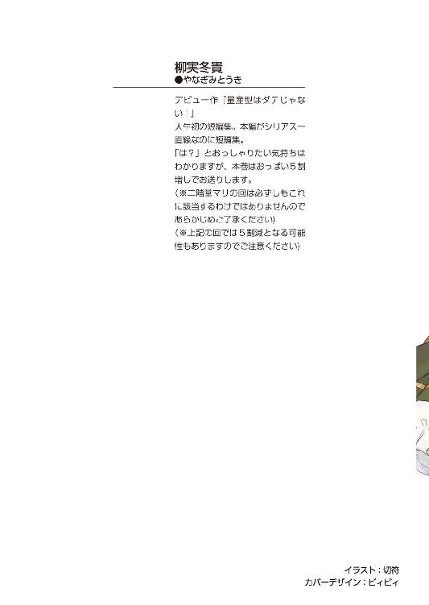
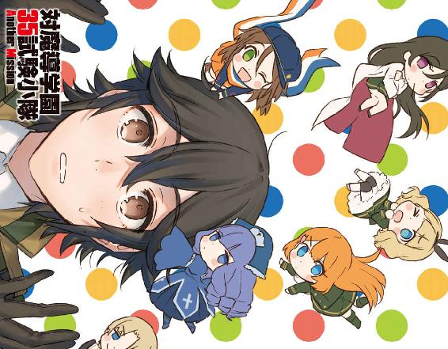
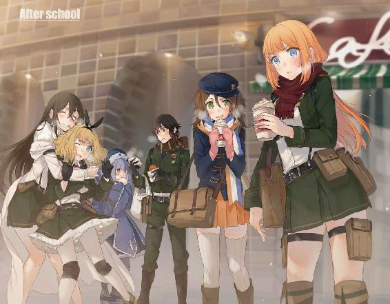
対魔導学園35試験小隊
Another Mission
柳実冬貴
富士見ファンタジア文庫
本作品の全部または一部を無断で複製、転載、配信、送信したり、ホームページ上に転載することを禁止します。また、本作品の内容を無断で改変、改ざん等を行うことも禁止します。
本作品購入時にご承諾いただいた規約により、有償・無償にかかわらず本作品を第三者に譲渡することはできません。
本作品を示すサムネイルなどのイメージ画像は、再ダウンロード時に予告なく変更される場合があります。
本作品は縦書きでレイアウトされています。
また、ご覧になるリーディングシステムにより、表示の差が認められることがあります。
口絵・本文イラスト 切符
Mission01 桜花教官の強化合宿
「──お前達は危機感を覚えないのか!?」
小隊室でいつものアフタヌーンティーに興じていた雑魚小隊の面々に、突然桜花が机に手をついて怒鳴った。
あまりにいきなりのことだったので、西園寺うさぎは驚いて草薙タケルの股間にアツアツの紅茶を零してしまう。タケルは声もなく股間を押さえながら撃沈、ぴくぴくと痙攣した。
「く、草薙っ、ごごごごめんなさいですわっ！ い、今氷を！」
うさぎがキャーキャーと慌てて冷凍庫から氷を取り出し、タケルのズボンの中へザラザラと容赦無く投入。今度は「ひょわぁ」と悲鳴を上げてタケルは床を転げ回った。
それを見て、杉波斑鳩がケタケタと笑い始める。
誰も話なんか聞いちゃいないことに、桜花はこめかみに青筋を立てていた。
その上、
「──やーやー雑魚小隊のしょく～ん！ いつも通り暇そうなあんた達のためにマリちゃんが遊びにきてやったわよ～！」
両手一杯にお菓子の袋を抱えた二階堂マリが、明るい笑顔で小隊室のドアを開けてやってきた。
「って、どしたのタケル？ やだ、おもらし？」
口からプフーッと空気を吐き出しながらマリが笑う。
「......っ、お前には男の苦しみはわっかんねぇだろぉな......頼むから今は話しかけんなっ」
涙目になりながら、タケルがマリを睨む。
その横ですみませんすみませんとうさぎが謝り、斑鳩はますます大声で笑った。
こうして、ぎゃーぎゃーとやかましい光景が繰り広げられるのがいつもの日常だった。
しかし、今日は違う。日頃の吞気な雑魚小隊に活を入れるべく、メンバーで唯一の優等生が立ち上がったのだ。
──ドンッ！
握った拳を机に叩きつける轟音が響き、再びメンバーの顔が桜花の方へ向く。見れば、桜花は瓦割りの要領で木製の机を真っ二つに割っていた。
さすがに吞気な雑魚小隊の面々も、これには開いた口が塞がらなかった。
桜花は拳を振り下ろした姿勢のまま、タケル達を睨みつけた。
「聞こえなかったのならもう一度言おう......危機感は無いのかと聞いている。答えろ草薙」
「うん!? 俺!?」
「隊長はお前なのだから当たり前だろう！」
「そ、それもそうか......危機感って、何の？」
桜花は「正座しろ」とでも言いたそうな目でタケルを睨んだ。
言われたわけでもないのに、タケルは床に正座してしまう。
「授業中は眠りこけ......小隊活動時間はいつも吞気に紅茶を飲んでポイントなど稼がずに終了......おまけに部外者がのうのうと顔を出して活動の邪魔しているこの状況に危機感を覚えないのかと聞いている！」
桜花がマリを指差しながら言う。
「なっ、みんなのソウルフレンドマリちゃんを仲間はずれにするんじゃないわよ！」
「部外者は黙っていろ！」
プンスカするマリを他所に、斑鳩が頰杖をつきながら桜花を見た。
「言いたいことはわかるけど、仕方ないじゃない？ 草薙は夜遅くまでバイトをやっているわけだし、小隊活動をしようにも魔導遺産や魔女の情報が無いんだもの。動こうにもぉ～、動けないっていうかぁ～？」
指先で髪の毛をくるくるさせながら言ってくる斑鳩に、桜花は口角を痙攣させた。
「だからといって怠けていい理由にはならないぞ！ 情報が無いなら仕入れるための努力をするのが普通だろうに！ あと草薙、ちゃんと寝ろ！」
「や......そこに関しては努力はしてるんだが......授業中はどうしてもな」
頰を指で搔きながらタケルが苦笑すると、桜花は腰に手を当てて眉をハの字にした。
「お前が苦学生なのは理解しているが、バイトのせいで学業をおろそかにしては本末転倒ではないか」
的を射た指摘にタケルは正座したままどんどん小さくなっていく。
桜花の説教くさい態度に、斑鳩は口を尖らせた。
「別にいいじゃない。術式学とか魔導史とか何の役に立つかわからないし、私は寝ていた方が効率的だと思うわ」
斑鳩が言いながら空のカップをうさぎに差し出す。うさぎは淹れ直した紅茶を、斑鳩のカップに注いだ。
「まあ、草薙は家の借金もあるわけですし、バイトをするなというのはあんまりですわよ。それに杉波の言う通り、座学の成績は進路には影響しますけど、進級には影響が無いですわ。わたくしも睡眠に割くのは悪いことではないと思いましてよ？」
言って、うさぎはソファに座ったマリにも紅茶を淹れてやる。
マリはうさぎに礼を言い、紅茶を口に運びながらじと目で桜花を見た。
「自分が優等生で理事長の七光りだからって説教？」
マリの挑発を受けて、桜花は眉根を寄せて自分の胸に手を当てた。
「失礼な女だな貴様は......！ 私は自分の実力と努力で魔女狩りになったのだと何度言えばわかるのだっ」
「どうかしらね～？ 成績だけ良くて実戦はからっきしな奴なんてごまんといると思うけどぉ？ この女って本当に強いの？」
マリが小隊メンバーに問うと、斑鳩が顎に手を当てた。
「そういえば、鳳と戦ったことがあるのって草薙だけしかいないのよね。まあ、かなり強かったって聞いたわよ」
「それって中等部の頃の話でしょ？ 今はどうかなんてわかんないじゃん？ あんた達だって成績悪いだけで土壇場じゃ結構やるわけだし。案外、今だったら勝てちゃうかもよ？」
ニヤニヤしながら見てくるマリに、タケルは顔を引きつらせた。
中等部時代、異端審問会を変えようと奮起していた頃のタケルは、二年の時に行われたクラスメイト対抗のデスマッチで桜花と戦い、完膚無きまでに敗北した。あの頃は勝てる見込みなんて一ミリも無かった。
正直、それは今も変わらない。
タケルはそう思っている。
「私の実力を疑うのだな......わかった、いいだろう」
突然、桜花が顔に影を落としながら、据わった目でマリやタケルを睨んだ。
「そういうことなら丁度いい。実は今からお前達に提案しようと思っていたプランがあるのだ......少し、趣を変えて実施するとしよう」
背後に深紅のオーラを発しながら、桜花はタケル達を見下ろす。
不敵に笑うその姿に、タケルは正直すくみ上がる思いだった。
「なぁに......ちょっとした余興だと思え。これはお前達のためでもあるのだぞ......ふふ、ふふふふふふ」
拳をボキボキと鳴らしながら、桜花は薄ら寒く微笑む。恐怖を覚えたのは、この時はタケルだけだった。
二日後。土日を迎えた雑魚小隊は、休日を返上して山奥の山荘にやってきていた。審問会が管理している別荘で、許可が下りれば審問官だけが利用できる場所だった。
小隊メンバーは日の光すらあまり届かない針葉樹林の中に、迷彩服を着た状態で立たされていた。
タケル、うさぎ、斑鳩、マリの順に並び、その四人の前には同じように迷彩服とタンクトップを着た桜花が仁王立ちしていた。
「......で、こんな場所まで連れてきて何のつもりよ？」
マリが不服そうな顔を桜花へ向ける。うさぎと斑鳩も腑に落ちないという顔で立っていた。
桜花は凜々しい表情で、皆に告げる。
「──これから二日間、皆には強化合宿を行ってもらう」
いきなりそんなことを言ってきた桜花に、皆は面食らってしまう。
「強化合宿って......基礎訓練なら必修科目で毎日行っていますし、こんなところに来なくても学園内の施設を利用すればいいだけの話では？」
うさぎが言うと、桜花は静かに目を閉じた。
「学園内部の慣れた環境では身につかないこともある。お前達の気持ちを切り替えさせるためにも合宿という形を取るのは必要なことだ」
「草薙のバイトはいいんですの？」
「バイトを休んだ分の給料は私が支払う。ここの費用も私が負担するつもりだ。魔女狩りをしていた時代の給料の使い道に困っていたところだから丁度いい」
マリがじと目を向けながら「自慢かよ」と呟く。
「合宿も悪いことばかりではないのだぞ。ここの施設には温泉もある。夜はゆっくり休むといい」
温泉と聞いて、女子達の顔色が変わる。たとえ性格が歪んでいる雑魚小隊の面子でも、女子がお風呂好きというのは変わらなかった。
「──が、夜が休息になるかどうかは昼間のお前達次第だ」
桜花はニヤリと笑って、突然マリの頭からトレードマークの帽子をひょいっと奪い取って、自分の頭に被せた。
「今から夜九時までに私からこの帽子を奪うことができなければ──お前達には夜通し私の訓練に付き合ってもらう。ふ、ふふ......眠れると思うなよ......三〇キロの背囊を担いで山越えでもしてもらおうか」
不穏な提案に、うさぎとタケルが顔を青くする。
斑鳩だけがいつものぼんやりとした顔をしている。
「何で勝負っぽくなってるの？」
「私の実力を疑われた......屈辱だった。だから一度お前達との差を見せつけてやろうと思ってなっ。なに、訓練にもなるし一石二鳥だ」
ふふん、と胸を張る桜花。単に負けず嫌いなだけだろう、と皆は思った。
斑鳩がけだるそうに肩をすくめて両手を上げる。
「やるのはいいけれど、こっちにも何かメリットが欲しいわ。餌が無いとやる気が起きないわよ」
「む......それもそうだな。では、万が一帽子を奪い取ることができた場合は、帽子を取った者の言うことを何でも聞いてやろう」
自信満々な桜花の態度に、斑鳩の目の色が変わった。
「......今、何でもって言ったわよね？」
「ああ、何でもだ。まあこの私がお前達に敗北することなど万が一にもあり得んがな」
帽子を奪われたマリは、ムキャーと地団駄を踏みながら桜花から帽子を奪い返そうとする。
桜花はマリの手をひょいと躱して訝しげな顔をした。
「何勝手に決めてんの！ あたしの帽子返してよー！」
「借りるだけだっ。帽子くらい別にいいだろうにっ」
「それはただの帽子じゃないの！ 養護施設のみんながなけなしのお金で買ってくれたものなんだから！」
「む......そうなのか」
そんな事情を知ってしまえば、桜花も強くは出られなかった。横にいた斑鳩も、批難するような顔で桜花を見ていた。
「私が代わりを用意してあげるから返してあげなさい。二階堂から帽子とマフラーを取ったら、ただの貧乳になっちゃうでしょう？ あんまりにあんまりよ」
「そーよそーよ！ 貧乳だけがあたしの取り柄──っておい爆乳このやろう！」
ノリツッコミをしつつ、斑鳩に摑みかかるマリ。
桜花は呆れ顔でため息を吐きつつ、斑鳩から代わりの代物を受け取るのだった。
「............何故だ」
代わりの物を装着した桜花は、屈辱的な顔で拳を握った。
他のメンバーは全員、笑いを堪えながら桜花を横目でちらちら見ている。
桜花の頭には、何故か犬耳がついていた。ついでに尻尾までついている。
「い、意外と、似合いますわね......」
「あはははは！ 確かに鳳桜花って犬っぽいわよね！ 超ウケる似合いすぎ！」
「体温の変化で動くように作ってあるの。帽子よりもこっちの方が俄然やる気が出るでしょう？ 耳を奪い取る前にモフモフさせてもらうがいいわ」
それぞれの反応に、桜花は顔を赤くしつつ、恥ずかしそうにタケルを睨んだ。
「く、草薙ぃ......！」
「いや、なんで俺が睨まれてんのかわからんが......まあいいんじゃねぇか？ 似合ってるし、可愛いし、別に問題無いだろ」
タケルが苦笑しつつそう言うと、桜花の顔がりんごのように真っ赤になった。
皆の視線に耐えられなくなったのか、桜花は肩を怒らせて踵を返した。
「お、お前達は一五分後に行動を開始しろっ！ この屈辱は必ず晴らしてやる......容赦しないから覚悟しておけ！」
まるで悪役の捨て台詞のようにそう言って、桜花はずんずんと一人森の中へ消えて行った。
一五分後。雑魚小隊は行動を開始。
ルールは単純。小隊メンバー全員で桜花を見つけ出し、頭の犬耳を奪う、もしくは桜花にペイント弾を直撃させることだ。
ただし桜花のペイント弾、及び樹脂ナイフの攻撃をくらった者はその場で一〇分間動けなくなるというペナルティがあった。
それぞれ使い慣れた武器を持ち、森の中へ歩いて行く。もちろん、ちゃっかりと小隊メンバーではないマリも参加していた。
「二階堂が武器を持つと、なんか危なっかしいですわね......」
アサルトライフルを構えながら先頭を歩いているうさぎが、背後を歩くマリをキョロキョロと見やりながら、不安そうに言った。
マリはニコニコしながら両手に持ったマイクロマシンガンをぶんぶんと振り回している。
「銃なんて大嫌いだったけど、この前の模擬戦トーナメントで撃った時は気持ちよくってさ～。なんかちょっとはまっちゃいそう！」
「銃口をこっちに向けないでくださいまし！ ああもうっ、藪が鬱陶しいし蚊は多いし！ うきゃぁ！ 蜘蛛の巣が顔に張り付きましたわ！」
「あはは、も～うさぎちゃんったらおっちょこちょいなんだから～──ってなんかうにょうにょしてるのが上から降ってきたよ！ これヒル!? ぎゃあああ服にくっついた！ タ、タケル取ってー！」
声を潜めるとかそういう気が一切無い二人に目を線にしながら、タケルはライターでマリにひっついたヒルを取ってやる。
「お前らちょっと静かにしろって......女の子にゲリラ戦が酷なのはわかるけど、負けたら背囊マラソンだぞ？」
「タ、タケルは平気なの!? ヒルだよヒル！ 血とかチュウチュウされちゃうんだよ!?」
「ああ、俺は......昔からこういう環境に慣れるように剣術の師匠から鍛えられてたからな。虫とか獣は平気だ」
確かにタケルの森の歩き方は達者だった。
「慣れてるって......あんた師匠からどんな稽古されてたの......？」
問われて、タケルは過去を振り返る。
血反吐を吐くような師匠からの稽古を思い出して、吐き気を催すほど辛い記憶の数々に顔を青くした。
「............本当に聞きたいか？」
「......やっぱいい。なんかこっちまでトラウマ背負いそう」
タケルの顔色を見て、マリは気まずそうに前へ向き直った。
タケルはため息を吐きつつ、今度は後ろの斑鳩を見やる。こうしたアウトドアな活動は斑鳩は苦手そうなので心配だったのだ。
ところが斑鳩は、珍しく一生懸命にタケルの後にしっかりとついてきていた。顔もやる気に満ちている。
ただ、武器は装弾数二発のデリンジャー。そして着ている服が何故かナースさんだった。
「今日は衛生兵スタイルよ」
真顔でそんなこと言われても困る。
「......お前、たまには真面目にやれよ」
「何？ 大真面目だけど？」
「どう考えてもその恰好は真面目には見えねぇだろ。何の意味があるんだ？」
「バカね、ハニートラップに決まってるじゃない」
妙に凜々しい顔で言われて、タケルは目元をひくつかせた。
「......鳳、女だぜ？」
「？ だから？ 私も女よ？」
心底不思議そうな顔。会話が嚙み合ってなかった。
「......そういうのに引っかかるのはお前と俺だけだと思う」
「そんなこと無いわ。この姿を見れば、鳳だって一瞬動きが止まるはずよ。相手の隙を作るのは戦闘の基本。そういう戦闘技術があるって、昔漫画で読んだの。なんとかコマンドー？ あれは素晴らしいわよ。この技で鳳をノックアウトして、いろいろともちゃもちゃにしてやるつもりよ」
拳を握って猛々しく言われても、ナース服はナース服である。そんな架空の技で桜花を騙せるとは到底思えなかった。
タケルは森を歩くのを再開した。
（......まあ、最近だらけ気味だったし、鳳の言うことももっともだよな。こういう密林想定のフィールドでの実戦訓練は学園じゃあんまりやらないし）
若干上の空でそんなことを考えながらも、タケルは樹脂刀の柄を握った。
（......懐かしいな、この空気）
中等部の時のデスマッチを思い出しながら感慨にふける。
一年の時は座学が主だったのに、二年に上がるなりいきなりクラスメイト同士で殺し合いの真似事をしろと言われ、戸惑う生徒達の中でタケルと桜花だけが動じていなかった。
タケルは桜花をひと目見て、「こいつは強い」と確信した。
それでもあの時は負ける気がしなかった。自分の修行の成果を発揮する場を与えられたことで、むしろやる気を漲らせていた。
そして、結果はあの敗北。手も足も出せずに終わったのである。
若かったなぁ、などと思いながら、タケルは小さく笑う。
（正直、ちょっとワクワクしてるんだよな）
中等部時代は掃魔刀を使用しても勝てなかったが、今の自分ならば、と思わなくもない。
タケルは少し本気で挑もうと、気を引き締めた。
......が、
「──あれ？」
気づけば、前を歩いていたはずのうさぎとマリがいなくなっていた。
「............やっべぇ、やっちまった」
上の空で歩いていたせいで、二人を見失ってしまった。
目の前には鬱蒼と広がる木々と藪。どこを見ても似たような風景だ。
こうした日の光がほとんど届かない針葉樹林は、人の方向感覚を容易く奪ってしまうのだ。
タケルは斑鳩を連れて、慌ててうさぎとマリを捜すのだった。
先頭を進んでいたうさぎは、アサルトライフルを構えながら慎重に森を行く。
そして、高台から窪地になっている箇所に何かを発見して、ハンドサインで止まれと後方の味方へ指示を送る。
「何か見えましたわ。左右に展開して包囲しましょう」
うさぎが提案するが、背後から返答が無い。
「草薙？」
後ろには誰もいなかった。
「ふ......ふわわわわ」
うさぎの顔が見る見るうちに蒼白になる。
孤立したのを自覚すると、ライフルをカタカタ震わせながら挙動不審に辺りを警戒。あからさまに怯えながら、視線をきょろきょろと動かす。
あがり症のうさぎにとって、この状況は最悪だった。
葉が擦れる音、自分が踏んだ枝が折れる音にビクつきながら、さきほど発見した黄土色の物体へ近づく。
スコープで覗いて物体が何かを確かめると、うさぎは驚きに目を剝いた。
窪地の中央に、犬耳が無防備にポツンと置かれていたのだ。
（ど、どう考えても罠ですわ......）
うさぎは木の陰に隠れながら周囲を警戒。相手に少しでも動きがあれば、うさぎの反射神経ならば対応できる。
うさぎは息を潜めて、隠れているであろう桜花の動きを待った。
周囲三六〇度を警戒。索敵が得意なのはスナイパーならば当然のこと。気配の察知には長けている。
が、その時。
──ストン、と、背後で音がした。
慌てて振り返ろうとしたが、うさぎは銃をたたき落とされて羽交い締めにされてしまう。
「あぐっ......！」
次いで腕を締め上げられ、しめった落ち葉の上に倒された挙げ句、のど元にナイフをあてがわれた。
「──甘い。上下の警戒を怠るやつがあるか」
「き、木の上にいたんですの......!?」
「西園寺は動きがわかり易すぎる。こちらが不意打ちを狙っているとわかったのなら、撤退も考慮しなければダメだ。あそこはいったん引いて、草薙達との合流を一番に考えるべきだった」
「......くぅ」
「不意を打つ側はお前の動きがわかっているのだから、無理をして単独で攻め込むのは自殺行為だぞ。西園寺うさぎ、一〇分間のペナルティだ」
腕の拘束を解かれて、うさぎはしゅんとしながら身体を起こす。
だが、うさぎが起き上がった時にはすでに、桜花は姿を消していた。
あまりの手際の良さに感服しながら、うさぎは小さくため息を吐くのだった。
「ぜぇ......ぜぇ......」
タケル達とはぐれてしまったマリは、森の中で膝に手をついて荒い息を吐いた。正確にははぐれたのではなく、置いて行かれたのである。
運動神経が度し難いほどに悪いマリには、森での訓練など、はなから無理だったのだ。
気づけば、マリはぬかるんだ湿地帯に迷い込んでいた。足下を小川が流れている。一昨日の雨で増水こそしていないものの、足場が非常に悪かった。
「う～......ヒルとかいっぱいいそうで嫌だな～......来るんじゃなかったよ」
泥に足を取られながら、マリはあぶなっかしく歩く。
そして、よろめいて泥の壁に手をついた瞬間。
むにゅん。
「ん？」
手に、明らかに泥とは違う柔らかい感触。
摑んだ手の方を見ると、泥の壁に、明らかに不自然な二つの膨らみが。
その直後壁がうごめき、突然泥まみれの何かが襲いかかってきた。
「ぎゃああああああああああ！」
悲鳴を上げながら、泥から出てきた何者かに拘束され、首もとに樹脂ナイフをあてがわれてしまう。
青い顔を向けると、全身に泥を塗りたくった桜花がいた。
泥の壁と一体化して待ち伏せしていたのだ。
「あそこで転ぶとは思わなかったが......まあいい。二階堂マリ、一〇分のペナルティだ」
「そこまでする!? あんたどこのベトナム帰りよ！」
マリの指摘に、桜花は戦場で地獄を見たかのような濁った瞳を見開きながら、首もとのナイフをさらに押しつける。
マリが「ひぃ」と喉を鳴らす。
「容赦しないから覚悟しろと言ったはずだぞ」
「どんだけ負けず嫌いなのよっ。ていうか隠れて不意打ちなんて卑怯じゃん！」
「一対多数ならば当然のことだ。私は勝つためなら手段を選ばない。そもそもバラバラになって勝手に自滅したお前達が悪い」
「あーもうっ、泥がマフラーについちゃったじゃない！ 離しなさいよ！ あんたそれでも女なの!? いくらおっぱいデカくて髪が綺麗だからって汚い女は嫌われるわよ！」
マリの言うことに少しグサッときたのか、桜花はバツの悪そうな顔をする。
「っ、関係ない。戦いに女のプライドなど──」
「ばっちーばっちー！ えんがちょー！」
「............」
桜花は無言で、彼女の頭を鷲摑みしてぐぐぐっと泥の壁へと近づけていく。
マリの顔面が泥の壁へ迫る。
「ってちょっ！ やめっ、ねぇちょっと！ わかったって負け認めるからっ、捕虜への拷問は法律で──ぎゃああああああ！」
悲痛な叫びが、森の中に木霊した。
マリの悲鳴を聞きつけて、タケルと斑鳩は森を走っていた。
静まり返った森の中、タケルは小川付近で足を止めた。
「さっきの悲鳴、このへんからだよな......」
「二階堂のようね。悲鳴の後に、ふぇーんとかいう泣き声も聞こえたわ」
マリの身に何が起こったのかはわからないが、結果がどうなったかはだいたい想像がつく。
タケルは双眼鏡を取り出して、小川の上流を見た。
両サイドを小さな崖に挟まれた小川付近に人影。
崖の泥壁に顔を突っ込んだまま動かないマリと、そして──機関銃を両手に持ち、弾帯を肩にかけた桜花がズンズンと歩いているのが見えた。
思わず「ひぃ」と声が漏れる。
泥まみれの身体。迷彩ズボンにタンクトップ。まるでアクション映画に出てくる特殊部隊員のようだ。ただ、頭に被っているのは緑色の帽子ではなく犬耳だ。しかも桜花の体温に反応して激しくピコピコ動いている。
彼女の目は、遠方であるにもかかわらずこちらを向いていた。
（すでに位置がバレてやがる......！）
蒼い炎を宿した瞳をまっすぐにタケル達へ向けて、耳をピコピコさせながら桜花がこっちへやってくる。
「い、いったん引くぞ......！ 機関銃はさすがにまずい！」
タケルが後退しようとすると、斑鳩が肩を摑んだ。
「草薙は背後に回り込んで。ここは私が囮になるわ」
「......杉波、お前」
「いいから、斑鳩お姉さんにお任せよ」
ぐっと親指を立ててウィンクなんぞしている斑鳩に対して、期待ではなく不安だけが残った。
まあいいやと思い、タケルは音を立てずに藪の中へと身を隠し、桜花の動きを確認しながら背後へ回り込む。
草木の間から、桜花と斑鳩という珍しい対峙の様子を窺う。
斑鳩は、藪の中から桜花の目の前に躍り出た。桜花は全て予測済みだと言わんばかりに、腰だめに機関銃を構える。
両者は近距離で身構えながら睨み合う。
そして、桜花がトリガーを引き絞ろうとしたその瞬間。
おもむろに斑鳩が懐から紙切れのようなものを取り出した。
さらに前へ突き出すようにそれを桜花に見せつける。
その紙切れは──桜花の生着替え写真だった。
「今ここで私を撃てば──この写真を学園中にばらまくわ！」
............。
............。
（──ナース全然関係ねぇ！）
おまけにただの脅迫である。
斑鳩はドヤ顔を炸裂させながら、写真をヒラヒラとさせる。
「さぁさぁさぁ、ばらまかれたくなかったらそこで跪きなさい！ 傅きなさい！ そして靴をなめ──」
──バルルルルルル！
斑鳩のテンションが最高潮になった瞬間、桜花は呆れ顔で機関銃を連射した。
斑鳩の身体が黄色いペイントだらけになる。まっ黄色になった斑鳩から、桜花が写真を奪い取る。
「杉波斑鳩......ペナルティ一〇分だ。アホか」
「ふっふっふ......残念だったわね。写真はその一枚だけではないのよ！」
斑鳩が、バッと数十枚に及ぶ盗撮写真をどこからともなく取り出してみせる。桜花は、無慈悲なペイント弾を斑鳩の尻に向けて全弾発射した。
ペイント弾といっても結構痛いので、斑鳩は「ひゃいん」と悲鳴を上げて撃沈した。
尻を突き上げたまま荒い息を吐く斑鳩を見下ろしつつ、桜花はぴくぴくと顔を痙攣させていた。
「写真のネガは後で回収させてもらうからそのつもりでいろ......！」
「はぁ、はぁ......やだ、これ、ちょっと癖になっちゃいそうじゃない」
尻をふりふりしながら身もだえる斑鳩から視線を外し、桜花は顔を引き締めた。
「草薙、いるのはわかっている！ 出てこい！」
桜花の声を聞いて、木の陰に隠れていたタケルはため息を吐いた。
斑鳩とのやりとりの間も、桜花には一瞬の隙も無かった。銃で狙うならまだしも、タケルは剣しか使えない。ゼロ距離まで接近できなければ奇襲もなにもなかった。
タケルは仕方なく桜花の前に姿を晒し、剣を抜いて対峙する。
桜花も、機関銃を捨ててホルスターから愛用の拳銃を引き抜いた。
そして、口元をうっすらと弧を描かせた。
「......中等部時代を思い出すな。あの時も確か、こうして最後の二人になった私達が向き合っていた」
「覚えてたのか」
「最初は忘れていたが......《英雄》との戦闘を終えた時に思い出したのだ。あの頃と比べて、お前の表情は柔らかくなった」
だが、と付け加えて、桜花は銃口をタケルへ向ける。
「──目の光の強さは、昔と変わっていない」
そう言われて、タケルも小さく笑った。
桜花はゆっくりと横へ歩きながら、タケルへしっかりと銃口を向ける。タケルも間合いを測りながら、すり足をしつつ桜花へ切っ先を向ける。
「掃魔刀を使って構わないぞ。お互い、全力でやろうではないか」
「......いや、さすがにアレで斬りかかったら樹脂刀でも怪我させちまう」
その言葉を聞いて、桜花は失望したようにため息を吐きながら首を横に振った。
「......草薙、私の言葉の意味がわからなかったのか？」
「？」
「私は今──掃魔刀を使わなければ相手にならないと言ったつもりだぞ」
「......なっ......に？」
ずきんと、タケルの心が少しだけ痛みを覚えた。
桜花は銃口を向けつつ、さらに続けた。
「お前が改めるべきはその剣術に対する固執だ。いい加減、銃が扱えるように努力したらどうだ？」
「............」
「剣が──銃に敵うはずがないだろう」
プチン。
タケルの中で、何かが切れる音がした。見る見るうちに、タケルの表情が怒りに染まっていく。
「──言ったな......！」
奥歯を嚙みしめながら、タケルは剣の柄を強く握った。
そして、脳の処理速度を限界まで発揮させる技、掃魔刀を発動した。スローになった世界で、タケルだけが素早く動く。
（斬りはしない！ 銃を叩き落とすだけだ！）
一気に間合いを詰め、狙いを銃身に定めて剣を振り下ろす。
が、次の瞬間──タケルは何かに足を取られてぐいっと引っ張られた。
「うぉっ──!?」
勢いよく足を持ち上げられて、気づけばタケルは宙吊りになっていた。
掃魔刀を解除して、宙ぶらりんのまま自分の状況を確認する。
右足に、ロープが絡まっている。
「ト......トラップ!?」
啞然としながら、タケルは桜花を見る。
逆さまに映っている桜花は、苦笑しつつタケルを見つめていた。
してやられた。桜花は、タケルに掃魔刀を使用させて、罠に引っかかるように挑発したのだ。
（......銃を構えながら横に移動したのは、間合いを確認するためじゃなくて俺を罠に誘導するためか......）
タケルは身体の力みを解き、弱々しく笑いながら重力に身を任せた。
「............完敗だな、これは」
「草薙の欠点は、やはり剣術を侮辱された時のキレ易さだ。このような安い挑発で頭に血を上らせてしまえば、いずれ命を落とすぞ」
「......まったくその通りだ」
「杉波はともかくとして、西園寺と草薙には、自分の欠点に対する危機感を持ってほしかったのだ。この合宿もそのために企画した。これを切っ掛けに、二人の欠点を克服する糸口が見つかればと思ってな」
ぐうの音も出ない。本当に、どっちが隊長かわからなくなってくる。
桜花は、「ともあれ」と付け足して、タケルの目の前までやってきた。
そして、申し訳なさそうに言う。
「作戦とはいえ......お前のプライドを傷つけてしまった。すまない、どうか許してほしい」
「はは、気にしてねぇよ。それに実際、その通りだからキレちまったわけで」
タケルがそう言うと、桜花は真剣な表情で首を振りつつ、タケルの頰に手を当てた。
「お前の銃の腕前が努力でどうにかなる代物ではないことは重々承知しているし......何より、剣は弱くなどない。今まで、私はお前の剣術に何度も命を救われてきたのだぞ」
「......鳳」
「お前は強い。私が保証する。だからきちんと謝らせてくれ。本当にすまなかった」
嬉しいことを言われて、思わず桜花を見つめてしまう。なんだか二人の空気が妙なことになってきた、そのとき。
背後から殺気を感じて、桜花が身体をひねった。
風を切って、頭部スレスレをペイント弾が通り過ぎる。
「っ、西園寺かッ！」
桜花の視線の先には、高台から銃口を向けるうさぎの姿があった。
「一〇分経ちましたからねぇ！ なぁにを二人でいちゃついてますのかしらー！」
タケルと桜花のやりとりを全部見ていたのだろう。嫉妬に燃えたうさぎが桜花へライフルを連射する。
桜花はギリギリでペイント弾を躱したが、弾みで犬耳のヘアバンドが頭から離れてしまう。
「しまっ──！」
慌てて犬耳を摑もうとしたが、指先に弾かれてそのまま、
そのまま──逆さ吊りのタケルの手元へ。
「え？」
「......なっ」
呆けた顔のまま犬耳を摑むタケルと、呆気にとられた桜花が再び見つめ合う。
勝利条件は桜花に攻撃を当てるか犬耳を奪うこと。
そして小隊側のペナルティ条件はペイント弾をくらうか、ナイフによる攻撃をもらうこと。
タケルは罠にかかっただけであって、ペイント弾に撃たれてもいなければ、桜花のナイフに触れられてもいない。
つまり──
「......これって、俺の勝ち？」
苦笑するタケルの前で、桜花はがっくりと膝をついた。
夕食を終えて、夜九時。
タケルは一人、男風呂で身体を休めていた。
「ふぃ～......あんま入ったことないけど、広い風呂ってのもいいもんだな」
頭にタオルを載せて、湯気に霞む星空を眺める。疲れた身体に温泉の温かさが染み渡るようで、なんともいえない心地よさだった。
結局昼間の勝負はタケルの一人勝ちということだったが、罠にかかったはずの人間が勝ったというのはタケルとしても納得がいかなかった。
タケルは桜花が自分の言うことを何でも聞くという権利を放棄し、結局昼間はメンバー全員で森で戦闘訓練を行った。
桜花主導での訓練だったため、かなりハードだったが、たった一日でも効果が期待できる内容だった。
元魔女狩りというだけあって、桜花は人に教えるのも上手だった。
「なおさらどっちが隊長かわかんねぇ」
自分の不甲斐なさにへこみつつも、桜花に感謝する。生真面目な彼女の存在は、放っておくと足踏みしてしまう雑魚小隊にとっていい刺激となっていた。
桜花も最初に比べれば遥かに仲間と打ち解けてきたし、これからはもっといい方向に前進できるに違いないと、タケルは思った。
「そのためにも、自分のキレ易さをどうにかしないといけねぇよな......昔に比べれば落ち着いたと思うけど、こと剣術に対する感情だけは変わってねぇんだよな......」
独り言を呟きつつ、タケルは首を横に振って思考するのをやめた。
今は温泉を楽しもう。そう思い、肩までしっかりと湯船に浸かる。
目を細めながら癒しを嚙みしめていると、突然入り口の引き戸が開く音がした。
今施設を利用しているのは雑魚小隊だけだ。男は自分以外にいないはず。
従業員だろうかと思い、入り口の方を見やると、そこには──タオルを巻いた桜花が立っていた。
一瞬、桜花の身体を見たままぼんやりとしてしまう。
「..................ちょっと、待て」
完全に温泉を楽しんでいたせいでなかなか思考が再開しなかったが、頰を染めて恥ずかしそうにうつむく桜花を見て我に返る。
「──こ、ここ男湯だぞ鳳！ そ、それとも俺が間違えてたのか!?」
慌てふためきながら立ち上がろうとしたが、自分が全裸なのを思い出してすぐに湯船に沈み直す。
桜花はチラチラとタケルに視線を送りながら、ぼそりと言った。
「......き、今日の勝負に勝ったのは......草薙だろう。お前はいらんと言っていたが、何もしてやれないのは私の気がすまん」
「い、いや......それはともかくとして、だからってなんで男湯に......」
タケルが問うと、桜花は上目遣いで恥ずかしそうに口をもごもごさせた。
「杉波に......背中くらい流してやれと言われたのだ。どうかと思ったのだが......私もお前にしてやれることなど、これくらいしか思いつかなかった」
いや、他になんかもっとあるだろう......と思いつつも、タケルは嫌だとは断れなかった。
そもそも全然嫌じゃないのが、一番の問題だった。
「かゆいところはないか......？」
「だ、大丈夫」
泡のついたタオルで、背中をまんべんなく擦られながら、タケルは目のやり場に困っていた。
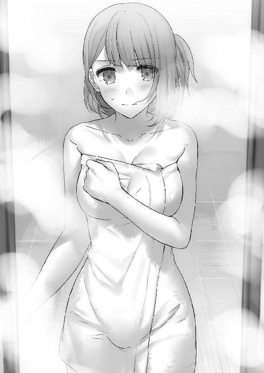
絶対に振り向くなと言われたのだが目の前に鏡があるので、さっきからチラチラと桜花の身体が見えてしまっていた。
桜花は日頃から自分が筋肉質だと言っているが、全くそうは見えない。
むしろ非常に女の子らしい体型をしていると思う。胸は大きいし、腰だって......。
（っ、今そういうことを考えると非常にまずい......！）
タケルは頭を振る。
「む、無理してないか？ 杉波に言われたんだろ？」
「いや、そんなことはない。は、裸の、付き合いというのだろう？ コミュニケーションの一つだと、杉波から聞いた。人付き合いが苦手な私にとっては、これも訓練になる」
......それは同性同士で行われるものであって、異性同士だといろいろ誤解を招いたり、特に男の方がいろいろ我慢を強いられてしまう。
「それに草薙にはいろいろと背負わせてしまっているからな......労ってやるくらいのことをしないと、私の気がすまない」
言って、桜花はタケルの背中にそっと触れた。
「こうして触れてみると、やはり大きいな、お前の背中は」
感慨深くそう言いながら、桜花はタケルの背中を洗う。
単純に気持ちが良かったが、ただ背中を洗われているだけなのに、とてつもなくドキドキしてしまっていた。
桜花は真剣な顔で一通り洗い終えると、小さく頷いた。
「よし、次は──」
「前は自分でやるからな!?」
「──当たり前だろうっ。私だってそこまで女を捨てたつもりはないぞっ」
ほっとして、タケルは肩の力を抜いた。
きっと次は、シャワーで泡を落としてくれるつもりだったのだろう。
そう思ったのもつかの間、突然、背中にむにゅんという感触が襲った。
何だこれ？ と思って鏡を見た瞬間、タケルは目を点にした。
背中に、桜花が身体を押しつけている。一瞬のぼせて倒れたのかと思ったが、そうではない。
桜花は自分の胸や身体で、タケルの背中を洗い始めたのだ。
「なにしてんだ!?」
「？ は、裸の付き合いとはこういうものなのだろう？ 労う相手の身体を、自分の身体で洗ってやるのが普通だと杉波が......」
......とんでもないことを吹き込まれていたようだった。
タケルは慌てて桜花を止めようとしたが、声が出ない。
違う。声が出ないのではなく、出さないだけだ。
自分で誤魔化しても仕方がない。正直タケルは、桜花の勘違いから生まれたこの行為をやめてほしくなかったのだ。
背中に感じる柔らかい二つのふくらみの感触は至福と言わざるを得ない。
鏡越しに見える桜花は、顔を赤くしながら一生懸命に胸でタケルの身体を洗っている。濡れた髪、上気した頰、背中で滑るように動く乳房。
意味のわからん状況だが......。
（や、正直、たまらん、この状況）
やめてほしくないというのが本音である。草薙タケルという男は、意外とむっつりスケベなのだった。
なんともいえない夢心地な表情で桜花の感触を楽しむ。
なに、今すぐ止めるのはもったいない。据え膳喰わぬは男の恥とまでは言わないが、合意の上なのだからちょっとくらい──。
そう思った時だった。
再び、入り口の引き戸がガラリと開かれたかと思えば、そこに──
「「............」」
一糸まとわぬうさぎとマリの姿があった。
その二人の後ろで、斑鳩が桜花とタケルのやりとりを見て「ぶふっ！」と噴き出していた。
うさぎとマリは、頰を染めながら荒い息を吐きつつ胸を押しつける桜花と、至福の表情で鼻の下を伸ばすタケルを見て、硬直していた。
タケルは一瞬で顔を青くしながら、何が起こったのかを考える。
あの斑鳩が、タケルにおいしい思いをさせるだけで終わらせるわけがなかった。
結論は一つ。タケルはまたもや罠にはまってしまったのだ。
この状況は、どうあっても言い訳なんてできなかった。
──その後、タケルがうさぎとマリから風呂桶でしこたまビンタされたのは言うまでもない。
Mission02 第三五酔いどれ小隊
「すまない......やってしまった......」
桜花は魔導遺産の回収箱を抱きしめながら、学園へ向かうための坂道をとぼとぼと歩いていた。
横を歩いていたタケルが、桜花を元気づけるように肩に手を置く。
「まあ今日のは仕方ねぇよ。俺だって我慢すんの大変だったし」
タケルがフォローしても、桜花はしょんぼりと下を向いてしまう。
時刻は夕刻の一八時。二人は小隊活動を終え、学園に戻る最中だった。
今日は珍しく魔導遺産の押収に成功していた。戦闘も行わずに済み、犠牲を出さず事件を解決することができたのだ。
しかし、順風満帆であったかというとそうではない。
「ペナルティが発生したら、なけなしのポイントが逆に減ってしまうかもしれない......私が現場で暴れたせいだ」
桜花の言う通り、今回の事案にはペナルティが発生したのである。
進級のためのポイントというものは、ランク分けされている魔導遺産の確保や、逮捕した魔導犯罪者の危険指定などで変わる。
ただし犯罪者を捕らえ、魔導遺産を押収すれば必ず規定のポイントがもらえるかというと、決してそんなことはないのだ。
試験小隊制度にはペナルティが存在し、ポイントが減少してしまう場合がある。
ペナルティの条件は様々だ。捕縛した犯人の状態や、魔導遺産の破損状況、現場の器物破損、戦闘による一般人への被害......などなどだ。
無軌道詩篇を確保した時にうさぎが一般人を誤射したのがいい例である。
あの時は被害者側が不問にしてくれたためペナルティは発生しなかったが、場合によっては確保した魔導遺産のポイントをペナルティが上回り、逆に損をしてしまうこともあった。
今回発生したペナルティの原因は......桜花だ。
「怪我人は出なかったわけだし、そんなに落ち込むなよ」
「し、しかし......あの程度のことで現場を荒らしてしまうなど、失態もいいところではないか......」
「女の子なんだから、お尻を触られたら誰だって怒るさ」
フォローを入れつつも、タケルは苦笑いを浮かべていた。
桜花の暴走の原因は、犯人側からセクハラを受けたためだった。
現場は繁華街のキャバクラ。魔導遺産を所持していた容疑者はその店の常連で、惚れ込んでいたキャバ嬢に指輪をプレゼントしたところを小隊が確保したのである。だが犯人は泥酔状態にあり、桜花をキャバ嬢と勘違いしてお尻に手を伸ばしたのだ。
結果、桜花がどういう行動に出たのかは言わずもがなである。
「まあ......さすがに実弾をぶっ放したのはやりすぎだけどな」
「うぅ......申し訳ないぃ」
桜花が自責の念に苛まれ、しくしくと涙を流す。
幸い容疑者に怪我は無かったが、店の備品を大量に破損させたため、ペナルティは確実に魔導遺産のポイントを上回る。損害賠償は学園持ちなため、きっとペナルティ以外にも審査員からお叱りが下るだろう。
「審査員には私が頭を下げておくから、草薙は先に小隊室に戻っていてくれ......皆にもすまないと伝えておいてくれると助かる」
「俺は隊長だぞ？ 一緒に行くに決まってるだろ。俺にも犯人にお前の尻を触らせちまった責任があるからな」
責任の発生源はそこじゃない、と突っ込むべきところだったが、桜花はタケルの隊長としての心意気にしんみりと「ありがとう」と返すのだった。
二人は学園に入り、鍛冶師棟と呼ばれる場所へ赴いた。
ここは異端審問官の鍛冶師達が集まる棟で、兵器開発や対魔導研究、魔導遺産の鑑定が行われる場所だった。
小隊活動で押収した魔導遺産はここの受付に引き渡して鑑定を行ってもらうので、生徒もよく訪れる。
桜花は回収箱を置いて、「お願いします」と言いながら窓口を覗き込んだ。
が、受付の人間がいない。タケルも一緒になって窓口を覗き込むと、奥が何やら騒がしいことになっていた。
事務所には電話が鳴り響き、鍛冶師達が忙しなく動いているのが見えた。
何度も窓口のベルを鳴らすと、頭をもしゃもしゃと搔きながら白衣を着た鍛冶師が一人やってきた。
「悪いな、待たせてしまって......押収した魔導遺産か？」
「はい、鑑定お願いします。あの、何かあったのですか？」
桜花が問うと、鍛冶師はかったるそうな顔で苦笑した。
「実は魔女狩りの連中が大規模な売買組織のアジトを押さえたらしくてな......そこの倉庫から大量の魔導遺産が発見されたんだ」
桜花とタケルが感嘆の声を上げる。さすがはプロの魔女狩り、対処する案件が大きい。
「それだけだったらまあ忙しくなるだけで済む話なんだが......倉庫の状態がかなり悪かったみたいでな。漏れ出した魔力のせいで周囲一帯が準魔力災害を起こしちまってたらしい」
「それは......下手をすると回収時に魔導遺産の魔法が暴発しますね」
「ああ、今からここの鍛冶師も処理のために出動することになった......人手が足りてないから、悪いんだけど今日中に鑑定結果は出ないぞ」
「......なるほど、残念ですが仕方が無いですね。お疲れ様です」
「うちの部署は今日は徹夜だよ......」
鍛冶師はけだるそうにしながら愚痴を垂れた。
こうしたことはよくあることだった。タケル達の通う対魔導学園は本校であり、異端審問会の本部としても機能しているため人員はかなり多い。しかし場所が場所であるため、扱う事件の数が半端ではないのだ。人手不足になってしまうことも珍しくはない。
今日は魔導遺産を預けるだけに留めて、桜花とタケルが小隊室に引き返そうとした時、さきほどの鍛冶師が窓口から顔を出して声をかけてきた。
「お前らさ、自分達でその魔導遺産、鑑定してみないか？」
「え？ それってまずいんじゃ......」
「試験小隊が魔導遺産の鑑定をしちゃいけないなんて校則は無いから安心しろよ。まあもちろん、鑑定中に何が起こっても自己責任になるけどな」
「いや、そんなリスク背負っても仕方無いですし......」
タケルが言うと、鍛冶師はニタニタしながらウィンクをしてみせた。
「もしちゃんと鑑定できたらポイント二倍にしてもらえるように審査員に言っといてやるよ。知り合いが一人いるんだ。絶対上にはバレないようにする。こっちとしても助かるし、お前らにとっても損は無いだろ？」
鍛冶師の提案を聞いて、真面目な桜花は食ってかかろうとした。
が、桜花が声を出す前に、
「やります！ やらせてください！」
すでにタケルは鍛冶師の手をがしりと握っていた。
そしていつもの小隊室。メンバー＋二階堂マリは、回収箱に収められた魔導遺産の鑑定を行っていた。
斑鳩とマリが、ルーペでじぃっと魔導遺産を見つめている。
「どうですの？ 何かわかりまして？」
うさぎが尋ねると、斑鳩とマリは眉根を寄せながら答える。
「形状は魔導遺産によくある指輪型。素材は低級吸魔素材、ただの銀よ。刻印とかは彫られてないし、魔法的な加工は一切施されてないわね」
斑鳩が技術者として見解を述べる。
「魔力も微弱すぎて属性まではよくわかんないわ。たぶん精神操作か肉体異常系だと思うんだけど......あれ系は属性がいろいろあるのよねぇ。魔力試験紙の反応も薄いし、どっちにしろたいした魔導遺産じゃないわよ、たぶん」
続いてマリが魔女としての見解を述べ、その場にいた桜花以外の全員がため息を吐いた。
「はぁ......結局今回もＦラン魔導遺産ですのね。五ポイント......はずれもいいとこですわ」
「押収できただけでも成長したと思おうぜ。ポジティブポジティブ」
そうは言うが、タケルも落胆の色を隠せていない。
「でもあんた達、ノルマまであと何ポイントなんだっけ？ 確か五〇いってないわよね？ 大丈夫なの？」
マリが呆れ顔で言うと、壁際で腕を組んで立っていた桜花がムッとした顔をする。
「貴様に言われずとも承知している。だからと言ってこのような反則じみた方法でポイントを稼ぐのはよろしくない。他の試験小隊と同じ条件でなければ公平性を欠いてしまう。だいいち──」
「あんたが暴走しなければそもそもこんなことしなくて済んだのよねぇ？」
「う......ぐ......部外者には関係ないだろう！ そ、それに......私だって悪かったと思っているのだ」
「思うだけなら猿にもできるわよ～？」
「ぐ......くぅ」
悔しそうに下を向いてしまった桜花に、マリは満足そうな笑みを浮かべる。
タケルが二人の不仲さに呆れ返っていると、斑鳩がルーペから目を離した。
「ダメね。見ただけじゃどんな効果が付与されているかわからないわ」
「鍛冶師棟は立て込んでて設備を貸してもらう余裕なんて無いだろうし、実験室は閉まっちまってるしな......」
「最低でも魔法を発動させなければわからないわ。抗魔素材でできた実験用の部屋と、有機素材でできた疑似人体が必要よ」
斑鳩が匙を投げるように両手を上げる。
「そもそもどういう経緯で情報を手に入れたんですの？」
うさぎが桜花に尋ねると、桜花は腕時計型デバイスの立体ディスプレイを表示させた。
「情報源は魔女狩りの先輩だ。昨夜、魔導遺産の装飾品の露店を開いていた売人を逮捕したらしい。そいつを尋問したところ、幾人か顧客の情報を吐いたので、こちらに流してくれたのだ」
「その顧客が、今回逮捕した犯人ですのね？」
「うむ。指輪型の魔導遺産をクラブの従業員にプレゼントするつもりだった......とか何とか。恐らく従業員の気を引きたかったのだろう」
「魔導遺産の指輪を......？ それってもしかすると......」
うさぎが指輪に視線を落としながら顎に手を当てる。斑鳩も同じ仕草をしながら、目を細めた。
「......魅了の魔力が付与されているのかもしれないわね。精神操作系の可能性が高いわけだし、下心しか無い客が考えそうなことだわ」
斑鳩の予測に、皆が黙り込む。
確かにつじつまが合う。魔女狩りが逮捕したという売人が売買していた魔導遺産は低級の物ばかりだったので、永続的な効果が発揮されるとは考えにくい。一時的な効果であるのなら、キャバ嬢とふしだらな時を過ごすために使用してもおかしい話ではなかった。
「鑑定書に記すには確証が無いとダメなのよね......仕方が無いから私がはめてみるとしましょう」
斑鳩が指輪に手を伸ばす。
しかし突然マリとうさぎががっしりと斑鳩の腕を摑んだ。
「......何よ？」
訝しげな視線を向けてくる斑鳩に、マリとうさぎは額に汗を浮かばせながら目を細めた。
「ちょ、ちょっと待ってくださいですわ......ここで指輪を装着した場合、周りの人間が杉波に惚れてしまう可能性がございましてよ？」
「大丈夫よ。だって犯人は惚れさせたい相手に指輪をプレゼントしていたわけでしょう？ 周りが惚れるとは考えにくいわ」
続いて、マリが斑鳩に口を出す。
「つまりあんたがここにいる誰かに惚れちゃうってことでしょ？ やめてよ......それすごく怖いわ」
「だぁいじょうぶよ。私がここの誰かに惚れたところで状況は変わらないはずよ。せいぜいうさぎの乳揉みしだいたり、あんたのまな板ペロペロするくらいでしょうよ」
「「大惨事でしょそれ！」」
声を揃えて、マリとうさぎが指輪を斑鳩から引き離す。
マリとうさぎはお互いに指輪の縁を摘んだままだった。
「杉波にだけははめさせられませんわっ。ただでさえいつも乱暴に扱われているのに、惚れでもしたらわたくしの胸がどうなっちゃうかわかりませんわ！」
「そーよ！ 女子のお胸は女子が相手でも神聖なものなの！ スキンシップとか言ってごまかせるほどあたしの胸は安くないんだから！」
「......じゃあどうするのよ？ 誰が指にはめて試すの？」
斑鳩に言われて、うさぎとマリは口ごもる。
......何故か、二人の指輪を摘む指にぐっと力が入った。
「な、なんですの二階堂......そんなに力まないでくださいまし」
「うさぎちゃんこそ......そんなに引っ張らなくてもいいじゃない」
二人は決して指輪から手を離さない。小隊室になんとなく気まずい空気が漂う。
二人の様子を見て、斑鳩が悪戯っぽい笑みを浮かべた。
「そういえば惚れ薬って、飲んだ人間が最初に見た相手に惚れちゃうのがお約束だったわよね」
......その一言で、気まずいだけだった空気が一気に張り詰めた。
マリとうさぎは完全に指輪を奪い合う形になっている。
「どういうつもりですの二階堂......っ、あなたまさかこの指輪を......！」
「あ、あたしは魔法に耐性あるから、じ、自分ではめようと思っただけだし！ うさぎちゃんこそこの指輪どうするつもりよ！」
「わ、わたくしはただ、ポイントを諦めてこの指輪を鍛冶師に預けようとしているだけですわ......！」
ぐいぐいと引っ張り合いながら視線の火花を散らせるマリとうさぎ。
醜い女の争いがそこにあった。
（何をやってんだこいつらは......）
二人の諍いを黙って眺めていたタケルだったが、さすがに利己的な理由で魔導遺産を使用させるのはまずいと思い、止めに入ろうとした。
──その前に、何かがぷちんと切れる音がした。音の方を見れば、桜花が髪を逆立てて鬼の形相で立っていた。
「貴様ら......っ、仮にも異端審問官になろうとしている学徒が犯罪者の真似事をしようというのか......！」
桜花はずかずかとマリとうさぎに近づいていく。
「恥を知れ愚か者がーッ！」
桜花は腕を振り上げ、争いの渦中にある指輪をぶんどろうとした。
しかし運の悪いことに、指輪は桜花の手の平に収まることなく弾かれて宙を舞ってしまった。
大きく弧を描くように舞い、指輪はタケルの方へ。
「うおっ、とっ、とと！」
タケルは慌ててキャッチしようと手を伸ばしたが、上手く摑めずに手の上を指輪が躍る。
そして二、三回指輪が跳ねた後、ようやく指輪を捕らえることができた。
すっぽりと、タケルの薬指にはまった状態で。
「「「「......あ......」」」」
全員が全員、同じ反応でタケルの薬指を見た。
瞬間。
はめこまれた指輪から、光が溢れた。
「こ、これはッ！」
タケルは指輪から溢れ出る光の量に戦慄する。
魔法の発動。高濃度な魔力だ。恐らく外側を銀でコーティングして偽装していたのだろう。内側にはそれなりにランクの高い吸魔素材が隠されていたに違いない。
「まずい！ みんな逃げろーッ！」
叫んでももう遅かった。
光は頂点に達し、夜闇を照らす太陽の如く小隊室を包み込んでしまった。
魔法が発動してしまってから数分後、タケルは床に倒れた状態で目を覚ました。
自分の状態を確認する。特に異常は見られない。精神状態も安定しているし、指輪の発光も止まっていた。
少しだけ安堵して、タケルは指輪を外そうとした。
「......あれ？ 外れねぇぞ、これ」
引っ張ってもびくともしない。
まるで指輪と薬指が融合してしまったかのようだった。
仕方なく外すのを諦めてタケルが顔を上げると......目の前に何故かうさぎが立っていた。
うさぎはうつむいた状態だ。
「......うさぎ？ 大丈夫か？」
肩に手を置いて揺らしてみる。その拍子にうさぎはふらついてタケルの胸に倒れ込んできた。慌ててうさぎの身体を抱いて支える。
「やっぱ何か魔法が発動したのか!? うさぎ！ 返事しろ！」
「............」
ぺしぺしと軽く頰を叩いてやると、うさぎがゆっくりと顔を上げる。
うさぎは、
「──えへ、えへへへへへへ くしゃなぎ～？ ろーしたんれすか～？」
くしゃなぎ～？ ろーしたんれすか～？」
何故か、とろんとした赤い顔で笑っていた。
「......うさぎさん？」
「なんれすかぁ？ さん付けなんてしてぇ～。いつもみたいにうさぎって名前で呼んでくれないとイヤれすよ～」
おかしい。尋常じゃないくらいに顔が赤い上に、呂律が回っていない。しかもやたらと瞳がトロンとしている。
まさか本当に魅了の指輪だったとでもいうのだろうか？
そう思っていると、突然うさぎがタケルを押し倒してきた。
タケルは身体を支えきれずに、そのまま仰向けに倒れてしまう。
「いて！ 何しやがる......！」
「んふ～ふふふふふふふ～......くしゃなぎはあいかわらずいい匂いがするれすね～。わたくしこの匂いがとぉってもしゅきなんれすよ～」
「おい!?」
うさぎはタケルの胸元に顔を埋めてくんかくんかと匂いを嗅ぎ始めた。
続いてタケルのネクタイとシャツのボタンを外しにかかってくる。
「おまっ、何して──うひぃ！」
止めようとした時、うさぎがタケルの鎖骨のあたりをぺろりと舌で舐めた。とても熱くて艶めかしい舌の感触に、変な声が漏れてしまう。
「へへ～きもちよかったんれすか～？ もっとしてほしいれすか～？」
タケルの反応を見て、うさぎは恍惚として微笑んでいた。その表情たるや、まるで艶美な小悪魔そのものだ。
「絶対おかしい！ 俺の知ってるうさぎはこんなキャラじゃねぇ！」
馬乗りされながら、タケルはじたばたともがく。
うさぎはがっしりと股の間にタケルの胴を挟んで逃がしてくれない。
身動きが取れずにいるタケルを見下ろしながら、うさぎは頰にぷくーっと空気を含ませる。
「おかしいのはくしゃなぎれすよぅ。いつもいつもわたくしを子供扱いして、ちっともおんなとしてみてくれないんれすから......頭なでなでしてくれるのはしゅきれすけど、わたくしらってちゃんとおんなとしての機能はそなわっているんれすから......今からみしぇてあげましゅわ！」
見せるっておい、とツッコミを入れようとした時、うさぎが自分のブラウスのボタンを外し、後ろに手を回して器用にブラのホックを外した。
二つの膨らみが鞠のように弾む光景を至近距離で見つめてしまう。ブラウスから零れ出てしまいそうなムチムチとした膨らみは、とても柔らかそうな弾力を有していた。
大迫力だった。
「──いやそうじゃねぇ！ 正気に戻れうさぎ！ お前は今魔法の効果でおかしくなってんだ！」
「んふ～......くしゃなぎなら、しゃわらせてあげてもいいんれすのよ～」
「聞いてねぇこいつ！」
やばい。このままだと欲望に身を任せてしまいそうだ。うさぎはタケルの両手を摑み、自分の胸の膨らみに持っていこうとしていた。
正直触りたい。鷲摑んでしまいたい。顔とか埋めてみたい。
でも隊長としての尊厳と、草薙タケルとしてのアイデンティティを守るためにも欲望に身を任せるわけにはいかなかった。
南無三という気持ちで手を振り払おうとした時、突然うさぎの動きが止まった。
うさぎはとろんとした瞳を、タケルの左手の薬指に向けた。正確には薬指ではなく、そこにはめられた指輪をじっと見つめている。
うさぎは、にへら～と笑った。
「えへ～......およめしゃ～ん......」
......お嫁さん？
指輪を見て、うさぎは心底嬉しそうな顔でそう呟いた。
さらに何を思ったのか、ぱくりとタケルの薬指を口に咥える。
と──そのままパタンとタケルの上に倒れてしまった。
「うひゃぁ!?」
むにん、という胸の感触に跳び上がりそうになる。
早いところうさぎをどかそうと思ったのだが、そこでタケルは微かに鼻孔を擽る匂いに気づいた。
「......これ、酒の匂いか？」
胸板に顔を埋めるうさぎの口から、僅かにアルコールの香りがした。
うさぎはタケルの指を咥えたまま、むにゃむにゃと口を動かしている。
「くしゃなぎぃ......あなた～......」
とても幸せそうな顔でタケルの名を呼んでいるが、寝言だった。
タケルはうさぎの下敷きになったまま、薬指にはめられた指輪を見た。
（......もしかして）
指輪の効果について答えにたどり着きそうになった時。
突然、寝転がっているタケルの胸ぐらを摑む者がいた。
マリだった。
マリはタケルの胸ぐらを摑み上げて、そのまま起き上がらせた。
「ぐぇ......マ、マリ......まさかお前も......！」
「......タケル」
前髪に隠れて表情は見えなかったが、マリの口から出た声ははっきりとしていた。
魔法にかかっていない？ となればマリは今のうさぎとのやりとりを見て怒っているのだろう。タケルは慌てて謝ろうとしたのだが......。
「なんでよぉぉぉ......タケルぅぅぅぅ！」
......何故か、マリは号泣していた。
瞳に大粒の涙を浮かばせて、マリはタケルの胸ぐらを摑んだままわんわんと泣いている。
「マリ......な、なんで泣いてんだ？」
「なんであたしがいるのにうさぎちゃんとイチャイチャしてるのよぉ！ なんでうさぎちゃんのお胸前にして涎垂らしてるのぉ!? うぇーん！」
「垂らしてねぇよ！ つか別にイチャイチャしてねぇだろ!? これは魔導遺産のせいでうさぎが──」
「え────ん！ タケルのぶぁか────！」
ポカポカポカとマリがタケルの胸板を叩いてくる。
別に痛くはないが、この状況をどうしたらいいのかさっぱりわからない。
うさぎ同様に、やはりマリもどこか変だった。
顔をよく見てみると、うさぎと同じように頰が紅潮しており、瞳もとろんとしている。
同じ症状だ。タケルはもしやと思い、マリの肩を摑んで顔を近づけた。
鼻先をマリの唇に近づけて、匂いを嗅ぐと、やはり微かにアルコールの匂いがした。
（間違いない......この魔導遺産の効果は魅了じゃない......泥酔だ......！）
魔法の一種にそういうものがあると、過去に授業で習ったような気がする。属性辞典にも『酔』とかいう冗談じみたものが載っていた。きっと逮捕した容疑者は売人に騙されて『泥酔の指輪』を売りつけられたのだろう。
逮捕時に容疑者が泥酔していたのも、きっとこの指輪のせいだ。魅了の指輪と勘違いしていた容疑者は、キャバ嬢に指輪をはめさせたのだ。まさか指輪をはめた本人にではなく、周囲の人間に効果が表れるとは夢にも思っていなかったに違いない。
効果が泥酔ならばうさぎとマリの症状にも納得がいく。
酒乱と、泣き上戸。
（ランクはＤってところか。考えたくないがこの様子だと鳳と杉波も......）
二人の様子を確認しようとした時、タケルは目の前のマリが目を瞑って唇をこちらに近づけてきていることに気づいた。
「ん♡」
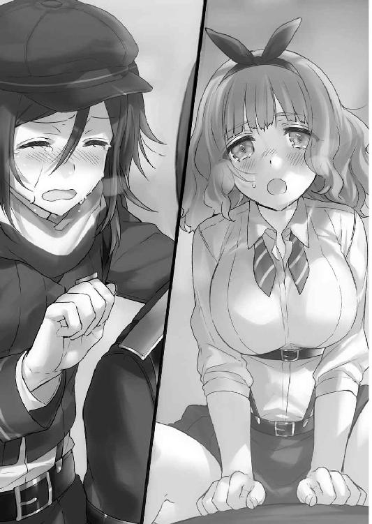
思わず、タケルはマリの頭を押さえつけてしまった。
キスを拒絶されて、マリが酷く傷ついたような顔になる。
「うぅううぅうぅうぅうぅう......どぉしてよぉ......なんであたしじゃダメなの～!?」
「そういう問題じゃねぇ！ いいかマリ、お前は今酔っ払ってるんだっ。正気じゃないの、ＯＫ!?」
「酔ってなんかないもーん！ あたしいつもこんな感じだもーん！」
......いつもこんな感じであってたまるものか。
マリはタケルに拒絶されたと勘違いして、自分の胸元に手を当てながらポロポロと涙を流した。
「どうせどうせ......あたしのはちっちゃいですよーだ......タケルがおっきいのが好きってこと、あたしだって知ってるもん......わかってるもん......！」
「いやちょっと待て、何の話だ？」
「うっ、ひっく......ふぐぅ......あ、あたしだってねぇ、みんなに無い無いって言われてるけど、ちゃんとあるんだもん。そりゃちっちゃいけど......とってもとってもちっちゃいけど、ちゃんとついてるんだもん......」
「......マリ？ マリさーん？ なんでおもむろに上着脱ぎ始めてんの!? 別に今そこの話してなかったよね!?」
マリはすでに上着を脱いで、下着を取り外してしまっていた。慌てて顔を手で覆うが、男の性のせいで指の隙間からしっかりとその姿を見てしまう。
「うっく......ほら......あるでしょちゃんとぉ......」
マリの言う通り、そこには非常にささやかながらも膨らみ......のようなものがあった。タケルは別に巨乳派というわけでもないので、素直にマリを綺麗だと思った。小さいのは小さいので愛らしく、たまらなくいやらしい。きちんと女性として魅力的だと思った。
帽子にマフラーで上が裸というのは実にマニアックだ。素晴らしい。
「──そうじゃねぇだろ草薙タケル！」
危うく冷静にマリの裸を吟味してしまいそうになったところで正気に戻り、タケルはマリに自分の上着を被せてやった。
「ふぇぇぇぇぇぇん！ どして隠すのぉ！ やっぱりあたしのおっぱいなんて見たくないんだぁ！ どうせあたしのお胸は男の子みたいですよ！」
「そんなことねぇって。お前はちゃんと綺麗だよっ、ちゃんと女性として魅力的だってっ」
言いながら、扱いに困ったタケルはマリを両手に抱えて持ち上げた。そのまま小隊室のソファへ連れて行く。
酔っ払いの対処法その一。さっさと寝かしつける、である。
お姫様だっこされたマリは一瞬身をすくませたが、泣き腫らした目でタケルを見た。
「ほんとぉ？ ほんとにほんとぉ？」
「ほんとだ。お前はちゃんと可愛い......俺が保証すっから」
「カワイイ？ エロカワイイ？」
「エロ!? ......エ、エロカワイイっ、最高だよっ」
言ってるこっちが恥ずかしくなるような台詞を吐きながら、タケルはマリをソファの上に寝かせた。
膝掛けに使っていた毛布をかけてやると、マリはようやく泣くのを止めてにへら～と笑った。
「えへへ～、じゃあ、ゆるーす」
「......さいですか」
疲れたような顔で、タケルはため息を吐いた。
マリは肩まで毛布をかけて、幸せそうにタケルを見上げている。
「タケル～、おやすみのチューして～」
「お前いい加減に......」
またもやマリが「ふぇぇ」とか言いつつ涙目になる。タケルは頭をもしゃもしゃと搔き毟ってから、仕方なくマリの前髪を搔き上げた。
そして、額に軽く唇を触れさせる。
マリは満足したのか、瞼を閉じて幸せそうな寝息をたて始めた。
タケルはふらふらになりながら壁に手をついた。
「......すっげぇ疲れた......」
酔っ払いの相手というものがここまで疲労するとは思ってもみなかった。
タケルは念のためもう一度薬指の指輪を引っ張った。
抜けない。びくともしない。もう指輪を切断するか指を切り落とすしかないのではないかと思い始める。
どうしたものかと考えあぐねていると、
「あははははははははははは！ どーん！」
背後から笑い声が聞こえたかと思えば、背中に何かがのし掛かってきた。
倒れそうになるがなんとか堪え、背中に乗っかってきた人物を見る。
どうせ斑鳩辺りだろうと思っていたのだが......。
「あははははは！ 草薙！ 何故そんなにげっそりとした顔をしているのだー！」
まことに、まことに残念ながら桜花だった。
桜花はタケルにおぶさりながら、何故かあんパンと牛乳を手に持ってケタケタと笑っていた。
「よりにもよってお前が笑い上戸かッ......！」
「もー！ どーしてこの私が笑っているというのにお前はげっそりしているのかと聞いているのだぞー！ 答えろ～草薙～！ あはははははは！」
「こらっ、揺らすなって！ 牛乳こぼしてるこぼしてる！」
瓶からちゃぷちゃぷと牛乳がこぼれて床を汚してしまう。
そんなことを気にもせず、桜花はタケルの頰に自分の頰をすり寄せた。
「草薙の肌はすべすべなのだなー！ まるで女の子みたいではないかー！」
「うわわっ、近いっつの！ うひゃぁ！ ほっぺた舐めるんじゃねぇっ！」
「あははは！ よいではないかよいではないか～！」
笑いながら、桜花はタケルに頰をスリスリしている。
「くすぐったいっつのっ......！」
「おっ？ おっ？ なんだぁ、嫌なのか～？」
「い、嫌じゃ......ねぇけどさ」
「あふふ～じゃあ文句を言うんじゃぁ～ないっ......あははははは～」
桜花のマヌケかつ幸せそうな顔を見ていると、タケルも無下に離れろとは言えなくなってしまった。
いつも凜々しく、背筋をピンと伸ばしていた桜花のこんな姿が見れる機会は滅多にない。ソファはマリが使用しているので、仕方なくテーブルの方へ桜花を背負ったまま連れて行く。
「ふふふ～......草薙～？ 私はな～？ 今が人生でいちばぁん幸せなのだ～。みんなに出会えてほんとーによかったと思っているのだぞ～」
真っ赤な顔でニマニマしている桜花がそんなことを言うので、タケルからも笑みがこぼれた。酔いのせいとはいえ、こうして正直な気持ちが聞けたのは隊長としてすごく嬉しかった。
「そっかそっか。お前も出会った当時に比べるとだいぶ丸くなったよな」
「なにおぅ、この私が体重管理を怠るとでも思っているのか～？」
「丸くなったってそっちの意味じゃねぇんだけど......まあいいや」
苦笑しながら、タケルは桜花を椅子の上に座らせた。
桜花は酒みたいに牛乳をあおりながら、あんパンをもふもふしている。
タケルは疲れた顔で対面の椅子に腰を下ろした。
「まさか泥酔の指輪だったとはね......想定外だわ」
真横から声が聞こえて顔を向けると、隣の席に斑鳩が座っていた。
顔は赤いが、斑鳩の口調はいつも通りだ。タケルは安心したようにどっと息を吐く。
「よかった......杉波はシラフか......酒強そうだもんな」
「勝手な印象を持たれても困るのだけれど......シラフというわけでもないわ。十分ふわふわしてるわよ」
斑鳩はクールにそう言いつつ、氷の入ったグラスを口に傾けている。
まるでバーにやってきた美女みたいだった。
「これ水よ？ 飲む？」
テーブルの上にグラスを滑らせる。グラスはタケルの前でぴたりと止まった。
間接うんたらなんて気にしない。喉が渇いていたので一気に飲み干した。
斑鳩はテーブルに突っ伏しながら、顔をタケルの方へ向けている。眠たそうな表情も相まって、妙に艶やかだ。
（なんだこの場末のバーみたいな空気）
「その指輪、外れないの？」
「あ、ああ。このままだと魔力切れを待つ以外に魔法を解除させる方法が無さそうだ」
「泥酔させる魔法の消費魔力はたいしたことないはずだから、魔導遺産の保有魔力量がどのくらいかで持続時間が決まる......偽装のためのコーティングを見抜けなかった私の失態だわ。ごめんなさい」
髪を搔き上げながら斑鳩は言った。
魔導遺産の鑑定が専門分野でないとはいえ、斑鳩ですら見抜けなかったのだから相当巧妙に偽装されていたのだろう。最近は売人共の偽装のレベルが上がってきているので審問官達も手を焼いているらしい。
それにしても、まさか斑鳩が素直に謝罪を口にするとは思わなかった。
いつもミスをしてものらりくらりと躱すはずなのだが......酔うと素直になるとでもいうのだろうか？
赤くなった斑鳩というのも珍しい。実に隙だらけだ。胸が苦しかったのかブラウスの上部ボタンが外れている。組まれた脚から覗く白い肌がまぶしい。そして泣きぼくろがやたらと色っぽく見えた。
（前から思ってたけど、こいつは本当に一六歳なのか......？）
顔は年相応に幼いけれど、仕草やスタイルが子供からかけ離れている。
実のところタケルは年上タイプに弱いのだ。タケルは気を落ち着かせるためにグラスの氷を口に含んで嚙んだ。
「......まさかうちの子達が酔うとここまで乱れるとはね」
「まったくだ。お前がまともでいてくれて助かったよ」
「......まとも？ そう見える？」
聞き返されて斑鳩の方を見ると、いつのまにか目の前まで顔を近づけてきていた。
身体を仰け反らせつつも、目と鼻の先にある斑鳩の顔から視線を外せない。
斑鳩はタケルの膝に手を置いて、上体をさらに近づけてきた。こぼれ落ちそうな大きな胸が揺れる。
「......私も、酔っちゃったみたい」
誘いの常套句みたいなことを言いながら、斑鳩が迫る。
タケルはごくりと唾を飲み込み、何か誤魔化す方法が無いかと探す。
瞳が揺れて、潤った唇が震える。
そして次の瞬間。
──斑鳩は口元を手で押さえた。
「............え？」
「......」
斑鳩が無言でタケルの肩をバンバン叩いてくる。
何事かと思ったが、蒼白になった斑鳩の顔色を見て全てを察した。
急いでテーブル下にあるゴミ箱を摑み、斑鳩の顔近くに持って行く。
──オロオロオロオロオロ。
タケルは顔を背けて、口をへの字にしながら目を線のように細めた。
「............悪酔いタイプだったか」
一番酒に強そうだというのはタケルの勝手な思い込みだったらしい。
「うぇっぷ......く、草薙......ごめんなさい......」
謝罪を口にして、斑鳩がハンカチを口に当てながら顔を上げる。
吐いてしまったことを謝っているものだとばかり思っていたが......斑鳩は顔を上げるなり、自分のお腹を撫でながら潤んだ瞳でタケルを見つめた。
「......出来ちゃったみたい」
「............」
「あなたの子よ」
ぽっ、とか口で言いながら顔を赤らめる斑鳩。タケルはテーブルに置いてあった雑誌を丸めて、斑鳩の頭をスパンと引っぱたいた。
「名前は何にする？」
「......お前って、悪酔いで苦しくてもいつもと変わらないのな」
「いいパパになってね」
「いつまで続けてんだよっ、身に覚えがねぇんだよっ」
「なんだか酸っぱいものが食べたくなってオロオロオロオロ」
「だぁー！ しゃべりながら吐くんじゃねー！」
ゴミ箱をしっかりと支えてやりながら、斑鳩の背中を摩ってやる。
斑鳩は冗談を言う余裕もなくなったのか、真っ青な顔をゴミ箱に突っ込んでいる。
「うぇっぷ......不覚だわ......まさかこの私が、ここまでアルコールに弱いとは......っ」
「いつも酔っ払ってるみたいなもんだしな、杉波は......」
「ほ、誉め言葉として受け取ってお──オロオロオロオロ」
軽口を交わしつつも斑鳩の嘔吐は止まらない。
タケルは憔悴し切った顔で斑鳩の背中を摩ってやりながら、小隊室を見回した。
「あなた～......ごはんにしゅゆ～？ ......おふろ～？ ......しょれとも～......にゃふふ～」
半裸で涎を垂らしながら幸せそうに眠るうさぎ。
「ふぇん......燃料タンクってゆ～な～......あたしだけ仲間はずれにすんな～......うぇん......」
ソファで眠りながら泣いているマリ。
「もふ～！ あんパンは美味しいなぁ！ 私は三食あんパンと牛乳でも生きていけるぞ～！」
ものすごい笑顔であんパンを頰張る桜花。
「......オロオロオロオロオロオロ」
そして滝のように胃の中のものを吐き出しちゃっている斑鳩。
地獄絵図。
この状況で一番辛いのは、間違いなくタケルだった。さすがのタケルも酔っ払いと化した小隊メンバーを取りまとめられるだけの器量は持ち合わせていなかった。
この状況はいつまで続くのだろう。
指を切り落とすのは剣術家として避けたい。指輪を切断するのもダメだ。切断する事情が事情だし、許可無しに魔導遺産を使ってみたなんてことがバレれば、下手をすると逮捕される。
（どうする......どうする俺......！）
前代未聞のピンチに、タケルはげっそりした顔で指輪を見つめていた。
「くさなぎぃ？ なんだそれは～？」
不意に、あんパンを食べるのを止めて桜花がタケルの方を見ていた。
視線は薬指の指輪にとまっている。ぽーっとした顔でしばらく見つめていたが、見る見る内に表情が曇っていく。
「笑えない......笑えないぞ草薙──お前既婚者だったのかっ!?」
タケルは思わず椅子からずり落ちそうになった。この面倒くさい絡み方......酔っ払いにもほどがある。
もう弁解するのも疲れるので苦笑いを浮かべてやり過ごそうとしたところ、桜花がテーブルの上に乗ってタケルに飛びかかってきた。
椅子から仰向けに倒れると、桜花が上に乗ってくる。
「うわぁ！ いきなり何しやがる!?」
「じゅ、じゅじゅじゅ十八歳以下の婚約は禁じられている！ 何を考えているのだお前は～！」
「それこっちの台詞じゃね!?」
「い、今すぐ外すのだー！ けけけ結婚など私が許さん！ 相手は誰だ!? 言わないと逮捕するぞ！」
もの凄い剣幕で胸ぐらを摑んでガクガクと揺らしてくる。
タケルが桜花から謎の尋問を受けていると、今度はソファの背もたれからひょっこりとマリが顔を出した。
「ん～、うるさぁい......なんなのよぅ」
目を擦りながら、マリは絡み合うタケルと桜花を見た。
見る見る内に瞳を潤ませていく。
「......ふぇぇぇぇぇぇぇぇ、どうして二人でいやらしいことしてんのよぉ～！ やっぱりタケルはおっぱいがいいんだ～！ えぇん！」
「お前にはいったいこの状況がどう見えてんだよ!?」
「ていうかもう指輪までしてるじゃーん！ なんで!? 鳳桜花だけのものになっちゃヤーダー！」
なんだかよくわからない駄々をこねつつマリがソファを揺らす。その拍子にソファが倒れて、マリまでタケルに摑みかかってきた。そのまま薬指の指輪を引っ張り始める。
「ぃいててててて！ 引っ張るな！ 指ちぎれるちぎれる！」
二人にもみくちゃにされていると、今度はうさぎまで床を這いずりながらこちらへやってきた。うさぎは半分眠った状態でニヘニヘしながらやってくると、タケルの下半身に縋り付いた。
「えふぅ......およめしゃぁん......わたくしのだんなしゃまぁ......」
「なんでお前だけ一人で幸せそうにしてんだよっ！」
「ゆふふぅ......動物のうさぎはれすね～、子供い～っぱい産むんれすよ～」
ダメだ。ツッコミが追いつかない。ここは自分を優先しなければ。
タケルはやむなくこの場から逃げだそうと、三人をくっつけたまま身体を引きずって部屋の出口を目指そうとした。
だが、タケルの行く手に立ちはだかるのは......。
「く、草薙......ビニール袋......ど、どこ......」
すげー真っ青な顔の斑鳩だった。
斑鳩は這いずるタケルの頭の位置に膝をつき、口元を押さえている。
この位置は──ヤバい。
「やめっ、頼むからそれだけは勘弁して!? そこで吐いたら俺が滝行状態になっちまうだろ!?」
「ら、らめ......もうたえられにゃい......あふれひゃう......！」
「ダメダメダメだっつーの！ やめてくれ！ いくら俺でもそれは絶対にトラウマになる！ 耐えろ、杉波ー！」
斑鳩はプルプル震えて、今にも体内の斑鳩汁を吐き出しそうだ。
（どどどどうすんだよ草薙タケル！ 誰か！ もう誰でもいいから助けてくれ！）
いまだかつてない危機的状況に泣き出しそうになった。
その時──
「............」
斑鳩の向こう、小隊室のドアのところにラピスが立っているのをタケルは見た。
彼女はいつだって神出鬼没だ。今回もその例に漏れず、タケルの求めに応じて姿を現してくれたのだろう。
（そうだ──黄昏の付与！ あれでこの指輪の魔法効果を吸収しちまえば......！）
縋るような思いでラピスに手を伸ばす。
緊急事態だ！ 魔女狩り化するぞ、ラピス！
タケルは助けを求めてラピスへ思念を送ろうとした。
......だがそこで、タケルはあることに気づいてしまった。
「!? そんな......噓だろ......？」
頭からさっと血が引いていくような感覚に、顔が青ざめていく。
信じられないものを目の当たりにしてしまった。
馬鹿な。あり得ない。ラピスに限ってそんなことがあるはずがない。
そう思って改めて確認してみても、状況は変わっていなかった。
いつも人形のように白い彼女の肌が......ほんのりと赤いのだ。
「まさか......だってお前は剣なのに......魔導遺産なのに......！」
絶望に暮れたような顔で、タケルは伸ばした手を宙に彷徨わせる。
しかし次の瞬間、
「────ひっく」
ラピスの小さな口から出た可愛らしいしゃっくりを聞いた直後、伸ばしていた手が床の上に落ちた。
力無くうつぶせに突っ伏したタケルは、しくしくと涙を流す。
「ラピス......お前もか」
万策尽きたタケルには、もはや酔っ払い共の暴走をどうこうできる体力も気力も残っていなかった。
結局指輪の魔力が切れたのはそれから一時間後のことだった。
タケルの心の傷という多大なる犠牲を払いながら、泥酔の指輪による騒動は幕を閉じた。
幸い、鍛冶師がポイント二倍の約束を守ってくれたのでペナルティは帳消し。晴れて三五小隊のポイントは五〇ポイントに到達できた。後にして思えば、概ね結果オーライである。
小隊メンバーは全員酔っ払っていた時のことを覚えていなかった。
それぞれがやらかしてしまった恥ずかしいことについて、タケルは胸の中にしまっておくことにした。
その方が、タケルも含めみんな幸せでいられると思ったからだ。
ただ、大人になった時を見据えて、一つ心に決めていた。
──もし成人しても、こいつらに酒だけは絶対に飲ませない。
今回の一件を教訓として、タケルは将来の自分に固く誓うのだった。
Mission03 a day in the park
秋も終わりに近づいてきた頃、校舎裏のカエデの木の下で、二階堂マリは啞然としていた。
「あなたが好きです。僕と付き合ってください」
深く頭を下げて、右手を差し出してくる少年が目の前にいる。
エンブレムを見れば彼が対魔導学園の一年生、つまり同級生だということがわかる。
でも、わかるのはそこまでだった。
マリは彼の名前を知らなかったし、顔すらも記憶にない。出会い頭に名乗られたので隣のクラスの生徒だということはわかったが、しゃべったことは一度もないはずだった。
マリが答えを出す前に、何故自分が好きなのかを問うと、少年は答えた。
放課後に教室で一人、椅子に座ってグラウンドの生徒達を遠目から眺めている姿に心を奪われた。気づけばいつも一人でいる君が気になって仕方が無くなった。どうかこれからは、君の隣にいさせてほしい。
少年は迷いなくマリにそう言った。
マリが自分が魔女であることを打ち明けると、少年は、
「もちろんそんなことはわかっています。あなたが魔女であったとして、何か問題がありますか？」
そう言って見つめてくるだけだった。彼の瞳と言葉はとても真っ直ぐだ。
（......驚いた。まさかこの学園の生徒に告白されるとは思ってなかったわ）
どんなに関係の薄い相手からでも、好きだと言われるのは悪い気はしなかった。素直に嬉しいと思う。でも、だからといってマリの胸に高鳴りは生まれていない。好きだと言われて驚きはしたものの、動揺すらしていなかった。
心の芯は動かなかった。つまりそういうことだ。
「他に気になる人がいるから君とは付き合えない。あたしは君のことが好きでも嫌いでもない。興味もない。今はその人のことで頭がいっぱいで、気を逸らしてる余裕なんてないの」
マリは頭を下げもせず、はっきりと少年の告白を切り捨てた。
少しも期待を持たせてはいけない。告白された相手を振るのに、ありがとう、ごめんなさいは不要だ。そんな気遣いは逆に失礼だし、残酷だというのがマリの持論だった。
ただ、目だけは絶対に逸らさずに、マリは自分の気持ちを正直に伝えた。
「そうですか......わかりました。そんな気はしていたんです。いきなりこんなところに呼び出してすみませんでした」
落ち込んで曲がりそうになった背筋をピンと伸ばして、少年は去っていく。
立派な背中だった。マリが少年の背中を見守っていると、何かを思い出したように突然少年が立ち止まった。
そして、ポケットから何かを取り出して、マリの元へ戻ってくる。
「これ、よかったらその気になる人と一緒に行ってください。僕一人で行くわけにもいかないので」
二枚の紙切れを差し出されて、マリは思わず受け取ってしまう。
この街で一番大きな遊園地のチケットだった。
「それじゃ、がんばってください」
激励の一言を残して、少年は校舎裏から去っていった。
マリは渡されたチケットを、何気なく太陽に重ねるように持ち上げた。
観覧車のイラストが描かれたぺらぺらのチケットは、二枚ある。
「──いよっしゃあ！」
チケットを太陽にかざしたまま、マリはガッツポーズを決めた。
やたらと男気溢れるリアクションをしてしまったことに気づいて、マリは慌ててしおらしく頰に手を当てた。
かざしたチケットをちらちらと見ながら、もじもじと身体を捩らせる。
「せ、せっかくもらったんだもん......使わなきゃもったいないオバケが出ちゃうわよね？ そうよ、これはついでなの。別に、ねえ？ あたしが抜け駆けするためにチケットを買ったわけじゃないんだし。棚からぼた餅的に偶然手に入っただけだもん」
マリは大事そうに二枚のチケットを胸に抱いて、ニマニマと笑った。
「誰を誘うかって？ そりゃあ、ねえ？ あの子だって気になる人と一緒に行ってくださいって言ってたわけだし」
緩みきった顔で独り言を呟くマリ。
「うふふ～タケルと遊園地デェトか～♪ 何着ていこうかな～、いつもと同じ服じゃ面白くないし、審問会からもらってる生活費で新しい服買っちゃおうかな～」
タケルが誘いを受けてくれるのを前提に、マリは妄想を膨らませる。
「でもよく考えたらあたし、遊園地って初めて──」
言いかけた瞬間、マリの脳裏に養護施設の子供達の顔が浮かんだ。マリがタケル達と出会う前、境界線の養護施設にいた頃、そこの子供達とある約束をしていたのだ。
みんなで本物の遊園地に行こう。
まだ子供達が生きていた頃に、そう約束した。
「......遊園地か......」
マリはもう一度太陽を見上げながら、目を細めて静かにそう零した。
小隊活動時間になった頃、マリは勢いよく小隊室のドアを開け放った。
「タケル、いる!?」
意気揚々と小隊室へ足を踏み入れたマリが見たのは、神妙な顔付きでテーブルを囲む小隊メンバー達だった。メンバーはテーブルに広げた地図と睨めっこをしており、桜花が地図にペンを走らせている。
「ディーラーの取引現場は、ここと......ここのどちらかだ」
「近くに雑居ビルがあるな。この位置だったら、取引現場がどっちでもうさぎが麻酔銃で両方狙えるはずだ。突入は俺と鳳がやるとして......尾行はどうする？」
「私が兼任しよう。現場がわかり次第連絡する。武器は？」
桜花と話していたタケルが、椅子に座って足を組んでいた斑鳩に目を向ける。斑鳩は口から棒キャンディーをきゅぽんと引っこ抜いた。
「今回は小回りが利いたほうがいいから、ＰＤＷかしらね。突入用に一応アンダーバレルショットガンも用意しておくわ。ＰＤＷにつけられるようにがんばってみる」
「どう考えてもＰＤＷにはつかないから普通にアサルトライフルでいい」
首を横に振る桜花に、つくわよ～と口を尖らせる斑鳩。
壁際の武器ロッカーを開けて、うさぎが自分を指差す。
「わたくしの銃はどうしますの？」
「今回は距離が距離だし、中距離用のセミオートにしときなさい。鳳と草薙がしくじってターゲットを逃がしたら、あんたが頼りなの。立ち回り軽い方がいいでしょ？」
斑鳩の言葉に、うぅと唸りながらうさぎが緊張を露わにする。
話がまとまったところで、いつにも増して真剣な表情のタケルが片手をテーブルについた。皆の視線がタケルに集まる。
「今回は今までで一番の大捕物だ。今までの簡単な相手とはわけが違う。全員、くれぐれも無茶はするなよ」
タケルの〆の言葉に従って、メンバー全員が小隊活動の支度を始めた。
「悪い、ミーティング中だったんだ。俺に用か？」
テーブルの地図を片付けながら、タケルはマリに尋ねた。
マリは手に持ったチケットを腰の後ろに隠して、首を横に振った。
「んーん、なんでもないよ。元気かなーって思って」
「？ 俺はいつも通り元気だぜ」
「め、珍しく忙しそうじゃん？」
「ようやく情報収集のコツが摑めてきたからな。鳳が元魔女狩りだっていうのも大きい。できれば今年中には一〇〇ポイントを超えたいところなんだ」
タケルの表情にはやる気が窺える。経験を積んでチームワークが鍛えられたことで自信もついてきたのだろう。
試験小隊制度のポイントは無理をして戦闘を行わず、ＦランクやＤランクなどの小物を多く狙うのが定石だが、雑魚小隊の進級期限までもう半年を切っているので、危険を冒してでもポイントを得なければならない。
「手伝おうか？」
「いや、今回は結構危険だからな。今日は非番なんだろ？ マリはゆっくりしとけって」
考えてみれば魔法がほとんど使えない今の自分にできることなんて、高が知れていた。
マリは大人しくタケルに従って、小隊室の壁際から仲間達の姿を眺めた。
小隊メンバーは出撃の準備をしながら、今回の作戦について話し合っている。ポイント稼ぎのための小隊活動の時は、マリはいつもこうして遠目に眺めていた。
（デートなんかに誘える空気じゃないか......）
押しの強いマリでも、ポイントがかかっている状況で遊園地に誘うほど強引じゃなかった。
壁際の椅子に座って、足をぶらぶらとさせる。
（......ここの空気って、ちょっとあたしがいた養護施設に似てるのよね）
ぼんやりとしながら、マリはタケル達と自分の家族の姿を重ねた。
養護施設はここに似て賑やかだった。境界線を離れてどれくらい経っただろう？ 子供達を解放してもらうために一人で街へ行き、幻想教団に協力していたのが、もうずいぶんと昔のことのように感じる。
「............」
ホーンテッドに子供達が人質に取られたと思い込んで悪事に手を染めてきたが、結局子供達はとっくの昔に殺されてしまっていた。
でもマリは、子供達の遺体を確認したわけじゃない。
こうして小隊メンバーのことを眺めていると、子供達のことを思い出す。
いつも自分のことをねーやんと言って慕ってくれていた子供達のことを。
＊＊＊
『ねーやん、おかえりー！』
いつもそうやって、養護施設のドアを開けると子供達が出迎えてくれた。
マリは少しでも生活費の足しになるように、自分の才能を使って小銭を稼いでいた。今まで悪事を働いてきたが、院長に叱られたことで人を助けるために力を使おうと心に決めたのだ。
今日が初日。仕事の内容は瓦礫の撤去だった。はした金にしかならないような仕事で、魔女であるマリにとっては朝飯前な仕事......のはずだった。
結果は惨憺たる有様で、瓦礫をどけるはずが近隣の建物まで吹き飛ばしてしまった。
院長はマリが帰ってくると、揺り椅子に座って編み物をしながら優しく微笑んでいる。
『仕事はどうだったんだい？ 依頼人に嚙みつかずにちゃんとやれただろうね？』
しゃがれた声で、院長がマリに問う。マリは誤魔化すように腕を組んでそっぽを向いた。
『あ、あたりまえじゃんっ。あんなのあたしの才能にかかればちょちょいのちょいよっ』
『あんたは自分が古代属性保持者であることを自惚れすぎだよ。どうせ大ざっぱな魔法しか使えなくて余計なものを壊してしまったんだろう？』
『......う』
『言っただろう。魔法で人を傷つけるよりも、人を幸せにする方が何倍も難しいって』
院長は小さく笑いつつ、悟ったように言った。
マリのいる養護施設の院長は魔女だった。かつてはそこそこ名の知れた悪名高い魔女だったらしいのだが、今では医療系の魔法しか使用せず、ほぼ無償に近い金額で境界線の人々の治療を行っていた。
そんな人から言われてしまっては、マリは形無しである。
マリが若干ふてくされていると、お土産に買ってきた菓子を取り合っていた子供達の一人がそばにやってきた。
『ねーやん、ゆーえんちってなぁに？』
施設で一番末っ子の少女が、黄ばんでボロボロになったチラシのようなものをマリに突きだしてきた。
境界線がまだ都市として機能していた頃の遊園地の広告だった。
末っ子は目をキラキラさせてマリを見つめている。
マリは困ってしまった。彼女も境界線育ちなので遊園地など行ったことがないのだ。
『連れてっておやりよ。丁度ここから一〇キロくらい行ったところに、子供用の小さな遊園地がある』
『いやいや！ あそこってここが境界線になる前の遊園地じゃん！ ていうかあれってただの公園でしょ!? 今は稼働してないどころか錆び錆びで遊べたもんじゃないわよ！』
院長に無責任なことを言われ、マリは抗議する。
しかし院長は楽しそうに笑いながら、薄目を開けてマリを見た。
『配電盤は死んでいるだろうから、電気は使えない。でも、あんたは魔法使いだろう。逆もまた然りだけれど、科学でできることは大概魔法でもできるもんさね』
『そんな魔法、あたし使えな──』
『これも修行だと思いなさい。マリは「極光」の古代属性保持者なんだろう？ だったらその力で、この子達の夢を叶えておやり』
『............』
『マリが魔法で人を幸せにする最初の相手が、この子達だ』
気がつけば、子供達がピュアな瞳を輝かせてマリを見上げていた。
まるでクリスマスプレゼントをドキドキしながら待っているような、子供達はそんな期待に充ち満ちている。
マリはこの視線に非常に弱かった。
『あーもう！ わかったわよ！ この《極光の魔女》に任せておきなさい！ クソガキ共をこれでもかってくらい楽しい遊園地に連れてってやるわよ！』
やけくそ気味にそう宣言したマリに、子供達は満面の笑みで抱きついた。
『わーい！ ねーやんらいすき！』『やっぱねーやんは大人だなー』『ねーやんチョロい！』『ねーやんひんぬー！』『ねーやんいい子～』
『──今チョロいとひんぬーって言ったのどいつよ!?』
子供達に抱きつかれながら、マリは怒鳴りつつも苦笑を浮かべた。
＊＊＊
「............」
オレンジ色に染まる空の下で、マリは遊園地の門を見上げている。
結局タケルは誘えなかった。
行き交う家族やカップル、アイス片手に門へ入っていく女子高生の集団。ソロで来るにはアウェイすぎるスポットだった。
せっかくもらったのだし、一人でも行ってみようと思ったのだ。別に何をするわけでもなく、どういうものなのかを経験して、子供達の墓前で語ってあげたかった。
「............」
でも何故か、どうしても門をくぐることができなかった。
マリはベンチに座って、ただひたすら黙って門を見上げている。
（そういえばあたし............あの子達のために、あれから一度も泣いてない）
不可思議な自分の気持ちに、マリは目を細める。
泣けないというのはどういうことなのだろう。子供達に対する愛情がなかったなんてことは絶対にない。自分を育ててくれて、家族として受け入れてくれた院長のことだって、本当の母親のように慕っていた。
（............じゃあ、なんで......）
掌に視線を落として、マリは考える。
その時。
「あれ？ マリ、こんなところで何してるんだ？」
突然名前を呼ばれて、マリはぼんやりとした顔を上げた。声のした方へ顔を向けると、そこには刀袋を肩にかけたタケルが、少し離れたところに立っていた。
「タケル？ どうして......」
「小隊活動が思いの外早く終わってな。予定よりもポイントは少なかったけど、珍しく順調に事が進んだんだ。鑑定は鳳達に任せて、俺は先に帰るとこ」
タケルはマリの横に腰を下ろして、首を傾げる。
「お前は......何してんだ？」
「えっと......べ、別に......あたしは」
マリが視線を遊園地の門へ向ける。
訝しげにしながらも、タケルも門を見た。
「あー、遊園地か......そういや俺、一度も入ったことないんだよな」
「!? タケルも？」
「ああ。うちは貧乏だったし、子供の頃は剣術の稽古ばっかで俗世には疎くてな」
頰を搔きながら、タケルが苦笑する。マリは大きく目を見開いたまま、ポケットの中のチケットをぎゅっと握りしめて下を向いた。
これはもしや、彼を誘うチャンスなのではないか？
そう思うと、鼓動が跳ね上がって顔が赤くなった。
（どうしよう、どうしよう......）
チャンスなのに、気が動転して言葉が出てこない。
マリは意外とハプニングに弱く、咄嗟の対応が苦手なのだ。
完全に諦めていたので心の準備ができていない。
「......俺も中等部の頃は、たまにここに座って門だけ見上げてたよ」
「え？」
意外な言葉に、マリはタケルの横顔を見た。
タケルは、遠くを見つめるように薄く微笑んでいた。
「いつか妹を連れてきてやりたいと思っててさ。まあ、今のとこ叶う目処はついてないんだが」
「そういえば妹いるんだっけ」
「うん......俺と違って、我慢強くて優しい子だ」
その優しげな横顔を見ていると、ますます誘いづらくなってしまう。
ちょっとくじけそうな顔で下を向いていると、タケルがマリの様子に気づいた。
もじもじして視線をさまよわせている様子を見てから、タケルはもう一度頰を搔く。
「──どうせだから、一緒に入ってみるか？」
「え!?」
「いや、実は前の案件を片づけた時に、被害者からお礼に缶詰を大量にもらったおかげで、当面の食費が浮くんだよ。でもいざ金に余裕ができても、使い道がわからなくてさ。俺も妹のために下見しておきたいし、よかったら一緒にどうだ？」
「......マジで？」
快哉を叫べばいいのに、聞き返してしまった。
まさかタケルから誘われるとは夢にも思っていなかったのである。
飛び跳ねて喜びたいところだったが、またしても不意打ちだったためマリのキャパシティは完全にオーバーしてしまった。
「......だけど奢ってやることはできないっつーか......そこまで余裕がないからお前には自腹を切ってもらうしかないんで、ダメなら別に断ってくれても全然──」
「──いいに決まってんじゃん！ ていうかチケットもうあるしね！」
ものすごい勢いでポケットからくしゃくしゃになった二枚のチケットを取り出す。タケルは驚いて身体を仰け反らせていた。
「装甲板の耐久実験に協力した時にねっ、鍛冶師からお礼にってもらったの。誰か誘おうと思ってたんだけど相手いなくてっ、一人で入ろうとしても勇気がなくてっ！」
「......お、おう？ そうなのか？」
「うん......だから......その......！」
顔を真っ赤にして、下を向いたまま、ずいっとチケットをタケルへ差し出す。
「あ、あたしと一緒に......遊園地に、入って......ください」
「............」
「......お願いします......っ」
ようやく誘えたのはいいが、愛の告白でもしているかのようだった。
（なんで敬語なのよあたしぃ～......っ）
情けなくて泣きそうになる。
ぷるぷる震えながらタケルの返答を待っていると、ひょいと手からチケットが一枚引き抜かれた。
顔を上げると、タケルはちょっと恥ずかしそうに笑っていた。
そして、
「喜んで」
マリの誘いを快く受けてくれた。
「金、払ったほうがいいよな？」
「もらいものだしそんなのいいよっ」
「そっか。奢ってもらうってのも情けないけど、正直助かるよ」
礼を言って、タケルはベンチから立ち上がった。
マリも後に続く。
「............」
しかし、やはり門の前にくると足が止まってしまった。
頭の中で、子供達の顔がちらついたのだ。
「どうした？」
タケルが心配そうに尋ねてくる。
マリはぎゅっと拳を握って、困ったような顔でタケルを見た。
「............あ、あのさ、タケル......手、引っ張ってくれないかな」
「へ？」
「あたしの手を引いて、遊園地まで連れてってほしいの」
「えっ......と？」
「......理由は聞かないで。あたしも、よくわかんないから」
不思議そうにするタケルに、マリは視線を逸らしながら下唇を嚙んだ。
マリの真剣な表情と、小刻みに震える足を見て、タケルは何か悟ったようだった。
「ん。ほら、行こうぜ」
タケルが何も聞かずに手を差し伸べてくる。
「......ありがと、タケル」
マリは少し躊躇したものの、その手にそっと自分の手を重ねて、嬉しそうに笑った。
そこからは普通にデートだった。
門を越えてしまえば、マリの震えは止まっていた。
街のど真ん中にある遊園地なので、やたらと目立つ観覧車以外はさほど巨大なアトラクションはない。ジェットコースターも比較的小さいし、他の施設もメジャーかつ定番なものばかりだった。
それでも、遊園地に来たことがないタケルとマリにとっては夢の国のようだった。
二人で並んでクレープを食べた。
コーヒーカップを調子に乗って回しすぎて悪酔いをした。
メリーゴーランドは恥ずかしいだけで面白くなかった。
やたらクオリティの高いお化け屋敷でマリが絶叫する中、タケルが「こんなの普通にそのへんにいるだろ～」と意味深なことを言った。
意外にもタケルがジェットコースターやフリーフォールが苦手なことが判明した。
占いで恋愛の相性が抜群で、ちょっと気まずくなったり。
プリクラを撮る時に頰が触れ合ってしまって、真っ赤な顔で写真を撮られてしまったり。
その場のノリに流されてアイスを食べあいっこして間接キスしてしまったり。
もう完全に、誰がどう見ても、
「カップルじゃないですの───ッ！」
「カップルではないか───ッ！」
物陰に隠れてマリとタケルを監視していたうさぎと桜花は、夜のパレード開始のラッパに合わせて絶叫した。
彼女達の横には斑鳩もいる。三人は門の前で話しているマリとタケルに遭遇した後、咄嗟に身を潜めて、ずっと二人を見ていたのである。
桜花とうさぎはタケルがマリに手を差し伸べたあたりで気が気じゃなくなっていた。
斑鳩が絶対に二人の邪魔をするなと口を出さなければ、怒濤の勢いで二人に襲いかかっていたことだろう。
珍しく斑鳩が空気を読んでいるように思えるが、両手に一眼レフカメラを構えて、さっきからシャッターを切りまくっている。
「まるで中学生ね......濡れ場とまではいかないまでもキスの一つでもしてみせなさいよ草薙のヘタレ」
「冗談じゃありませんわ！ そんなことになる前に意地でも止めますわよ！」
「これ以上のふ、ふ、ふふ不純異性交遊は実弾で止めてやる！」
斑鳩は目を線にしながら、どうどうと二人を宥めた。
「あんた達、ここで邪魔したら女としてウ○コよウン○。二階堂の押しの強さを少しは見習いなさい。見なさいよ、あのヒロイン力。あんた達に最も欠けているものだと私は思うわ。あの子はね、乳が欠けている分、あんた達にないものを持っているのよ」
言っていることはもっともかもしれないが、ヒロイン力とやらだけはこいつだけには言われたくないとうさぎと桜花は思った。
ハンカチを口に咥えて引っ張るような感じで、うさぎと桜花はマリとタケルの様子を見守る。
「ベ、ベンチで肩寄せ合ってパレードなんか見てますわよ......！ ああああああ！ 二階堂が腕を組みましたわ!! わたくしこれ以上は気が狂ってしまいそうです！」
「なんなんだあの二人の空気は......っ、何故こんなにも怒りが湧いてくるのだッ！ 私はっ......私はっ！」
うさぎが頭を抱えてゴロゴロ転がり、桜花がホルスターから銃を引き抜こうとしている。
その横で斑鳩が身をかがめながら中腰で前へ出た。
「声が聞こえないわ。あんた達、近づくわよ」
「これ以上黙って見ているなんてできませんわよ～！ 草薙が食べられてしまいますわー！」
「背後からのＣＱＣだな！ 望むところだッ！」
三人はベンチの裏側の茂みへ向かって屈みながら近づいていく。
丁度その時、パレードの行列がタケル達の目の前を横切っていくところだった。
＊＊＊
二年前、約束を守るために、マリは子供達を連れて境界線の廃遊園地までやってきた。
遊園地は朽ち果てているどころの話ではなく、赤錆に塗れている上にほとんど原型を保っていなかった。
マリは、この遊園地を復活させることができると本気で思っていた。
事前にマリがやったことは、電子機器や機械の駆動のための電力を魔力で代用する技術と、対象が精密機械の強化魔法の勉強だ。死んだ発電機や配電盤を復活させるためだった。
だがそんなに甘くはなかった。
科学に魔法、この相反する二つを応用させる技術は、両方の分野に卓越していなければならない。術式の構築が精密機械を作製するのに似て複雑だと言っても、全くの別物だということをマリは理解していなかった。
まして死んだものを蘇らせることなど、生物に限らず、無機物であったとしても不可能に近かった。
『............』
うんともすんとも言わない遊園地の機器を前に、マリは呆然とした。
魔法の才能はあっても、マリには機械を理解する才能はなかった。
付け焼き刃ではどうにもならない。
魔法で人を傷つけるよりも、人を幸せにする方が何倍も難しい。
院長の言う通りだった。
今のマリには、子供達を魔法で喜ばせることすらできない。
『ねーやん、ゆーえんちはー......？』
末っ子が、泣きそうな顔でマリを見上げてくる。
マリは何も言ってあげられずに、悔しそうに下を向いた。
末っ子はマリの服を軽く引っ張っていたが、ぐずるように瞳に涙を溜めていく。
その時。
『ここにね～！ ほらっ、ぞうさんのお人形だよ！ 可愛いね！ ぱおーんって！』
一番大人しい次女が、錆だらけの象の乗り物によじ登って、末っ子に笑顔を向けた。
今にも崩れそうな象にまたがって揺らしている。本当ならばロボットのように動いて、前足を上げて鼻をもたげるのだろう。今は錆だらけで動かないけれど、次女は一生懸命だった。
『こっちは飛行機だぞ！ ぶーん！』
続いて、長男がコンベヤー式の飛行機の乗り物を手で押した。本当なら風車のように横向きにぐるぐると回転するのだろう。今は錆だらけで変な音を立てるだけで動かない。
長男だけでなく、次男と三男も一緒になって押していた。
三人の力で、飛行機の乗り物は鈍い音を立ててくるりと一度だけ回った。
『次はお馬さんだよ！ ほらっ、ぱっかぱーっか！』
メリーゴーランドの馬にまたがり、次女が動いている振りをする。
他にも、いろんなアトラクションが動いている振りをして、子供達は遊園地で遊ぼうとしていた。
泣きそうだった末っ子が少しだけ笑顔を取り戻す。
養護施設の兄弟達は一生懸命に遊園地を楽しもうとしていた。
マリは悔しそうにうつむいた。
子供達ががんばっているのに、自分の魔法は何の役にも立たない。
何が楽しい遊園地に連れて行ってやる、だ。自分の魔法では機械をぴくりとも動かすことができなかったくせに......子供達の力ですら、この遊園地を少しだけでも蘇らせているというのに。
「──っ！」
マリは右手を前へ突き出した。
魔力を集束させて、魔法陣を展開。
機械を蘇らせることはマリにはできないが、この子達と同じように、そこにそれらがあるように見せることはできるはずだ。
幻影魔法ですらない、効率の悪い出来損ないの具現化魔法。
地面に転がっている錆び付いた妖精の機械人形を魔力で模して、形だけでも蘇らせる。
集束した魔力が、光の人型となって目の前に現れる。極光色の羽が羽ばたいて、光の人型が宙を舞う。大きさはマリと同じくらい。女性の姿をした光の妖精は子供達の周りを踊った。
末っ子が満面の笑みを浮かべて、妖精を追いかける。他の子供達も、その美しい光の妖精に歓声を上げていた。
今のマリには、このぐらいしかできない。幻影を見せてやることだけしかできない。
それもこんなに不格好な、妖精の出来損ないだけだ。
もっと学ばなければ。苦手なことでもなんでも学んで、そしていつか、できないことなんてないと胸を張って言えるくらいの、すごい魔女になってやる。
魔法で人を幸せにするということの難しさを知ったマリは、子供達に誓う。
『......必ずあんた達を、いつか本物の遊園地に連れて行くから......！』
額に汗を浮かばせて、瞳に涙を溜めながら、
『だから今は、これで許してね』
マリは、子供達に許しを請うた。
「............」
夜のパレードはささやかながらも、煌びやかだった。
これだけ幻想的な光景を技術で生み出せるのは、素直にすごいと思う。魔力で物質を生み出すのは困難だ。できたとしても短時間しか具現化できないし、途方もない集中力を要求される。
あの頃に比べてマリも成長した。魔法で機械を動かすこともできるようになった。
だけど、その成果を披露する相手は、もうどこにもいない。
「............何かあったのか？」
ぼんやりとパレードを眺めていると、タケルがマリの横顔を見ながら尋ねてきた。
マリはハッとしたような顔をする。
「どうしてそう思うの......？」
「さすがに俺だってそんくらいわかるさ。楽しそうでもどこか上の空っつーか......入り口のベンチに座ってた時も思い詰めたような顔をしてたしな」
察しのいいタケルの言葉に、マリは少し照れくさくなる。
この男は恋愛面に関しては鈍感なのだが、仲間の顔色の微妙な変化や心の動きを察するのには長けているのだ。本当に仲間のことをよく見ている。
といっても、マリは正式な小隊のメンバーではない。
マリもその点は自覚しているし、彼らの絆については一歩引いたところから眺めることにしていた。
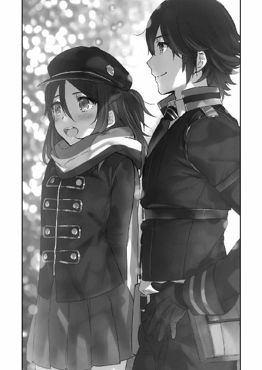
「別に無理強いなんかしないけど......抱え過ぎんなよな。頭の悪い俺にだって話くらいだったら聞いてやれる」
「............」
「仲間なんだ。そのへんは気なんか遣わなくていいからな」
ぽん、と頭の上にタケルの手がのる。帽子の上からだったが、マリは妙にホッとしてしまって、恥ずかしそうに苦笑を浮かべた。
「すぐそうやってあたしを子供扱いするんだもんね～タケルは」
「わ、悪い......癖でな。そんなつもりじゃねぇんだ。杉波にも前に怒られた」
タケルが頭から手を離そうとしたが、マリは彼の手に両手を重ねた。
「いいよ。あたしはタケルのその癖、好きだし」
好きと口にしてしまって、マリはすぐに誤魔化すように両手を振った。
「か、勘違いしないでね？ 別にそーゆう意味じゃないから......なんかこう、お父さんみたいだな～って思ってるだけだから......」
自分でも何を誤魔化しているのだろう、と思ったが、頭を撫でる彼の仕草を父親のように感じたのは本当だった。マリは本当の父親が誰なのかを知らないし、本当の家族というものを知らない。でも彼の手には、マリにそう思わせるだけの力強さと優しさが宿っていた。
二人でしばらくパレードを眺める。
通り過ぎていくパレードの行列が終わりに近くなってきた頃、マリは零すように自分の心を打ち明けた。
「......泣けないんだ。養護施設の家族が死んだって聞かされてからずっと、一度も涙が出てこないの」
「............」
「泣けたからどうってわけじゃないんだけどさ......あたしって、冷たい奴なのかな......」
理由はわかっている。実感が持てない。どんなに人から聞かされても、子供達が死んだという事実が心にまで届かないのだ。
失ったというのは真実なのに。
「泣けないからって悲しくないわけじゃないだろう。お前の悲しみは、少なからず理解してるつもりだぜ」
タケルは静かな声で言った。
マリに子供達の死を教えてくれたのも、前へ進む勇気をくれたのもタケルだ。今、自分の一番の理解者と言えばタケルだろう。
「話したことなかったけど、俺も妹以外の家族を失ってる」
「......そうだったの？」
「話しても楽しいもんじゃないからな。まあ正直、この歳になるまで親父とお袋に関してはあんまりいい思い出もいい印象も持ってなかった。お前と違って俺は本当の意味で親不孝者で、人の心がわからない冷たい人間だったわけだ」
否定しようとしたが、タケルの遠くを見つめるような横顔に言葉が詰まった。
「親父は物静かで、堅物で、剣術以外の会話を俺としたことは数えるほどしかない。お袋はいつも怯えていて、部屋で声を殺して泣いているような人だった。だから正直に言えば、両親のことを俺はよく知らない」
「............」
「でも、ちゃんと親らしいこともしてくれていたんだ。あの頃の俺がそれを理解していなかっただけで、あの人達も俺のことをちゃんと考えていてくれた。俺を人間にしてくれたのは仲間達だけじゃなかった。それがわかった時、少し救われた気がしたんだ」
「............」
「こんな放蕩息子でも、あの人達なりに俺のことを愛していてくれてたんだ......ってな」
タケルの言っていることの意味が、マリにはまだよくわからなかった。
タケルはゆっくりとマリの方を向いて、薄く微笑んだ。
「マリ、悲しいことじゃなくて、楽しかった頃のことを思い出してみろ」
「......楽しかった時のこと？」
「ああ。そんで、できれば俺に聞かせてほしい」
タケルの笑顔に、マリはぎこちなく頷いて、しばし目を閉じた。
そして、最初はぽつぽつと、思い出しながら確認するように小さかった頃の話をした。
本当に些細な、楽しかった記憶。まだ養護施設に入りたての頃、悪事に手を染めたため院長にお尻を百発本気で叩かれたこと。養護施設に来て初めて、みんなに誕生パーティを開いてもらって思わず泣いてしまったこと。賞味期限切れの缶詰を食べて全員でお腹を壊してしまったこと。みんなで夜中にこっそり抜け出して、灰色都市の満天の星を見に行ったこと。夜遅くまで、院長と魔法の勉強をしたこと。
声は次第に熱を持ち、語り口調も弾みを帯びてくる。
いつの間にかパレードは終わって、営業終了の曲が流れ始めていた。
話が、皆で廃遊園地に行った時のものに差し掛かる。
「それでねっ、あの子達ったらあたしがちゃんとできなかったもんだから、自分達で一生懸命遊園地を楽しむ振りを──」
不意に、マリの声が止まった。
薄暗くなってしまった遊園地で、マリは夢から覚めたみたいに目の前の大きな観覧車を見上げた。
てっぺんから照明が落とされて、観覧車が闇に消えていく。
終わりだった。
マリにとって楽しかったのは、あの時みんなで行った遊園地の記憶が最後だったのだ。
夢の終わりが訪れたことを知ったマリは、自分の掌を見つめた。
涙の雫が掌に落ちた。
「............」
手が震える。視界が歪む。まるで暗闇の中でひとりぼっちでいるみたいに、寂しいという感情が襲った。
「......ああ、そっか......」
マリはこの時初めて、失うということの辛さを実感した。
「こんなに......単純なことだったんだ」
失ったという事実を頭の中で反芻させても、涙は出てこない。
本当の悲しみは、もうあの子達と一緒に遊べないということ。もう院長の優しい声を聞けないということ。
そして、もうあの頃の家族と、楽しい思い出を紡ぐことはできないということなのだ。
思い出というものが、こんなにも辛く苦しいものだということを、マリはわかっていた。だからこそ無意識に避けてきたのだろう。
家族との楽しい思い出は、今はもう取り戻すことはできないから。
思い出すだけ辛いから。
失ったという実感を、得たくなかったから。
「タケル......ごめん、あたし......」
「おう、我慢すんな。背中くらいいくらでも」
「胸、貸して」
マリはタケルの胸に飛び込むように顔を埋めた。
そして──堰を切ったように、大声で泣いた。
「あたしもう、あの子達に会えないんだ......守ってあげられなかった......遊園地に連れて行ってあげられなかったよ......っ」
「うん」
「こんなのやだよ......こんな終わり方......っ、あんまりだよ......！」
「......そうだな」
「あたしだけ置いてかないでよ......っ......みんな、あたしをひとりぼっちにしないでよ......っ」
「──マリ、それは違うぞ」
泣きわめくマリの肩を摑んで、タケルは真剣に彼女を見つめた。
腫れて赤くなった目で、マリもタケルを見る。
「お前の家族は、お前を置いてったりなんかしてない。思い出は悲しいものかもしれないけど、それだけで終わらせちゃダメだ」
「......っ」
「思い出は背負うものじゃない、胸ん中に大切に抱いておくもんだ。お前がそうやって思い出してあげて、笑って、泣いて、愛しいと思ってくれている限り、家族はお前のそばにいるんだと思うぜ」
タケルは、「それにな」と付け加えて、楽しそうな笑顔を浮かべた。
「お前はどう考えたって、もうひとりぼっちじゃねぇだろ？ 俺達はお前の家族になってやることはできないかもしんねぇけど、仲間っていう居場所にはなってやれる。ていうか、俺達はお前に嫌だって言われてもそばにいるからな？」
「......ほんとぉ？」
涙でぐしゃぐしゃになった顔でマリが尋ねてくる。
タケルは強く頷いた。
「当たり前だろう。俺とか、鳳とか、杉波やうさぎだって、みんなお前のこと大好きなんだぜ？ 知らねぇの？」
「......だ、だってあたし、小隊メンバーじゃないし......鳳桜花とか、あたしのこと嫌ってるし......杉波やうさぎちゃんだってほんとのところは......」
「ぜぇったいそんなことねぇ。俺が保証する。つーか聞いてみるか？ 本人達に」
タケルの言葉に、マリがきょとんとする。
そこでタケルは、ベンチの後ろの茂みへジト目を向けた。
「──おいお前ら、もうそこにいるのとっくに気づいてるから出てこいよ」
タケルの声に、背後の茂みがゴソゴソと動く。
そして、髪や服に葉っぱをくっつけた三人組が姿を現した。
桜花とうさぎと斑鳩だった。
「趣味わりぃなぁ。お前ら遊園地に入った時からずっとつけてただろ？」
問い詰めると、桜花とうさぎはバツの悪そうな顔をした。
「べ、別につけてきたわけではないぞ......小隊活動の延長だ。丁度ここに魔導遺産があるという情報が入って......その......」
「こ、この茂みに隠れていたのは、お二人を驚かそうとしていただけですのよ？ 女の子が三人で遊園地にくるのなんて普通ですし......ぐ、偶然ですわ、偶然」
「わ、私は二人の朝帰りコースを期待して尾行していただけよ......べ、別に決定的な写真を撮って強請ろうだなんて考えてないんだからね？」
約一名誤魔化そうとしているようにみえてまったく誤魔化す気がないようだったが、タケルはため息を吐いた。
マリは三人を見ながらポカンとしている。三人があとをつけてきた理由はなんとなくわかったが、今まで割り込まずに傍観に徹していたことが驚きだった。
きっと話の内容を察して大人しくしていてくれたのだろう。三人とも、マリの方をチラチラと横目で見ながらも視線を逸らそうとしている。
タケルはニヤニヤしながら三人を見る。
「ほんで？ お前らさっきの話──」
タケルが言いかけたところで、うさぎが両手をパンパンと叩いた。
「そぉですわ！ 偶然こんなところで全員集合したわけですし、これからどこか遊びにでも行きませんこと!?」
「あ、あぁ！ たまにはレクリエーションも必要だなっ。日頃の苦労への労いもかねて、ここは私が奢らせてもらおうっ」
「今から？ もうゲーセンかカラオケくらいしか選択肢ないわよ」
「カラオケいいですわね～！ わたくし草薙の歌を聴いてみたいですわ～！」
「なっ──カラオケ!? そのぅ......私は......人前で歌ったことがないのだが......」
「あら、優等生なんだからハードル上げていくわよ～。ちなみに草薙は歌すごい上手いわよ。時代劇のテーマソングとかしか歌えないみたいだけど」
全力で誤魔化す姿勢で、三人はそそくさと遊園地の出口へ向かおうとする。
三人の背中に、タケルは苦笑を浮かべた。
「ったく、しょうがねぇな、あいつら......とことん意地っ張りっつーか、素直じゃねぇっていうか......」
ため息を吐いて、タケルも三人の後を追う。
マリは相変わらず呆けた顔で立ち止まっていた。
一人で棒立ちしているマリにみんなが振り返って、呼びかける。
「ほら二階堂っ、急ぎますわよ！ 遊園地が閉まってしまいますわっ」
「何をぼさっとしている。この私が奢ってやるのだ。貴様にはトップバッターで歌ってもらうぞ」
「あんたは鳳とデュエットでも歌ってもらう予定だから、絶対に外せないわ」
騒がしい三人の横で、タケルが苦笑しながら手招きする。
「ほら、行こうぜ......これが答えだってさ」
マリの瞳が微かに揺れる。
みんなに泣きそうなのがバレないように、マリは下を向く。
模擬戦トーナメントの時もこうだった。三五試験小隊は、魔女であり、記憶すら失っていた自分を受け入れてくれた。
きっとあの時から、自分はもう新しい居場所を手に入れていたのだ。どこかで一歩引いていたのは、ここにいていいという自信がなかったからだろう。
でも......もう、それも終わりだ。
（こいつらが、今のあたしの居場所。でも、みんなのこと......絶対に忘れないから......ずっとそばにいてくれる？）
思い出の中の家族へそう言って、マリは顔を上げた。
とても変で、とても歪で、幼い連中だけれど。
それでも彼らは......。
三五試験小隊はマリにとって、とても温かい居場所だった。
「──上等じゃないっ。こう見えてあたし、歌だけは自信あんのよ？ 境界線のローレライと呼ばれていたあたしの美声を披露してあげるわっ」
いつもの調子で皆のそばへ駆け寄る。
そして、五人は並んで遊園地の門をくぐった。
新しい思い出を紡ぐために。
──境界線の外れにある小さな養護施設。
そこはかつて、身寄りのない子供達が暮らしていた優しい場所だった。廃れた世界に咲く小さな花のような場所だった。
今は焼け跡しか残っていない、とても寂しい場所だ。
けれど、ある日、誰かがその場所に花を植えていった。
とても小さな、五つの花を。
Mission04 クレイジーサマータイム
降り注ぐ太陽の光に、タケルは目を細めた。
手を空に掲げて、指の隙間から差し込む日差しの強烈さに目眩を覚える。
上を見れば青、下を見れば白い砂浜と、どこまでもどこまでも青い海。近くの松の木で鳴く蟬の声と、上空で優雅に飛行する海猫の声は、うだるような暑さに拍車をかけていた。
額の汗を手でぬぐい、砂浜を眺める。
遠くでは水着姿の美少女四人が、ビーチボールに興じていた。
跳ねるボール、飛び散る砂、そして鞠のように弾む胸。
眼福である。
うだるような暑さに、笑みがこぼれる。
タケルは海で遊ぶ仲間達を眺めながら、ぼそりと呟く。
「夏......だな」
そう。この砂浜の全ての要素が、夏だった。
青い海、陽炎に揺れる砂浜、蟬の声、海猫の声、水着とビーチボール。
炎天下のサマータイム。
夏だ。あまりにも、夏だった。
だけどタケルは、素直に夏を満喫できていなかった。
別に夏の暑さや爽やかな海が嫌いなわけでも、水着女子とか揺れるおっぱいが嫌いなわけでもない。
正直に言えばこの上なく大好きだ。夏期休暇時に海の家でバイトをするのは、給料のためという理由は表向きで、実は女の子の水着を見るためだと言えるくらいに大好きだ。
では、何故に楽しめないのか。
理由は単純だった。
タケルは海の家に貼られているカレンダーを見やる。
日付は一一月二六日。
つまり、今現在は晩秋のはずなのだった。
「──近所の海で夏が終わらなくて困ってるぅ？」
小隊活動で現場に向かうためのバス車内。一番後ろの席の左端に座りながら、マリが訝しげな顔でそう言った。
マリの右隣の席に座る桜花は、神妙な顔つきで資料に目を通している。
「......どういうこと？」
「資料に書いてあるのだから......つまりそういうことなのだろう。今年の海開きの時から今まで夏が続きっぱなしなのだそうだ。一一月の頭まで海を開放していたらしいのだが、あまりにも異常気象すぎるので今は閉鎖しているらしい」
「......ふぅん。天気を一時的に操るならわかるけど、季節を固定させるなんて熟練の魔法使いでもほぼ不可能よ？ これデマじゃないの？」
肩をすくめるマリに、桜花がジト目を向ける。
「デマかどうかは行ってみないことにはわからんが......毎度毎度思うのだが何故貴様が小隊活動についてくる？」
「別にいいじゃーん。暇だったんだもーん......あふぁ～」
のんきに両手を上げて伸びをしながら、マリがあくびをする。
桜花は納得がいかなそうな顔で、ふんと鼻を鳴らして資料に視線を戻した。
さらに右隣、中央に座るタケルが、桜花の持つ資料を横から覗く。
「現地の人が気づいたこととか、情報に無いのか？」
「わかっていることは海岸から一㎞圏内の気候のみが異常で、それ以上離れると突然一一月の気候に戻る、ということだけだ。現地の人間もさっぱりだそうだぞ」
ポイント稼ぎのネタが手に入ったのはいいが、依頼は頭が痛くなってきそうな内容だった。
タケルの右に座っているうさぎが、あごの下に指を当てながら考え込む。
「魔導遺産が設置されているか、魔女の仕業でしょうか？ でも、季節を夏にして誰に何の得があるっていうんですの？」
「小さい海岸だから、実家を海の家にして経営している夫婦が一番に疑われたが、無実だそうだ。そもそも今年の夏は腰を痛めて経営していなかったらしい」
うさぎも肩をすくめると、窓際でほおづえをついていた斑鳩がため息を吐いた。
「夏......もし本当だとしたら最悪ね......私の一番嫌いな季節だわ。どうしてわざわざ私の嫌いな季節を延々続けさせているのかしら......死ねばいいのに」
ダークサイドに落ちまくっている斑鳩に苦笑しつつ、タケルは頭の後ろで手を組んだ。
「ま、行ってみればわかることだしな。休日返上だけど、せっかく遠出するんだし、気楽に行こうぜ」
戦闘もしなくて済みそうだしな、とタケルはのんきに窓の外の風景を楽しむ。
しゃきっとしろ、と桜花に説教をされてしまったが、他のみんなも普段に比べれば緊張感が無かった。
現場は電車とバスで二時間強の、旧千葉県いすみ市、大原。穴場とされている小さな海岸だ。
東京湾側は聖域の浸食で、横浜周辺が文字通り死の海と化しているが、太平洋側の一部は沖合一〇〇㎞まで無事だった。戦後は環境の変化が著しかったため、無事だった海も進入禁止とされていたが、今では審問会の海上警備隊の巡回がある程度で漁も盛んに行われている。観光地としても栄えており、夏になれば大勢の観光客で溢れかえっていた。
タケル達もちょっとした観光気分だった。
気候が夏のままだと言っても、残暑がまだ居残りをしている程度だろう。
魔法にだってできることとできないことがあるし、永続的に季節を固定し続けるなんてことはできるわけがないのだ。
気温を上昇させている何かがある、くらいに思っておけばいい。
（ま、たまにはこういうのもいいだろう）
休暇気分でバスに揺られながら、三五小隊は現場を目指す。
その先に待ち受ける、想像を絶する敵の存在を知る由も無く。
ミーンミンミンミーン......！
ミンミンミンミンミーン......！
「「「「「............」」」」」
時刻は午前一〇時。現場にたどり着くなり雑魚小隊は季節外れの猛暑に出迎えられて、全員バスの席順と同じ順番で横に並んで啞然としていた。
青い空、蟬の声、強烈な日差し、背の高い入道雲。
海のにおい。
「......夏ね」
「......夏だな」
「......夏だこれ」
「......夏ですわ」
「......死ねばいいのに」
声をそろえて、同じような感想を述べる。
現場は情報にあった通り、あまりにも夏だった。
気温を上昇させているなんてレベルではない。日差しから生き物から植物に至るまで、全てが夏だった。
「あ、あり得ないでしょ......どういう魔法よ、これ」
「......想像以上にやっかいだぞ」
「......俺達の手に負えるのか？」
「う～、日焼け止めを持ってくるべきでしたわ～......」
「............今すぐ......死ねばいいのに」
バタリと、斑鳩が砂浜に倒れ伏す。
しかし砂が熱かったのか、バタバタしながらすぐに立ち上がった。
「──この砂地の熱さは間違いなく私の大嫌いな夏よ！ 帰るわよ草薙っ！」
「そういうわけにもいかんだろ......試験小隊とはいえ請け負っちゃったわけだし」
必死に帰ろうとする斑鳩の首根っこを摑みながら、タケルは苦笑いを浮かべた。
桜花が「草薙の言う通りだ」と言って、上着を脱いだ。
タケルも上着だけとりあえず脱ぐ。
「まずは浜辺の調査からだな。何かないか探してみよう......長丁場になりそうだ」
「はぁ......わたくし、ちょっとそこのコンビニで日焼け止めを買ってきますわね。あと全員分の飲み物も」
「悪いなうさぎ、助かるよ」
てとてととコンビニに走っていくうさぎを見送って、だだっ広い浜辺に繰り出す。
桜花がその後に続こうとしたところで、いつの間にか日陰に避難しているマリの姿に気づく。
「貴様、何をしている」
「えっ、だってあたし......しょ、小隊メンバーじゃないじゃん？ だから～、日陰から応援するくらいがちょうどいい距離感かな～って......えへ」
「............」
桜花は無言で近づくと、マリの腕を摑んでずるずると引きずった。
「あ～ん！ いーやーよー！ あたし日焼けしやすいんだってー！」
「うるさい黙れ。西園寺が日焼け止めを買いに行ってくれているのだ、貴様は働け」
「なによー！ いつもついてくるなって言うくせにー！」
マリのキャーキャーという声を耳にしながら、タケルは砂浜に目を配りながら歩く。
まだ現場にきてから五分も経っていないのに、もう身体中が汗まみれだった。
「くそ......これは思った以上にキツそうだ」
顎の下の汗をぬぐい、タケルは作業に没頭することにした。
そして──二時間後。
ミーンミンミンミーン......！
「「「「............」」」」
斑鳩以外の四人は、全員死んだ魚のような目で、ゾンビの如く浜辺に立っていた（斑鳩はすでに海の家の屋根の下でダウンしている）。
もうまともに思考が働かないくらいに暑い。
浜辺というのが余計悪かった。日陰になるものが無いため、直射日光がフィルター無しに降りかかってくる。
全員、バーベキューの具材にでもなったような気分だった。
「......あぢぃ......」
忍耐強さが自慢のタケルも、さすがにこの暑さにはまいりっぱなしだった。
意識が朦朧とする中、ふと海の方を見る。
さざ波に揺れる涼しげな青が、一面に広がっていた。
「......今あそこに飛び込んだら、きっと気持ちいいだろうな」
「......海を見るな草薙......仕事に......集中しろ......」
そう言いつつも、桜花も海を見て物欲しそうな顔をしている。
横で、マリも汗だくになりながらゾンビになっていた。
「も......らめぇ......焦げひゃうぅ」
「うぅ、ブラウスが汗で気持ち悪いですわ......」
うさぎも暑すぎて羞恥心など忘れてしまったのか、胸の上部ボタンを外してパタパタと手で風を送り込んでいる。
「ねぇ......もう海入ろ？ ......いいじゃん、がんばったじゃんあたし達......ちょっとだけ......ねぇ、先っちょだけ！ 先っちょだけだからぁ！」
「......そうは言っても......水着が無いだろう......裸になるわけにはいかん」
「もう......なんか......別に裸でも......いい気がしてきましたわ......」
「うさぎ、正気に戻れ......鳳の言う通りだ......水着が......あればなぁ」
深く息を吐いて、いったん休憩にしようと海の家の方を見た。
そこには団扇を片手で扇ぎながら、長椅子の上に色とりどりの水着を並べている斑鳩の姿があった。
「さあ、好きなものを選ぶがいいわ」
「「「「............」」」」
何で持ってきてんだ、なんてツッコミを入れる余裕は、もう四人にはなかった。
「わっはーい！」
子供みたいにはしゃぎながら、マリが浅瀬の海に飛び込む。
「あ～ん！ 生き返る～！ 最初からこうしとけばよかったわ～！」
濡れた髪をかき上げながら、マリは満面の笑みで夏を満喫していた。
「あはー！ そーれ！」
「はしゃぎすぎだ。というか貴様、何故もうすでにほんのり小麦色なのだ？ 日焼けクリームをちゃんと塗ったのか？」
マリが飛ばしてきた水を軽々と手で防ぎながら、桜花がマリの肌を見てツッコミを入れる。
確かに小麦色だ。肩紐を引っ張ると、そこにはすでに水着の痕がついていた。
「塗ってこれなのよぅ。焼けやすいって言ったでしょ。まあ二、三日で元に戻るんだけど」
「いくらなんでも焼けやすいにもほどがあるだろう......二、三日で戻るって、貴様は蛇か？ 脱皮なのか？」
「うっさいわね、そーゆー体質なのよ。タケル～！ 早くおいでよー！」
マリがタケルに手を振る。
タケルは日差しに目を細めつつ、二人のそばまで歩いた。
足が海水に触れると、なんともいえない気持ちよさに笑みがこぼれる。
「おー、こいつはいいなぁ」
足を動かす度にぱしゃぱしゃとはじける水しぶきを楽しむ。
思えば、海にきたのは何年ぶりだろう。
（師匠に身体中に獣の血をぶっかけられた後、大海原に放り込まれたのが初めての海だった......サメに襲われながら陸地まで必死に戻ったっけ......そうだ......俺、泳げないから海底を走ったんだ。あれはいい経験だった......）
トラウマをいい思い出に無理矢理変換しながら、タケルは光の無い目で海を眺めた。
「ねねっ、タケルっ、海もいいけどさ～、もっと他に見るべきものがあるんじゃない？」
「ん？」
「ほら......ねっ？」
ウィンクなんぞしながら、マリが腰に手を当ててポーズを決める。
そんなことをされては見とれてしまわないわけがなかった。
マリの水着はスポーツタイプのビキニだ。こうして見ると、マリのスタイルの良さがよくわかる。胸こそ無いに等しいのだが、引き締まった腰と小ぶりなお尻は魅力的という以外に言葉が見つからない。
運動が苦手なくせに、小麦色の肌もあいまって健康的な美少女に見える。
似合っていないわけがなかった。
「お、おう、似合ってるぞ」
ぎこちなくタケルが誉めてやると、マリはジト目になって口を尖らせた。
「えー、ボキャ貧......」
「えっと......いつものマリじゃないみたいだ......その、なんていうか......可愛いし、綺麗だし」
「セクシー？」
「......セ、セクシーなんじゃね......」
目をそらしながら、顔を赤くする。
「やっだもータケルったら可愛い～！」
マリは恥ずかしがっているタケルの顔を、からかうようにのぞき込む。
「タケルは日焼け痕とか好き？」
「......す、好きかどうかって言われると......好き、かね」
「ほんとっ？ 見たい？」
「はい？」
「じゃーん」
突然、目の前でマリが両肩の水着の紐を外して、胸のところを手で押さえながら日焼けの痕を見せつけてきた。
褐色と白のコントラストが美しい。水着を手で支えているだけという状況が妙に扇情的で、タケルは口をあわあわさせた。
マリがニヤニヤしながらさらにタケルに迫ろうとする。
──スパーン！
すかさず桜花がマリの頭をひっぱたいた。
「痴女か貴様は！」
「いったーい！ ちょっとからかっただけじゃーん！」
「草薙が困っているだろうっ」
桜花がタケルの前へやってきて、マリを叱る。
必然的に桜花の水着にも目が行った。
桜花の水着は......なんというか、実に大人っぽいビキニだった。夕焼け色の髪にマッチする赤色が、形がよく大きい胸を包み込み、白くて誰よりも綺麗な脚の美しさを際立たせていた。
濡れた髪の滴が頰を伝い、胸の谷間に落ちていくのをついつい目で追ってしまう。
「おい......あ、あまりじっと見てくれるな......さすがに私も、水着姿を異性にじっと見つめられるのは......恥ずかしいのだ」
「いや、ごめん......つい見とれちまって」
「噓をつくな......お世辞はやめろ」
「噓じゃねぇって！ ほんと、なんていうか......っ、綺麗だ」
真剣かつ真っ赤っかな顔でタケルが素直な感想を送ると、桜花も顔を赤くして下を向いてしまった。
微妙に気まずい空気になってしまったが、それをぶち壊したのはマリだった。
タケルのみぞおちにマリの肘が入った。
「その反応の差は何よー！」
「いってぇな！ なんだよ、お前にだってちゃんとセクシーって言ったろ!?」
「なんか違う！ あたしの時は言わされてる感バリバリだった！」
「そんなことねぇっての！ この前の指輪事件の時もそうだったけど、お前もうちょい自分に自信持てよ！」
「周りが全員巨乳なのに自信なんて持てるわけないでしょー！ あたしだって薄くてもがんばってアピールしてんのにいっつもそう！ タケルあからさますぎ！」
「胸の話を勝手に持ち出すのはいつもお前だろうがっ！ 人をおっぱい星人みたいに言うんじゃねー！」
お尻も脚も腰も重要です。とは言わないでおくタケルであった。
「お、お前達、やめないかっ。喧嘩の内容がくだらなすぎるぞっ」
痴話喧嘩を始めた二人に、珍しく桜花が仲裁に入ろうとする。
が、その時、
「はっ、はっ......着替えに手間取って遅くなりましたわ～、どうですか海の水は～。ちゃんと冷たいですの～？」
遠くから走ってくるうさぎに、全員の目が釘付けになった。
うさぎの水着は、白いワンピースタイプの物だ。斑鳩のチョイスにしては控えめだった。可愛らしいフリルの縁取りに、白い花の装飾が施されている。おとなしめの女子が着る感じの、清楚な純白ワンピース。
──だが、うさぎの胸の破壊力の前では、控えめという言葉は無駄だった。
バインバインという表現が正しい。斑鳩はうさぎがこれを選ぶと見越してあらかじめ小さめなものを用意していたのだろう。ワンピースなのに胸が強調されまくっていた。
「ぐわぁぁっ、揺れていらっしゃる......！ 神々しいまでにお揺れになっていらっしゃるわぁぁぁ......！」
「西園寺！ もうちょっと大人しく走るのだっ。いくらワンピースとて、こ、こぼれてしまうっっ」
マリはあまりの眩しさに目元を手で隠して頭を振り、桜花は慌てふためいていた。
タケルはというと、うさぎが走ってくるのが見えた瞬間、浅瀬に正座をした。
うさぎの凶悪なまでに揺れる二つの膨らみに対して、平常心を保つためだった。
心頭滅却すれば火もまた涼しみたいな感じだった。
無駄だったけれども。
無駄だったので途中で目を閉じたけれども。
「？ どうして正座なんかしてるんですの？」
「いや、なんでもないですよ。ふぅ」
うさぎがたどり着いて、揺れが収まったのを確認することでタケルの精神はなんとか落ち着きを取り戻した。
わけでもない。ワンピースとはいえども目の前にあるだけで大迫力だった。
本人は気づいていないというか、ワンピースというだけで安堵しきっているようだ。
罪深い。
「変な草薙ですわね......ところで杉波はどこへ行ったんですの？」
「ああ、そういえば」
斑鳩の居場所を確認するために周りを見回すと、わりとすぐそばにいた。パラソルを開いて、ビーチチェアの上で横になっている。
顔が完全に死んでいる。検死台に寝かされた屍のようだ。
水着は案の定というか、実にきわどいデザインだ。スリングショットというタイプだろうか。斑鳩らしい過激さだった。しかし、斑鳩にしてはひねりがないなとか思ってしまうのは、彼女の破天荒っぷりに慣れてしまったせいかもしれない。
「杉波は海に入らないのか？」
「.........どうして私が好きこのんで塩水に浸からなくてはならないの？」
「そこにいても暑いだろ。海、気持ちいいぞ」
「嫌よ。私のことは放っておいて、あんた達だけでピクルスにでもなってくるがいいわ」
いつにも増して投げやりな斑鳩に、タケルは苦笑した。
「珍しい。杉波がメンバーの水着姿にはしゃがないなんて......本当に夏が嫌いなんだな。海に入った方が楽になると思うんだが」
「......何よ......妙に絡むじゃない。おねーさんに構ってほしいの？ 私に夏のお約束をやれって？」
はいはいわかったわよと言って、斑鳩はのったりとした動きでチェアの横に置かれていたオイルを手に取った。
デロデロと自分の身体にぶっかける。そして適当な感じに胸とかおなかにぬったくりながら、げっそりした顔でタケルを手招きする。
「はーい......クサナギー、オイルヌッテーン......」
......見た目、水死体かなにかだった。
「色気の欠片もねぇ......せめてうつぶせになって言えよ」
「もう無理......気絶する......終わったら蘇生させてちょうだい......」
がくりと、手からオイルの瓶を落として斑鳩が完全に事切れる。
水死体だった。
「ったく、インドアはこれだから......しょうがねぇな」
頭を搔きながら、タケルは海を満喫するために振り返る。
すると、何故か目の前に──
「............」
連れてきたわけでもないのに、ラピスが立っていた。
「............」
「............」
だいたいいつもいきなり現れる子なのでいまさら驚きはしないが、現れる度にリアクションくらいはしていたものである。
でも今はできない。
何故ならラピスも水着を着ていたからだ。
水着は......今となっては絶滅危惧種のスクール水着というやつだった。タケルは一瞬で分析を完了。これはスク水はスク水でも旧スクール水着ではなく、旧旧スクール水着だ。特徴は分割線、つまりスカートが前だけではなく後ろにもついていること。いったいどこで手に入れたのかとツッコミを入れたくなるレベルのマニアックさ。おまけに胸のところに『らぴす』とひらがなで名札がつけられており、浮き輪のオプションまでついている。
お約束ながらも洗練されたチョイスだ。しかし、タケルにはわかる。これは以前、魔女狩り祭（文化祭）でマリに着せていたスク水を流用したものだ。
タケルは憤りを感じた。
杉波め、ここにきて手を抜きやがったか。
夏が嫌いだからと言ってこれは許せない。マニアックを自称しコスプレが趣味と豪語するからには王道を征くスク水をぞんざいに扱うのはまかりならない。ラピスの体型がマリに近いからって、リサイクルはよくない。コスプレに再放送があってはならないのだ。
......いや──違う、何かがおかしい。
スク水を着ているラピスに違和感があった。
「......ん」
ラピスの細い肩から肩紐がずれ落ちた。胸が見えそうなほどに落ちてしまった肩紐を、のそのそした動きで直す。でもまた、すぐに落ちてしまう。
──衝撃が走った。
斑鳩の狙いを察して、タケルは目を見開く。
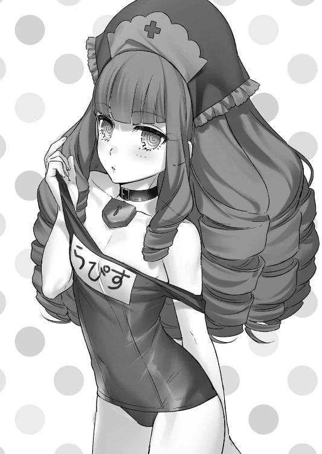
（......狙いは、だぼスクか......！）
そう。マリはラピスに胸部の大きさこそ似ているが、身長は高いし肩幅もラピスより若干広いのだ。つまり、ラピスがマリの水着を着ると、必然的にサイズが合わなくなる。
だぼだぼになる。
水着がだぼだぼ......これはあってはならないことなのだ。浮力の存在する水中において、身につける物は肌にフィットしていなければ大惨事が起こりうる。
だが斑鳩はあえてそれを狙っていた。
なんたる冒険。なんたる暴挙。なんたる犯罪的な狙い。
だがしかし、ありかなしかで言えば──ありであるとタケルは断言できる！
「......ラピス」
「？」
何度もずり落ちる肩紐を直しながら、不思議そうに小首を傾げるラピス。
破壊力満点だ。無表情なところもクリティカルヒットだ。
ラピスの肩に手を置いて、タケルは真剣な表情で頷いた。
「お前が相棒でいてくれることを、俺は今、心の底からよかったとおも──」
「「「スク水幼女を前にして言うことかー！」」」
背後から三人組のドロップキックをくらって、タケルは海水の中にうつぶせにぶっ倒れた。
さらに背中を三人に足蹴にされる。
「もはやむっつりスケベが犯罪者の域に達したか草薙......！」
「自分の剣に特殊性癖を発揮するなんて、万死に値しますわ......！」
「巨乳にもなれないしロリにもなれないただの貧乳のあたしはどうすればいいのよ......！」
三人が据わった目で見下ろしてくる。「杉波が伝染ったんだ」と言い訳しようとしたタケルだったが、水面から起き上がれずにそのままぶくぶくと空気を吐きつくして動かなくなってしまった。
こうして、三五小隊はいつものノリで海へと繰り出した。
せっかく海にきたのだから、楽しまなければ損である。
一夏の思い出を作るのだ。
ビーチボールに興じ、海で水を掛け合い、砂遊び。
タケル達は容赦なく夏の思い出を作った。
そうこうしているうちに──夕方の四時になった。
季節が夏に固定されたからといっても、日の短さは変わらないらしい。
それでも夕焼けは完全に夏の風景っぽく映っている。
まるで夏の終わりのようで、思わず感傷にふけってしまう。蟬の声も歌い手がヒグラシに代わり、どこか懐かしい思いにさせてくれている。
楽しかった。いつもの忙しない日常とかけ離れた一日は、今後も思い出として安らぎになってくれるだろう。
またいつか、みんなで海に来よう。
（最後にみんなで花火でもするか。そうと決まればコンビニで買ってこよう！）
オレンジ色の空を眺めていたタケルが、コンビニへ駆け出そうとした瞬間。
──我に返った。
「.................................................................................................................................夏......満喫してんじゃねぇよ......ッ！」
自分達の当初の目的を思い出して、砂浜に膝をついて四つん這いになるのだった。
──五分後。
浜辺には何も無かったので、いまさらになって海底を調べることになった。
「泳げないんですの!?」
その矢先に判明した事実に、うさぎは素っ頓狂な声を上げた。
何故うさぎだけが驚いているのかというと、彼女以外の全員が泳げないことがわかったからだ。剣術以外何もできないタケルや、魔法ばかりで運動音痴なマリ、インドアな斑鳩、魔導遺産なラピスが泳げないのはまだわかる。
だが、完璧超人の桜花まで泳げないのは意外すぎだった。
現在、うさぎ以外の全員は浮き輪とシュノーケルの、泳げない人専用装備だった。
「す......水泳は、苦手なのだ。何故だか沈んでしまう。スイミングスクールにも通って克服しようとしたのだが......先生からは、力みすぎと言われた」
「あたしは犬かきくらいだったらできるもん」
「......どうりでみんな、浅瀬から動かなかったわけだ」
うさぎは呆れ顔でため息をついてから、ふんすと鼻息を吐いて両手を腰に当てた。
「仕方がありませんわねっ。ここはわたくしが先陣を切りますので、みなさんは沖まで出たらゴーグルで海中を探っていてくださいまし。夜の海は想像よりもずっと恐ろしい場所ですわ。日が完全に落ちる前に、なんとしても原因を突き止めましょう！」
おお......と感嘆の声が上がる。あがり症で引っ込み思案なうさぎが、先頭に立ってみんなを指揮していた。やはり三五小隊の中では、うさぎが一番成長している。胸も含めて。
ともあれうさぎの言う通り時間が無い。
雑魚小隊は常夏の原因を探るために、海原へ繰り出した。
空の色がオレンジから紫へ切り替わり始めた頃、タケル達は沖合五〇〇ｍの付近でぷかぷかと浮かんでいた。
浮き輪を装着した五人（ラピス含む）は、ゴーグルで海中をのぞき込む。
しかし日も陰り、それなりに深いため海底などほとんど見えなかった。
「ぷはっ......ダメだ、魚群くらいしか見えねぇ」
「潜らないことには話にならんな。完全に西園寺頼みだ」
「う、浮き輪って思ってたより怖いわね......海底が見えない真っ暗闇だと、下からサメでも襲ってきそうな感じがする」
「......塩辛いわ......死んだ生き物の味がする......海......死ねばいいのに」
五人そろって浮き輪という絵面は、なんとも間抜けだった。
たまに近くを通る漁船のおじさん達の視線が痛い。
「......ラピス、何か見えないか？」
「海洋生物以外の反応はありませんが......何か、海底にいます」
「え!? マジでサメ!? ちょちょちょちょどうすんのよっ、うさぎちゃんは!?」
マリが慌てふためく。
「いえ、サメではありません。微少ですが、海底から魔力を検出しました」
「そりゃあ、あたしも感じたけどさ。自然界って、結構魔力溜まりが存在するものじゃん？ 人間の体内幻器にだけ生成されるものじゃないから、別に不思議なこっちゃないわよ」
「......だといいのですが。この魔力は、魔法の余波の可能性があります」
「海底に魔女がいるってことぉ？ 海女さんの魔女なんて聞いたことないわよ～」
あからさまに信じていないマリを無視して、ラピスはタケルを見た。
「宿主、念のためご注意を。この魔力が生体魔力であれば、魔導遺産から発せられるものとは考えられません。魔女や魔法使いの可能性も低いでしょう。故に──」
ラピスが推測を口にしようとした、その瞬間、うさぎが海面から顔を出した。
顔色は真っ青で、唇を震わせて恐怖に口をあわあわさせている。
「──み、みみみみなさん！ 逃げてくださいまし！ か、かかか海底に何かが──」
戻ってくるなり悲鳴のような声を上げるうさぎだったが、何故かまたすぐに水中に潜ってしまう。
「......うさぎ？」
怪訝に思い、海中をゴーグルで覗いてみると──何かに身体を巻き付けられて、水中に引きずり込まれていくうさぎの姿が見えた。
黄色く光る縄のようなものが、うさぎの胸やら足に絡みついている。
あれは──触手だ。タケルは慌てて海中から顔を出した。
「だはっ──やっぱ海中になんかいる！ みんな浜辺に戻れ！ うさぎは俺が──」
皆に逃げるように命令しようとして、タケルは周りにいた全員が消えていることに気づいた。
浮き輪だけがぷかぷか浮いている。
「......う、噓、だろ......あの一瞬で全員......──ぅわっ！」
啞然としたのも束の間、タケルも何かに足を引っ張られて、浮き輪がすっぽ抜けると水中に引っ張り込まれた。
ものすごい勢いで海底に連れて行かれる。水圧に喘ぎながらも、タケルが辛うじて目を開けると、そこには、
──触手にもみくちゃにされている仲間達の姿があった。
「（や、やめろ！ そんなところに滑り込ませるな！）」
「（何なのよこのエロ生物ー！ あたしのお尻にまとわりつくなー！）」
「（み、水着を返してー！ きゃあっ、む、胸を......そんなっ、ひぃやぁぁ！）」
「（......もうどうでもいいわよ）」
そんな声が聞こえてきそうな感じで仲間達がじたばたと水中で暴れているが、触手は決して解けない。
タケルは、ぶはっ、と口の中の空気を吐き出してしまう。緊急事態だし、命の危機ですらあるのだが、あまりにもあんまりな光景に煩悩が搔き立てられてしまった。
触手と美少女という構図だけで、なんかもういろいろとアレな絵面である。
《って今そんなこと考えてる場合じゃねぇ！ ラピス！》
《承知しました》
触手に巻き巻きされていたラピスの身体が粒子化して、タケルの元へ集まる。
タケルは剣と化したラピスを振るい、自分の足に巻き付く触手をぶった斬った。
自由になったことで、ようやく敵の正体を確認できた。
仲間達に伸びている触手の根源。
海中で浮遊しながら触手を暴れさせているそいつは......。
《......何だあれ》
よくわからん巨大な軟体生物だった。
たとえるならばナメクジだ。海にナメクジとくれば。
《恐らく、幻想生物『アメフラシ』の亜種でしょう。アメフラシは個体数が少なく、現在では絶滅危惧種となっています》
《アメフラシ!?》
それはタケルも知っている。しかし幻想生物のアメフラシは普通のアメフラシと違う。昔の日本では妖怪の一種とされており、出現すると天候に影響を与え、雨を降らせると言われていた。海が荒れるため、有害な幻想生物でもある。
しかし、アメフラシが常夏の原因なんてことがあり得るのだろうか。
《アメフラシにはいくつか亜種、突然変異体の報告があります。その一例に、『ナツマネキ』と呼ばれるタイプが存在します。ナツマネキは雨を降らすのではなく、名前の通り季節を夏のまま固定するという性質を持っています。体表の発光色や魔力の質を分析したところ、ナツマネキで間違いないでしょう》
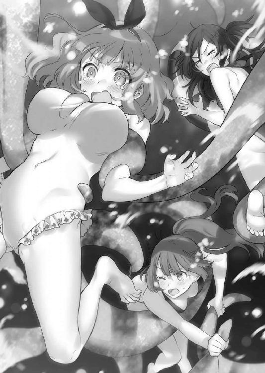
《なるほど、突然変異の幻想生物が原因だったってわけか！ そうとわかれば魔女狩り化してやっつけるぞ！ このままじゃみんなの酸素がもたねぇ！》
《できません》
《は？》
《アメフラシはＣ級保護指定幻想生物です。その上、ナツマネキともなればＡ級保護指定に分類されるでしょう。殺す場合は鳳颯月様の許可が必要になります》
ラピスの説明を聞いて、潜水病も相まって頭が痛くなった。
幻想生物にはランクが設定されており、そのランク付けは二パターンある。有害と認定され、発見後に駆除が優先される駆除指定。有害無害を問わず、個体数の少なさから保護が優先される保護指定の二つだ。
Ｃ級の保護指定は絶滅危惧種としてはまだいいが、Ａ級ともなれば話が違う。Ａ級は発見報告が極めて少ない突然変異種、または化石しか発見されていない幻想生物が分類されるのだ。Ｓ級ともなればそれはもう未確認生物である。
《だったら急いで理事長に繫げ！》
タケルはラピスに命令し、対魔導学園の理事長、鳳颯月に魔力通信を送った。
対魔導学園理事長室。
「──はいはーい、理事長だよん。ジャンクフードタイムに何事だい？ 草薙君」
颯月はレリックイーターを経由しての通信を受けながら、ハンバーガーをもしゃもしゃと咀嚼しながらデスクに足を投げ出していた。
《理事長ですか!? 魔女狩り化の許可をください！ 仲間の危機なんです！》
「ふむふむ......別に構わないが、一応何を相手にしているのか聞いてもいいかね？」
《そ、それは......幻想生物です》
「ほほー！ そいつは珍しいねぇ。保護指定かい？ 駆除指定かい？」
《......く、駆除指定、かなぁ？》
「ふむふむ。できれば捕獲してほしいが、駆除指定なら殺してしまってもいいよ。二階堂君のグレイプニルも私の権限でレベル４まで解除しておこう」
《ありがとうございます！》
「ただし～もし保護指定だったら、それもＢ級以上の保護指定だったら、いろいろと責任問題になるからね？ いや～幻想生物愛護団体の中には口ばっかでうるさいだけの集団もいてねぇ、そんな連中にあーだこーだ言われるのは私としてもねぇ、困るというか──」
《──し、ししし失礼します！》
完全に狼狽しきった様子で、一方的にタケルが通信を終える。
颯月は全てを察したのか、悪戯好きの子供みたいに笑うのだった。
許可が出たことで、タケルはさっそく水中で魔方陣を展開。
「がぼがぼぼがぼぼがぼ（限りなき願いをもって）──」
右手を前へ出し、切り裂くように横へ振り払う。
《宿主、無理して口にせずとも思考で──》
「──がぼぼがぼぼぶぶぼ！（魔女に与える鉄槌を！）」
魔力が弾け、タケルの身体を瑠璃色の粒子が覆う。
粒子は物質化し、装甲としてタケルの身体を包み込んだ。
魔女狩り化、完了。
この力があればタケルは無敵だ。
常夏程度の能力しか持たない幻想生物など容易く──
スィ──......。
──装着時に決めたポーズと凜々しい表情のまま、装甲が重いせいでものすごい勢いでタケルは海底に沈んでいった。
沈み行くタケルを見ていた仲間達は、再びジタバタともがき始める。
「（タケル使えねぇ──ッ！）」
「（かっこつけてポーズ決める前に沈むことに気づかんかーッ！）」
「（も、もう、息が......っ）」
「（............）」
修羅場慣れしている三五小隊でも、さすがにこれは大ピンチだった。約一名、見た目的にもう死んでいる。
《すまーん！ 魔力噴射でも水圧のせいで届かなーい！》
《申し訳ありません。装着前に水中戦を想定しておくべきでした》
《マリっ！ お前のグレイプニル、レベル４まで解除してあるからなんとかしてくれー！》
タケルの声が、魔力通信でマリの脳内に送り込まれる。
レベル４まで解放されていると聞いて、マリの目の色が変わった。
マリは一瞬で足下に極光色の巨大な魔方陣を展開。
そして、
《──『蒸発』！ 重ねで『極光界』！》
魔法名を脳内で叫ぶと同時に、体内の魔力を一気に放出した。
変性魔法、《蒸発》。
熱エネルギーではなく魔力によって液体を気化させる魔法だった。
三五小隊のいた半径五〇ｍの海水が、円形に一瞬にして気化する。その光景はまるでモーゼの逸話に出てくる海割りのようだった。
海水が消えたとしても消えた範囲に周りの海水がなだれ込んでしまうため、マリは《極光界》で放出した自分の魔力に質量を与え、範囲内に流れ込まないように海水をせき止めた。
沖合五〇〇ｍ付近に、ぽっかりと円形に開いた空間が出現していた。
「いってて......」
海底に沈んでいたタケルは、突然水が消えたことでスッ転んで頭を打っていた。
みんなはどうなった？ と思って見上げると──最初にうさぎが降ってきた。
「うわ──ん！ 草薙ぃぃぃぃ！」
「うさぎっ!?」
タケルは慌ててうさぎを両腕にキャッチ。
安心している暇はない。うさぎを地面（海底）に下ろして、すぐに足を踏ん張って両手を広げた。
直後に、桜花が降ってくるのをキャッチ。
「っっっつ......く、草薙......」
お姫様だっこをされたような状態に、桜花の顔が赤くなる。
しかし、続いてマリが桜花の真上に突っ込んできた。
「ちょっ！」
「きゃあああああああああ！」
「────」
さらには死体同然の斑鳩が重なるように降ってきて、ついにタケルは三人の少女に押しつぶされる形になった。鏡餅みたいになりながら、タケルは少女達の下から這い出る。
桜花達ものそのそと起き上がって、頭を振った。
「し、死ぬかと思いましたわ......」
「二階堂マリ、魔法を使うならもう少し後先を考えろ......！ 《蒸発》なんて大魔法をあの一瞬で使うバカがいるか......！」
「っ、うるさぁい......あたしがいなきゃ全員死んでたんだから感謝しなさいよ～ぅ」
「そりゃそうだ......助かったぜ、マリ」
タケルが礼を言うと、魔力切れでふらふらしつつも、マリから「いいってことよぅ」という男前な返事がくる。
本当にギリギリだったが、なんとかなったようだ。
不幸中の幸いと言うべきか、ナツマネキも殺さずに済んだ。
これならかなりのポイントをゲットできるだろう。事件の解決に加え、Ａ級保護指定幻想生物を捕獲したのだ。もしかしたら進級に必要な分を全部、なんてこともありえる。
「何はともあれ解決だ。ナツマネキは俺がつれて浜辺に持って行くから、みんなは浮き輪で──」
そこで、タケルは見てしまった。
地面の上で、カラッカラにひからびて干物みたいになってしまったナツマネキの姿を。
塩をかけたナメクジみたいになってしまったナツマネキを前に、タケルは目を点にした。
「............」
《ナツマネキの身体は九九％が水分です。体内幻器や最低限の内臓以外にまともな器官を持っていません》
「............つまり？」
《体内の海水が無くなれば一瞬で死にます。二階堂マリ様は小隊の方々以外の水分を蒸発させてしまいましたので、ご覧の通りです》
「............」
つまり、全部無駄。
小隊メンバー全員で、干物を前にして突っ立つ。
「「............」」
「..............................マリ？」
「え、えへ☆」
めんご、と自分の頭を拳でコツンと叩いた瞬間、《極光界》の効果が切れて、タケル達のいた場所が再び海底に沈んだ。
水流に翻弄されながら、タケルは涙を流す。
結局こうなるのか、と。
──その後、タケル達は斑鳩を引っ張りつつ浜辺まで自力で泳いで帰ることとなった。
事件は解決したが、ナツマネキを死なせてしまったという事実が知れれば大問題になるので、報告書には詳細を書かず、『自然解決』という形に落ち着かせた。
もちろん、得られたポイントはゼロ。
三五試験小隊の進級は、依然として遠いままだった。
今回の事件で得られたものは二つだけ。
思い出と、斑鳩以外の水泳スキルが飛躍的にアップしたということだけだった。
Mission05 プロトタイプはダテじゃない
それは昼下がりの午後、桜花やうさぎ、マリと共に昼食を終えて小隊室へ帰ろうとしている時のことだった。
「だからうぐいす餡が牛乳と一番合うと言っているだろう？」
「俺は白餡が一番だと思うんだけどな～。うぐいすって緑色してて、なんか食欲が......」
「なにを～！ 草薙にはあの緑色の良さがわからんのかっ」
「うさぎは何あんパンが好きなんだ？」
「わたくしは、あんドーナツ派ですわ～」
「あんた達、なんで一時間以上あんパン談議続けてんの......？」
あんパンの話をしながら、四人で並んで歩く。小隊室のドアが見えてきて、タケルはドアノブを回した。
いつもの日常。いつもの午後。いつも実りの無い小隊活動。
そんないつもの午後が扉の向こうに待っていることを疑いもせず、タケルはドアを開けて、小隊室に入った。
部屋の中央に、巨人が立っていた。
「「「「............」」」」
硬直したまま四人でドアのそばに佇む。
巨人だ。というより、ロボットだ。
決して広いとは言えない部屋の中央に、人型の機械が立っている。
「ド、ドラグーン？ ......なんで俺達の部屋にドラグーンが......」
全長三メートル近い巨体は、一般人にはあまり馴染みがないかもしれないが、対魔導学園に通う生徒ならば一度くらいは目にしたことがあった。
強化外骨格『ドラグーン』は、兵器として高コストでありながら運搬のしやすさと能動的な作戦行動を可能としているため、現代では戦車に代わる兵器として重宝されている。
アルケミスト社を筆頭に、軍事企業から自動車メーカー、医療機器メーカーなども数多く生産しており、兵器としてだけでなく、ドラグーンレースやオリンピックなどのスポーツツールとしても人々に受け入れられている。
ドラグーンは三タイプに分けられ、パワーアシストが主体で小型なジャケットタイプ、操縦者の手足の動きに連動するマニピュレーターを駆使する高速中型のアーマータイプ、そして操縦桿で動く重量級大型のフルボディタイプだ。
目の前のドラグーンは恐らくは最近の主流となっているアーマータイプのエクステンデッドモデルだろう。マニピュレーター操作だけでなく、装甲を強化しているためフルボディタイプに近い見た目となっている。
タケルが啞然としていると、ドラグーンの足下からレンチとドライバーを持ったオイルまみれの斑鳩がのそのそと這い出てきた。
ああ、嫌な予感がする。
タケルは目を糸のように細くした。
斑鳩は立ち上がり、黒く汚れた手と頰を白衣で拭うと、眠たそうな目で片手を上げた。
「やっほ」
「何やってんだ杉波」
「見てわからないの？ ドラグーンを自作しているのよ！」
目を輝かせながら、やりきったような顔で斑鳩は言った。
メンバー一同、若干引いてしまう。
こんなにも生き生きとしていて、汗が似合う斑鳩を見たのは初めてだったからだ。
まくり上げられた白衣の袖や汚れた頰が、実にエンジニアっぽかった。
「へぇー、これ杉波が作ったの？ すごいじゃん。あたしも前に何度かこういう商品を取引したことあるけど、いまだによくわかんないのよね～。たまにテレビとかでレースや模擬戦やってるよね？」
マリが物珍しそうにドラグーンに近づいて、その巨体を見上げる。
「わわわ、わたくしっ、ドラグーンは苦手ですわ......！ 前の研究所での戦闘がトラウマになってるんですの。この巨体に近づかれた時の恐怖と言ったら......ぅぅ～！」
過去の戦闘で相対したことがトラウマなのか、うさぎはマリの後ろでプルプル震えていた。タケルと桜花も近づいて、「おぉ」と声を上げる。
近くで見ると迫力が違った。
ドラグーンの維持費と開発費は、戦車と同等かそれ以上だと言われている。フルボディタイプであれば、一体あたり数十億のものも珍しくはないとか。
「た、高かったんじゃねぇか......？」
「いや、確かに高額だが、型落ちの中古品ならば比較的安く入手できる。スポーツ仕様のドラグーンはネットオークションにも出品されているからな」
「へぇ。鳳、何気に詳しいな。お前もドラグーンが好きなのか？」
タケルが尋ねると、桜花は何故かため息を吐いて、肩を落とした。
「............いや、仕事の関係上、騎士団の装甲機動隊と連携することが多かったし、武装を解除していない型落ち品を扱う闇業者もいたから詳しいだけだ。ドラグーンは私にとって頼もしい存在でもあり、脅威でもあった」
答えるまで妙に間があったが、元魔女狩りの桜花ならば関わる機会の多い兵器だったのだろう。
桜花は顎に手を当てながらドラグーンに見入っている。
「たいしたものだ。型落ち品を安く買い取って改造したようには見えんな......まさか最初から全部作ったのか？」
桜花は装甲を撫でながら物珍しそうにドラグーンを観察した。
「装甲素材はコバルトアダマンか。安価だが実弾への耐久性が優秀だ。マニピュレーターは人工筋肉を使っている。しかしわからないな......エクステンデッドモデルにしたところで、アーマータイプでここまで巨大なのは見たことがない。腕も妙に太いのは何故だ？」
元異端審問官としての癖なのか、桜花はいつものように分析するような口調で話した。
と、そこで斑鳩が目をキラキラさせながら、桜花の肩に手を置いた。
そしてどこからともなく眼鏡を取り出して装着し、ちょっと恥ずかしそうに微笑んだ。
「き、君も......オタクかい？」
斑鳩は心の底から嬉しそうに、はにかむようにそう尋ねた。
その場にいた全員が、絶句しながら同じ感想を抱く。
（（（（な、なんて澄んだ目をした、可愛らしい笑顔なんだ......））））
こんなに輝いている斑鳩、長年の付き合いがあるタケルだって見たことがなかった。
（そういえば......この前ドラグーンレースのマニアだって自分で言ってたっけ）
意外な趣味かと問われれば、正直意外でもなんでもない趣味だった。
実に斑鳩らしい。
桜花が「職業病なだけで自分はドラグーンオタクではない」と伝えると、斑鳩は「チッ！」と舌打ちをしてドラグーンいじりに戻った。
「し、舌打ちされた......ドラグーンオタクではないと否定しただけで舌打ちされた......」
「気にするな鳳。オタクってのは、繊細なんだ。悪気はないはずだ」
タケルが落ち込んでしまった桜花の背中を撫でていると、うさぎが散らかったテーブルの上を見て頰を膨らませた。
「杉波！ 少しは片付けてくださいまし！ これじゃオイル臭くて紅茶が不味くなりますわ！ 趣味は自分の部屋だけでしてくださいな！」
ドラグーンの関節部にバーナーを当てる斑鳩にうさぎが詰め寄る。
タケルも小隊室でドラグーン開発の作業をするのはさすがに見過ごせない。趣味でやるのなら然るべき場所で迷惑をかけずにやるべきだ。それがオタクの礼節というもの。
タケルだっていっぱしの剣術＆刀剣オタク。趣味に没頭したい斑鳩の気持ちはわかるが、場所と時間を弁えねば。
ここは隊長としてガツンと言ってやらねばならない。タケルがうさぎに加勢しようとしたその時、斑鳩が溶接マスクを取って髪をかき上げた。
「言っておくけれど、このドラグーンは趣味で作っているわけではないわ。私だってオタクとしてＴＰＯくらい弁えているもの」
「これほどまでに説得力が皆無な台詞、あたし初めて聞いたかも」
マリが苦笑いを浮かべると、斑鳩はやれやれとため息を吐いた。
「本当よ。少なくともこのドラグーンは私のためだけでなく、三五試験小隊のために作ったんだもの」
「俺達のため？ ドラグーンなんて何に使うんだ？」
タケルが問うと、斑鳩はドラグーンの装甲を拳で叩いて、にやりと笑う。
「決まってるでしょう。私達でこいつを、実戦で使うのよ」
「......は？」
「だ・か・ら、使うの。実戦で。小隊活動で。この子の力があればポイントがっぽがっぽ間違いなしよ。蔓延る悪をロボで滅多打ちにしてやりましょう！」
斑鳩が音が出そうなほどに見事なウィンクを炸裂させる。
「ぃゃいやいやいやいやいやいや！ いいわけねぇだろそんなの！」
タケルは青ざめた顔で斑鳩の提案に難色を示した。
当たり前である。騎士団の機動部隊ならともかく、学生で構成された試験小隊がドラグーンを使用するなど前代未聞だ。第一、スポーツ用であろうとドラグーンは免許無しで乗ってはいけないのだ。
「杉波、ドラグーンは異端審問官であろうと使用の際に申請が必要なのだ。許可が下りなければナビゲーターを起動することも許されないし、まず第一に学生に許可が下りるわけが──」
言い切る前に、斑鳩が書類のようなものを桜花の顔面に突きつけた。
「──ほらこれ、理事長直筆のサイン。燃料の提供と運用の特例許可も下りているわ」
桜花は訝しげな顔をしながら、書類を受け取る。
タケルも顔を覗き込ませて書類に目を落とす。そこには燃料提供及び運用許可の可否と、サイン欄に理事長・鳳颯月の直筆でこう書かれていた。
いいよ（笑）
「（笑）じゃねぇよ！」
「私は恥ずかしいっ、仮にも自分があの男の義理の娘であることが......ッ！」
桜花は許可証を握りつぶしながら顔を伏せた。
斑鳩は「ふふーん」とでも言いそうな顔で胸を張り、目をキラッキラさせながらドラグーンの装甲をバシバシと叩いた。
「さ、さあっ、そうとわかれば、きょ、協力しなさいっ、小隊で運用できるようにっ、く、くくく訓練するのよ！ 演習場も貸し切ったわ！ 独自のシステムで動くこの子のすばらしさ、あんた達の身体に教え込ませてあげるからっ、うふ、うふふ、うふふふふふ」
ハァハァハァハァハァハァハァハァ。
荒い息づかいで近づいてくる斑鳩に、一同、嫌な予感に顔を青くする。
許可が下りたのであれば拒む理由は無いと思うのが普通かもしれないが、開発者＝杉波斑鳩という場合に限り、ある程度の危険が生じる覚悟が必要だった。
この女の作る物は、実に極端なのだ。
対魔導学園審問会本部、ドラグーン演習場。野戦を想定した屋外フィールドと、室内戦闘を想定したダンジョン形式の二つがある。今回は実弾使用が許可されている野外フィールド。三五試験小隊は控え室に集まっていた。
「......ないわー......」
一番乗りで着替えを終えたタケルは、鏡の前で自分の格好を見ながら顔を引きつらせていた。
鏡の前に立つ自分の姿は、とても滑稽だ。ぴっちりとしたビニールを思わせるスーツを身にまとっている。
いわゆる、パイロットスーツというやつだ。簡潔にスーツの外観を描写すると、ピッチピチだった。ジャケットタイプは専用のスーツが無いし、フルボディタイプはもっと防御力を重視したものが推奨されている。だがアーマータイプ、とくにエクステンデッドモデルは肉体との伝達率を高めるために肌にフィットしたものが最適とされているのだ。
それにしたってこれはやりすぎだ。
斑鳩の特製品に違いない。身体のラインが丸わかりどころの話ではなく、鎖骨あたりのボタンを押すとスーツが自動的に圧縮されて肌に張り付く仕様になっており、ビニールが完全に身体にフィットする。
おかげで透けているのではないかというほどに身体にフィットしてしまっていた。幸い局部には装甲板......のようなものがついているが、本当にいろんな意味でギリギリだった。
「......ごくり」
タケルは喉を鳴らして、女子更衣室の方を見た。
男ならまだいい。だが、これを女性が着た場合を想像すると......ヤバいとしか言いようがなかった。
さすがの斑鳩だって、女性なのだからそこらへんの配慮は怠らないはず──などという幻想は捨てるべきだ。
あの女に限り、同じ女性であるからこそ際どく攻めてくるはずだった。
それが予想できるだけに、タケルは気が気ではない。年若い乙女達に自分と同じような破廉恥な格好をさせるわけにはいかない。男ならまだいいが、女子がこれを着たらとんでもないことになる──と、あーだこーだと純情ぶってみたところで、実のところタケルは楽しみで仕方がなかった。
（......だって、男の子だもんな！）
グッと拳を握って来るべき時に備える。趣味でＴＰＯは弁えられても、エロスは弁えたくても弁えられないのである。男の子だから仕方がないのである。
タケルはそわそわとしながら女子がやってくるのを待った。
そして、ついに女子更衣室の扉が開く。タケルが衝撃に備えていると、ひょっこりと桜花が顔を出した。
「......ん!? く、草薙？ なんて格好をしている!?」
仰天する桜花の姿に、タケルも仰天する。
「なん......だと......？」
更衣室から現れた桜花は、スーツを着ているには着ていたが、タケルと状態が違っていた。圧縮前、つまりビニールがたるんだ状態なのだ。桜花は顔を赤らめながら、タケルから顔を背けつつもチラチラと視線を送る。
「ス、スーツはドラグーンに乗り込む前に圧縮させればいいのだぞ......通常時に圧縮ボタンを押す奴があるかっ」
「マジで!? う、うわ......恥ずかしいっ」
「あ、いや、別に変ではないのだ......ただちょっと......目のやり場に困るというか......」
タケルは思わず内股になっていろいろなところを手で隠そうとする。桜花は顔を赤らめながらも、チラチラとタケルを見ていた。
タケルが期待していた状況と逆になってしまっていた。
「......すまん。知らなかったんだ」
「ぁ......き、気にするな......」
とても気まずかった。
「そ、それにしても！ お前は本当に身体を鍛えているのだなっ」
「あ、ああ......まあな。見苦しいもん見せちまってすまん」
「そんなことはない！ お前は同い年とは思えないいい身体をして──へ、変な意味ではないからな!? 純粋に！ 鍛錬を積み重ねる仲間として尊敬しているという意味であって......あ、ぅぅ」
狼狽しながら手をぶんぶんと振りつつ、桜花の顔がますます真っ赤になっていく。タケルも顔を赤くしながら必死になって圧縮解除のボタンを押しているが、何故か反応してくれなかった。
ますます空気が気まずくなり、二人は無言になってしまう。
と、その時。
「むちっとしてぴちっとしてないスーツに存在価値などないのよ！」
突然、背後から斑鳩が現れて桜花のスーツの圧縮ボタンを引っぱたいた。
瞬間、パシュンという音を立てて、桜花の身体にスーツがフィットした。弾みで胸が激しく揺れ、タケルの前で躍った。
これが見たかった、と言いたいところだが、不意打ちすぎて慌てふためくタケル。桜花は恥ずかしそうに手で胸を隠そうとしたが、斑鳩が後ろから彼女の胸を鷲摑んだ。
「冷たっ!? す、杉波！ いきなり何をする！」
「こういうのはね、恥ずかしがっている方がいやらしい女と思われるわよ？ 堂々としていなさいよ、堂々と」
「わぁぁああぁ！ もっ、揉むなー！ や、やめっ......ぁぁっ」
胸をもみくちゃにされて、桜花が妙な声を上げる。斑鳩がうさぎの胸を揉むのはいつものことだが、桜花の胸というのは珍しい構図だった。
胸を揉む斑鳩の手にはジェルのようなものが塗られており、桜花のスーツをベタベタにしていた。
「んっふふ......どう？ すごいでしょこれ。機体と肉体の伝達率を高めるためにスーツの感度が上がっているの。赤いから感度が通常の三倍よ？」
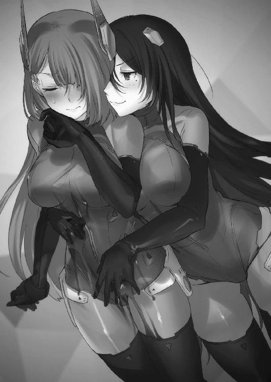
「ふざっ......けるな！ こんなっ......」
斑鳩が背後から胸を押しつけながら桜花の顔に頰を寄せ、耳元でささやく。
「我慢しなくっていいのよ？ 乗る前にできるだけ気持ちよくなっておけばその分感度が上がって機体の反応もよくなるから」
胸だけでなく、身体中に手を這わせて桜花を撫で回す。次第に桜花の吐息が熱くなり、もどかしそうな表情になっていく。羞恥に染まった顔で桜花は潤んだ瞳をタケルへ向ける。
「も、もう......やめて......お願いだ......草薙っ、見ないでくれ......っ！」
スタイル抜群の女子二人が目の前で濡れ濡れになりながら絡み合っている。
何故こうなっているのかまったく意味がわからなかったが、カメラが無いことがとても悔やまれた。
「鳳って普段は頑固なのに意外と墜ちるの早いわねっ......か、かわいいじゃないのっ......私もノッてきちゃったわ！ どうしましょうこのままいくとこまでいっちゃおうかしら!?」
やたらとハァハァしながら桜花の耳を唇に挟む斑鳩と、助けを求めてくる桜花。
タケルは助けたくてもできなかった。
別に助けたくても助けられないわけじゃない。
助ける気が全く無かったのだ。
ずっと見ていたかったのだ。
むしろ混ざりたかったのだ。
（だ、だって......男の子だもん！）
タケルはぐっと拳を握りながら目の前の光景をみじんこみたいな脳に焼き付けることに全神経を注いだ。
もちろん、そのままいくとこまでいくはずもなく、遅れてやってきたマリとうさぎに斑鳩が関節技を決められ、傍観に徹していたタケルも青あざができるぐらいに殴られたのは言うまでもない。
控え室を出て、野外演習場へとやってきた三五小隊。すでにドラグーンはスタンバイモードに入っており、コックピットが開いていつでも搭乗できる状態になっていた。
「うぅ......か、風が当たるだけで身体中がむずむずしますわ......ジェルも冷たいですし。わたくし、冷え性なんです」
身体を両腕で抱きながら、うさぎが涙目になって震えている。
最初はひどく恥ずかしがっていたが、皆も同じということでうさぎもがんばってスーツを着ていた。
「まあ使いどころは限られるだろうけど、ドラグーンを使えるってなったら戦力的にありがたい。実際に使わなくても、敵をビビらせて投降させられるだろうし、今回は我慢しようぜ」
「そんなこと言って......草薙は乙女の柔肌を観察して鼻の下を伸ばしたいだけなんじゃないですの......？」
「はっはっは！ ななななにをおっしゃるうさぎさん！」
青あざで腫れる頰を摩りつつ慌ててうさぎから目を逸らし、真横のマリを見た。タケルの視線に気づいたマリは、ジト目で彼を睨んだ。
「......笑えば？」
「なんで笑わなきゃいけないんだ？」
タケルが疑問を口にすると、マリは口を尖らせて自分の両胸を両手ですっぽりと覆った。
「.....................笑いなさいよ～」
「お前はまた胸の話か！」
「しょうがないじゃん......周りのみんなはあんなで、あたしこんなだし。劣等感くらい抱くわよ......男っておっぱい大好きじゃん......」
「......そりゃ男はだいたいみんな好きですけど、誤解がありますマリさん」
何故敬語なのか自分でも意味がわからなかったが、もう否定するのも面倒なので好きなのを認めてからタケルはマリの肩に手を置いた。
は？ という顔でマリが見上げてくる。
「俺な、昔事故で鳳を押し倒しちまったことがあるんだ。そん時、あいつの胸を、その......触ってしまってな」
「............」
「その時、俺は言ったんだ。言い訳じみていたかもしれないけれど、あれは本心だった」
「.........なんて言ったの？」
「俺、実は貧乳派なんだ、って」
遠くを見つめるタケルの澄んだ目は、噓を言っていなかった。
実際、噓じゃない。タケルはどんなおっぱいでも大好きだった。
マリの顔が、見る見るうちに明るくなっていく。
「そ、そぉなのぉ？ やだも～タケルったら～、じゃああたしのことをずっとそーゆー目で見てたわけ～♪ やらし～な～も～！」
もじもじしながらタケルの肩を叩いてくるマリ。
タケルは目を線にしながら、こいつこんなに単純なのにどうやって境界線で生きてきたんだろう......と素朴な疑問を抱いていた。
そうこうしている内に、いつの間にか桜花と斑鳩がドラグーンの調整を行っていた。
桜花はドラグーンのコックピットに入り込み、マニピュレーターの調節とナビゲーションシステムの使い方を斑鳩から教わっているようだ。
「なるほど、本当にたいしたものだ。マニピュレーターとの伝達率がほぼ一〇〇％......システムとのラグも一切無い。これならば目視でレティクルを合わせるより、自動照準システムの方が素早く敵を捕捉できる」
「まだプロトタイプだけど、操縦しやすさを重視して作ったから当然ね。名前は『ムラクモ』。刀の名前をつけた通り、掃魔刀を使った草薙の動きにも対応できるように設計したわ」
「なるほど......素直に感心する。心配なのは人工筋肉の強度か。草薙の動きに合わせるとなると、かなり消耗が激しいはずだ」
「そうね。今後の課題はそれよ。あとは武装かしらね～。独自規格のマニピュレーターを使ってるから、扱える銃器が通常時は大型兵器に限られちゃってるのよ。あくまでアーマータイプだから、フルボディタイプの大型武器を装備すると重くて機動性が下がる。燃費も悪いから実弾兵器しか使えないのも問題ね」
「これだけ腕が大きければ仕方あるまい。しかし、何故ここまで腕が太いのだ？ 人工筋肉のせいか？ それにコックピットが異様に狭いわりに胴が太い......なのに余剰スペースが無いというのは......さては何か理由があるな？」
「ふふふ、よく気づいたわね。ま、いずれわかるわ」
......なんだか、向こうは向こうですごく盛り上がっていた。
説明を終えたところで、斑鳩が桜花の肩に手を置いた。
「せっかくだから鳳がまず動かしてみなさいよ。ドラグーンに関して並々ならぬ理解があるあんたなら、いい感触が摑めると思うの」
「......い、いや、私は......」
何故かバツの悪そうな顔をして、断ろうとする桜花。
しかし斑鳩にハッチのボタンを押されてしまった。コックピットのハッチが閉まり、膝をついた姿勢だったドラグーンが自動的に立ち上がる。
『──ナビゲーションシステム、オン。マニピュレーター伝達率九八％。ムラクモ、起動しました』
無機質な音声と共に、斑鳩特製ドラグーン『ムラクモ』が起動した。
こうして、実際に立ち上がった姿を見るとその巨大さがよくわかる。今までにも何度かドラグーンを相手に戦闘をしてきたが、この機体の威圧感は半端ではなかった。
「乗り心地はどう？ 少し狭いけど、緩衝材もいいのを使ってるから不快ではないと思うのだけれど」
【む、胸が少しキツいな......】
「他はどう？ 気持ちいい？ 感じちゃう!? 早く動かしてみなさい！」
【あ、ああ......やってみる......！】
興奮してよくわからないことを口走りながら、斑鳩が桜花に感想を求める。
桜花も気合いを入れて操縦に当たった。
しかし、いっこうにドラグーンが動く気配が無い。
皆が不思議に思っていると、突然ドラグーンの警報ブザーが鳴った。
『──原因不明のエラーが発生しました。マニピュレーターの伝達率をカット、強制シャットダウンを開始します』
ズゥゥゥン......という重低音と共に、ドラグーンが機能を停止する。
斑鳩が劇画調の漫画に出てきそうな顔で絶句した。
「噓......私が試乗した時は何も問題無かったはずなのに......」
【いや......たぶん、この機体が悪いのではない......原因は私にある......】
落ち込んだような声がドラグーンのマイクから聞こえてくる。桜花は言いづらそうに、あることを告白した。
【実は私は......ドラグーンアレルギーなのだ......というより、モーション伝達システムアレルギーと言った方が正しいか。伝達率までは数値として出るのに、動かそうとすると何故かいつもエラーが出てカットされてしまう】
「............」
【......のだ】
すごく気落ちした声で、桜花はコックピットのハッチを開けた。
そして、コックピットの中から青空を見上げて、悲しそうにぽつりと呟く。
「......わ、私だって、動かしてみたいんだ......ドラグーン」
皆、桜花がドラグーンオタクであることを否定した理由を、この時察した。
桜花がドラグーンオタクを自称しないのは、乗りたくても体質のせいで乗れないからなのだろう。斑鳩のようなマニアではなく、実際に搭乗するプレイヤータイプのオタクである。桜花がバイクに乗るのを趣味としているのも、ドラグーンに乗れないからなのかもしれない。
猫が好きでも猫アレルギー、というより、猫が好きでも猫に拒絶されるような感じだ。
「何故だぁっ......」
悲痛な嘆きの声に、その場にいた全員が微妙な顔をせざるを得なかった。
気を取り直して、次はうさぎが搭乗する番になった。動かせなかった桜花は演習場の端っこで膝を抱えている。
コックピットに乗り込もうとするうさぎだったが......。
「えいっ！ やっ！ とうっ！ ほあっ！」
「............」
「──ムキー！ 位置が高すぎて乗り込めませんわー！」
コックピットの位置が高すぎて乗り込めず、出だしから躓いていた。
それこそ兎のように一生懸命ぴょんぴょん跳ねながらがんばっているが、いっこうに乗れる気配が無かった。
無理もない。膝を曲げていてもドラグーンのコックピットは背の小さいうさぎの頭よりずっと上にある。足を引っかける場所も無かった。
ぴょん、ぴょん、とうさぎが跳ねる。
「か、かわいすぎる......何よあの生物......抱きしめたい」
「あざといことを天然でやってのけるのがうさぎよね......あれはもう才能よ」
マリと斑鳩も目を線のようにしながら、うさぎが跳ねるのを眺めていた。
いつまでも見ていたいと思わせるほどにその姿は愛らしかったが、きっと前から見たら胸が揺れまくってて愛らしいどころの話ではないのだろうとタケルは想像する。
うさぎはいつまで経っても上れず、涙目で振り返って皆の顔を見る。
「うぬぅ！ 悔しいです！ 草薙！ 見てないで助けてくださいましな！」
「んぇ？ 助けるって何を？」
完全に小動物を眺める感じで癒されてしまっていたタケルは、気の無い返事をした。
うさぎは悔しそうに口をへの字に曲げながら、両手をタケルの方へ差し出してきた。
タケルが首を傾げると、うさぎは顔を赤くしながらこう言った。
「──だっこしてくださいまし！ このまま乗れずに終わったらわたくしのプライドが傷つきます！」
プンスカしながら苦肉の策と言わんばかりに手を伸ばしてくる。
タケルは言われた通り、うさぎの脇の下を手で摑んで、ひょいっと持ち上げた。
「いいですわ！ もうちょい上です！」
「......軽っ」
「何か言いましたか草薙!?」
「い、いいえ、何も」
口は禍のもとなので、タケルは黙ってうさぎをハッチに手が届くところまで持ち上げた。
うさぎはハッチにしがみつき、よじよじと上ってようやくコックピットに乗り込んだ。
「ふんす！ かなり胸がきつい感じですが、これでＯＫですわ！ 見ていてください、わたくしにできることが狙撃だけでないことを証明してみせます！」
気合い十分なうさぎはコックピットの中で鼻息を吐いて、ハッチを閉めた。
普通、コックピットに乗ったら搭乗者の肩あたりまで見えるものなのだが、背が小さいうさぎは頭のてっぺんしか見えなかった。
（大丈夫かな......）
一抹の不安を覚えながら、ドラグーンの起動を見守る。
ナビゲーションシステムがスタンバイモードを解除して、ドラグーンが自動的に立ち上がる。
だが、
【あ、あれ？ 動きませんわよ？ 杉波っ、どうなっているんですのっ？】
中からうさぎの切羽詰まった声が聞こえてくる。そして、
『──エラーが発生しました。ホバーペダルに足が届いていません。トリガーに指が届いていません』
【ナビからダメ出しされましたわよ!? 杉波っ、どういうことなんですのー！】
「どういうことって、つまりそういうことよ」
【ふぇ？】
「チビすぎてダメってこと」
【ムキー！】
怒りの雄叫び（？）と共にハッチが開き、中からうさぎが顔を出そうとする。
しかし、
「............ぬなー、出られませ～んー......だ、誰か助けてくださいまし～っ」
コックピットから這い出すこともできず、うさぎは中から両手を伸ばして助けを求めるのだった。
「──ふふん、どいつもこいつもダメダメじゃない。ここはマリお姉さんがお手本を見せてやるわよ」
「............それ、何のフラグよ？」
はりきりまくっているマリに、斑鳩がジト目を送る。だがマリは気にした風もなく、片腕をぐいんぐいん回しながらドラグーンに乗り込んだ。
「いいから見てなさい！ ロボットとかぜんっぜん興味ないけど、才能っていうのは望んだものが手に入るわけじゃないし、望んでない才能が目覚めてしまうこともあるもんね！ あたしが言うんだから間違いないわ！」
深いこと言っているようでそうでもないことを口走りながら、マリはコックピットにすっぽりと乗り込んだ。
【へぇー、意外とスペース余裕あるじゃん！ 幸先いいわね～、これなら問題無く動かせそう！】
「......スペースに余裕？」
マリの声に、斑鳩が眉根を寄せて首を傾げた。
【みんな聞こえる～？ 動かすからちゃんと見てなさいよね～！ マリちゃん、いっきま～す！】
威勢のいい声と共に、ムラクモが立ち上がる。キュピーンという音でも鳴りそうなほどに目が光り輝き、今まさにドラグーン『ムラクモ』が起動。
──は、もちろん、しなかった。
『胸部に緩衝材を追加してください』
【あれ？ なんで動かないの？】
『胸部に緩衝材を追加してください』
【緩衝材ってなに？ も～！ どうなってんの～！】
ナビの無機質な声が響く中、マリがコックピットの中で憤慨する。そこで、斑鳩が両手をぽんと合わせて、「なるほど」と呟いた。
「コックピットにスペースが空きすぎていると、動いた時の反動で脳しんとうを起こしたり、あばら骨を骨折することがあるの。それで安全装置が働いたのね」
【......つまり？】
「他のみんなと違ってあんたは胸囲が足りないってこと」
【............】
「ごめんなさい。追加の緩衝材、持ってきてないの。残念だわ」
斑鳩の真心の籠もっていない謝罪を耳にして、マリはムラクモから這い出てきた。
そしてハッチに足をかけ、青く澄み渡った空へ向かって、
「ドラグーンまであたしを貧乳呼ばわりするなんて！ うぇん！」
大声で泣きわめくのだった。
「待って......おかしいわ......もう日が暮れそうなのに、私のムラクモちゃんが一回も動いていないのはどうしてなの......？ まだ起動とシャットダウンの屈伸運動しかしてないわよ......？」
野外演習場の芝生の上で、斑鳩が挫折スタイルになりながら珍しく嘆いていた。
「期待に応えられず、申し訳ない......」
「身体的特徴はどうしようもありませんわっ」
「あたし悪くない！ あたしは絶対に悪くない！」
みんなの言う通り、誰も悪くない。
タケルは苦笑しつつムラクモのハッチに手をかけた。
「つーか、俺が使うのを想定して作ってあるんだろ？ だったら他のみんなが使えねぇのも無理ないって」
男の体格に合わせて作られているのならば、女子が扱えないのも当然だ。
落ち込んでいる斑鳩に気を遣って出た言葉だったが、斑鳩はすっくと立ち上がって、
「それもそうだわね。じゃさっさと乗っちゃって草薙」
「......切り替え早すぎだろ。まさかこの展開狙ってやってないよな？」
「まさかそんなわけないじゃない人聞きが悪いわ」
わざとな線が濃厚だった。落ち込んでいたのも演技な線が濃厚だった。
まあいいや、と気持ちを切り替えて、タケルはドラグーンのコックピットに乗り込んだ。
中に入る、というよりは巨大な着ぐるみを着る感じだった。
挿入口に足を入れると、腿から足先にかけて、ひんやりと冷たい感触があった。筋肉の動きを機械に伝えやすくするための液体で満たされているからだ。
同じように腕の部分も通す。
「ＯＫよ。右手の拳を握ればハッチが閉じて、自動的にシステムが立ち上がるわ」
言われた通りにすると、静電気のような痛みが手足に走り、ハッチが閉じた。こうしてハッチが閉じると、なかなかの圧迫感だ。真っ暗闇で何も見えない。
一瞬不安に思った直後、目の前のディスプレイが明かりを点した。
ナビゲーションシステムが起動し、外の映像が見えるようになる。
『メイン搭乗者、【草薙タケル】認証完了』
「おお、すげぇな......！ これがドラグーンかぁ」
タケルも男である以上、ロボットに乗るということにワクワクしないわけがなかった。
機体に命が吹き込まれていくような重低音が響く。
なかなかの高揚感だった。
『メイン搭乗者専用ナビゲーションシステム、起動します』
「......ん？ 専用ナビ？ なんだそれ」
ナビの機械音声に首を傾げると、その直後、今まで聞こえていた音声が切り替わった。
『──お兄ちゃんおかえりなさいだにゃー。ムラクモ専用ナビ音声の『ラピス』だにゃー。今日も一生懸命ご奉仕するにゃー』
「............」
台詞は甘ったるいのに、この無感情な声。
間違いない。タケルの愛剣であるミスティルテイン、ラピスの声だった。
タケルは怒りで顔を引きつらせながら外部マイクをオンにした。
「杉波てめーこのやろうッ！ 俺のラピスに何やらせてやがる！」
【や、あんたが喜ぶと思って。頼んだらやってくれたのよ、あの子。それより起動したんだから動かしてみなさいよ。早く】
横暴な物言いに斑鳩への苛立ちが募る。ラピスも何をやってんだよ......と心の中でツッコミを入れつつ、タケルは手足を動かしてみた。全方位ディスプレイに、自分の手の動きと連動したドラグーンの腕が見えた。
「おおっ！ 本当に思い通りに動くんだな！ こりゃすげぇや」
【良い感じね。じゃあ次は走ってみて】
指示通り、右足を前へ出す。
コックピットがかなり揺れたが、確かに今、歩いた。
「ははっ、思いのほか楽しいぞ、これ」
楽しくなってきたタケルは、足を交互に動かして走るモーションを行う。
すると、ドラグーンはタケルの動きに合わせて演習場の中を走り回った。
【足下のペダルを強く踏むとホバーで動けるわ。ナビに武器ロッカーの場所が出てるわよね？ そこまで行って武器を回収して】
「了解！」
足下のペダルを踏むと、ムラクモがホバークラフトにより滑るような移動を始めた。まるでスキーを滑っているような感じで、とても楽しい。
自在に動く巨大な身体。タケルはますますドラグーンの操縦に魅了された。
「お、あれが武器ロッカーか」
指定の場所につくと、ロッカーが立っているのが見えた。
近づくと自動的にロッカーが開扉し、中からアダマンチウム製の巨大な剣が出てきた。
【あんたには、やっぱり剣だと思ってね】
「さっすが！ わかってるな杉波！」
この巨体で剣を振り回してみたいと、丁度思っていたところだった。
タケルはホバーを維持したままロッカーから剣を引き抜き、構える。
【無人機を出すわ。戦ってみて】
「いいのか？」
【ええ。許可はもらってる。あんたの動きにムラクモがついていけるか確かめたいの。遠慮なくぶった斬りなさい】
タケルのテンションがマックスになる。
ドラグーンに乗って、草薙流の技を使ったらどうなるだろう？ 重量も腕力も何百倍とあるこの身体で、あますことなく全力で──
「──見えた！」
量産型のドラグーンが三体、こちらの動きに気づいて銃を構えた。
タケルは掃魔刀を発動させて脳の働きを加速させる。
スローになった世界で身体を動かす。
（──いけるぞ！）
確信して、足を思い切り踏ん張って跳躍。遠心力と落下速度を加えた一撃を繰り出す。
「草薙諸刃流──蟷螂坂！」
機体が空高く舞い上がると同時に、タケルは身体を回転させて剣を敵へ向けて叩きつけた。轟音と共に、無人機の一体が砕け散る。
続けざまに抜刀の構えを取り、腰の後ろまで剣を引き、一気に振り抜く。
「片車輪！」
横薙ぎに振るわれた一撃が、二体のドラグーンを屠る。
豪快に砕け散る無人機の姿に、タケルの頭の中でアドレナリンが溢れ出た。
「楽しいなーこれー！」
【次のはちょっと手ごわいわ。アルケミストの最新鋭機、出すわよ】
フィールドを一周して斑鳩達がいる場所へ戻ってくると、地面のハッチからエレベーターに乗って新たな無人機が出てくるのが見えた。
強そうだ。さっきの量産型とは一味違う。
タケルはホバーを止めて、最新型と対峙する。無人機の得物も剣。粋な計らいだ。口元に笑みを浮かべて、足に力を込めた。
「行くぜ！」
地を蹴り、突貫する。
上段に構えた剣を振り下ろすべく、一気に踏み込んだ。
その時、最新鋭機が突然後ろを振り返り、斑鳩達に向かって走り出した。
「──なっ!?」
思わず足を止めそうになる。何か今、無人機の挙動がおかしかった。
【？ なんでこっちにくるの？ もしかして、暴走してる？】
「暴走!?」
【演習で使う前に、ちょっとＡＩの設定いじったのよね......】
「はい!? 何やってんだ杉波！」
タケルは慌てて無人機を追いかける。
が、足の反応がさっきまでと比べて鈍い。技を使用した際に、ムラクモの足に負担がかかったせいだ。
「くっそ！」
タケルは仕方なく地面を蹴って一気に跳躍。さらにブーストを吹かせて無人機と斑鳩達のいる場所の中間に着地した。
真っ直ぐに突進してくる無人機の腹を蹴り飛ばし、なんとか仲間達のところへ突っ込むのを防いだ。
しかし、最新鋭機というだけあって、すぐに起き上がりそうだった。
タケルはムラクモの状態を確認する。
「......くそっ、左腕が動かねぇ。足の反応も鈍い。杉波、そっちで無人機を止められないのか？」
【ここの設備じゃ無理ね。管制室に行かないと強制終了できないわ】
「仕方ねぇ。なんとか俺が止めるから、みんなは演習場の外に逃げてくれ」
【いいえ、その必要は無いわ】
斑鳩の否定の言葉にタケルが首を傾げると、突然ムラクモのハッチが開いた。
「へ？」
「やっほ」
顔を上げると、ハッチから斑鳩が顔を出した。
「ちょっと頭下げて」
「ど、どうするんだ？」
言われた通りに頭を下げると、斑鳩はタケルの首の後ろにあるボタンを押した。すると、ムラクモの胴体が駆動して──タケルの背後にもう一つの座席が出現した。
「複座なのよ。二人で操縦できるの」
「二人で？」
「そ。失礼するわよ」
斑鳩がタケルの頭をまたいで、真後ろのコックピットに入り込む。コックピットと言っても隔たりが無いため、タケルが斑鳩に後ろから抱きつかれているような形になっていた。スーツでピチピチになった、斑鳩の巨大な胸がタケルの背中に押し付けられる。
「こういうの、ロボットアニメでお約束よね。嬉しい？」
「んなこと言ってる場合か！」
タケルがツッコミを入れると、斑鳩はもう一つの挿入口に腕を突っ込んだ。
「サブアーム、起動」
斑鳩がそう言った瞬間、ディスプレイに映るムラクモの太い腕の中から、もう一つの腕が出現した。
「四本腕!?」
「隠し腕ってやつよ。ロマンでしょ」
うふふぅと笑いながら、斑鳩はサブアームでムラクモの腰に装着されているハンドガンを引き抜いた。
「無人機へ向かって真っ直ぐ突っ込んで。私がハンドガンで牽制するから、あんたがとどめを刺す。いいわね？」
「マジで？」
「あんたの技量なら、右腕だけで十分でしょ？ それとも自信無い？ 私がやる？」
斑鳩が、耳元で甘い声でクスリと笑う。そんな風に挑発されて、タケルは斑鳩にとどめを任せるわけにはいかなかった。
「冗談だろ、やってやるさ！」
言われた通り、タケルは全力で無人機へ向かって走った。
足の反応が鈍いため蛇行してしまったが、無人機へ向かって走る。
無人機は今まさに起き上がろうとしていたが、斑鳩がハンドガンを連射して時間を稼いでくれた。
「今よ、やりなさい」
「おおおおおおおおおおおおおッ！」
タケルは足を思い切り踏み込み、機体を独楽のように回転させると共に無人機の脇腹へ剣を叩き込んだ。
「草薙諸刃流──一目連！」
ゴシャッ、という鈍い音と共に、無人機の胴体が真っ二つになる。確かな手ごたえに、タケルは目を輝かせた。
「やったぞ！ 見た──かぁああ!?」
歓喜の声が悲鳴に変わったのはその直後だった。
回転を止められず、ムラクモの機体が地面に突っ込む。さらには人工筋肉が限界に達したのか、回転を続けたまま両手両足が四散した。
外の映像が土煙に覆われると共に、ムラクモのナビゲーションシステムがシャットダウン。コックピットが闇に包まれた。
「い、いてて......杉波、大丈夫か？」
コックピットから斑鳩を引きずり出して、タケルは彼女に怪我が無いかを確認する。
生命維持装置がきちんと機能していたため、怪我は無いようだった。
「なんで最後の最後に回転させるのよ......吐きそうだわ......」
「わ、悪い......ドラグーン、壊しちまった」
青い顔でふらつく斑鳩の身体を支えながら、タケルは申し訳なさそうに謝った。
斑鳩はタケルに寄りかかりながら、いつもの眠たそうな顔で彼の顔を覗き込む。
「......楽しかった？」
「え？」
「楽しかった？ 私のドラグーン」
いきなりそんなことを言われて、タケルは少し困惑した。
上目遣いで覗き込んでくる斑鳩の瞳は、何故か少しおどおどしている。
「あ、ああ......楽しかったけど、どうして......？」
「だって──今日はあんたの誕生日でしょ？」
そういわれて、タケルはハッとした。
斑鳩は目を細めて、タケルの頰を撫でる。
「一六歳の誕生日おめでとう。これ、私なりの誕生日プレゼントよ？」
クスリと笑いながら、斑鳩はため息と共に目を閉じる。
まるで、気づいてなかったのね、とでも言いたげだった。
思えば初めから妙ではあったのだ。斑鳩がタケルの専用機を開発しているという時点で気づくべきだった。
斑鳩の誕生日プレゼント。女の子としては不器用だけれど、技術者としては最高のプレゼントだろう。
素直に嬉しいと思った。
......でも。
「なあ、杉波」
「なぁに？ お礼ならキスでいいわよ」
「言いにくいんだけど」
流し目を送ってくる斑鳩に、タケルは笑顔でこう言った。
「──俺の誕生日、来月なんだ」
「............」
「来月、なんだけど」
............。
........................。
「それも含めて、サプライズ的な感じで、どう？」
「どう？ ──じゃねぇっつーの！」
笑いながらも、タケルは斑鳩にツッコミを入れるのだった。
＊＊＊
こうして、斑鳩の勘違いから始まったドラグーン騒動は幕を閉じた。
結局三五小隊にドラグーンが配備されることはなかった。
理由は二つ。まず、斑鳩の開発したムラクモは燃費の関係で実質三分しか動けず、使い物にならないということ。
もう一つ、一度の稼働にかかる経費が軽く億に届いてしまうということ。こちらが最大の原因だった。
「こんなもの運用していたら対魔導学園が破産してしまうよ」
と、理事長、鳳颯月から連絡を受けたのは後日のことだ。
Extra Mission Stand by Me
それは三五試験小隊がポイントを稼ぐために出撃しようとしていた時のことだった。
場所は食堂。タケルが食事を終えて小隊室へ行こうとした時、一八試験小隊の生徒達がやってきて、突然抗議してきたのである。どういうことなのかわけを聞いてみると、三五小隊と一八小隊は同じターゲットを審問会に申請していたらしく、ダブルブッキングが発生してしまっているらしかった。
審問会はそのミスに気づくと、遅れて申請を出した一八小隊への許可を取り消した。任務のために入念な準備をしていたにもかかわらず許可を撤回された一八小隊からしてみればたまったものではない。試験小隊活動の許可を与える仕事の大部分は生徒会が担っていたのだが、メフィストフェレスの一件で生徒会がまともに機能しなくなってしまったことが、この不手際の原因だろう。
そこで一八小隊は、三五小隊に抗議という名目の命令をしてきたのである。
三五小隊が任務を放棄すれば、一八小隊に許可が下りる、と。
「そういうわけだから、あなた達は辞退しなさいよ」
「いや、さすがにそうもいかねぇよ......いろいろ準備してきたのはこっちだって一緒だし」
タケルは隊長として、要求を吞むわけにはいかなかった。
相手は一八小隊。少し前まで一学年でトップの成績を維持していた連中だったが、数ヶ月前の英雄による襲撃で状況が変わった。
一人が戦死。もう一人は目の前で友人を失ったことで心を病んだらしく、自主退学してしまったらしい。メンバーが足らずに成績を落とし、現在一八小隊は窮地に陥っている。
タケルも一八小隊の現状は察しているため、相手方が喧嘩腰だからといってむかっ腹を立てたりはしない。
「お互いにまずい状況なんだから、協力して任務に当たらないか？ 合同任務やポイントの分配は許されてるはずだし、今回のターゲットはＣクラスだ。分配してもお互いに十分潤うと思うんだ」
タケルが人の良さそうな笑顔で申し出ると、相手側の女隊長は鼻で笑った。
「悪いけど、雑魚小隊と組むなんて願い下げよ。この任務はあなた達には危険すぎるし、何よりあなた達と組めば私達も死にかねないしね」
高飛車な女隊長は、胸の前に腕を組んでそう言ってのけた。
さすがのタケルも笑顔が引きつったが、ここで怒ってしまっては双方にとって得はない。正直、三五小隊としては一八小隊と共同で任務に当たることができれば成功率がぐんと上がるため、ここで交渉を決裂させるのは得策ではないのだ。
なんとか共同に持ち込もうと下手に出続けるタケルだったが、不意に肩に手が置かれた。
振り返ると、桜花が険しい顔つきで立っていた。
「黙って聞いていれば......笑わせるな。先に申請を出して許可をもらっていたのは私達だ。全て、何もかも貴様達がのろまなのが悪いだけではないか」
タケルの横に並んで、桜花はふんぞり返りながら女隊長を全力で見下した。
桜花の登場に、女隊長が盛大に顔を引きつらせる。
「鳳桜花......！」
「またお前か。確か一八小隊の隊長だったな。私に直接ちょっかいを出していた時はまだ好感が持てたが、私の仲間にまで因縁をつけるのであれば容赦せんぞ」
「じ、自意識過剰なんじゃない!? 今回の件にあなたは関係ないもの......！ 元魔女狩りってだけで調子に乗らないでくれるかしら......!?」
「ああ、そうだったのか？ 了解した。調子に乗るのはやめよう。それで草薙に何の用だ、元優等生」
空気が読めなかったわけではない。桜花はあえて相手の神経を逆撫でするような物言いをしていた。女隊長の顔は怒りで真っ赤に染まっている。
桜花は学園の中では有名人だ。最年少で異端審問官になった元魔女狩りというだけでなく、その非の打ち所のない高成績は多くの生徒の羨望の的となっている。だがその分、やっかむ者がいるのも事実だった。特に優等生の中には陰湿な嫌がらせをしてくる者もいるのだという。
そこから先は、口論にすらなっていなかった。桜花が一方的に女隊長へ辛辣な言葉をぶつけていく。感情にまかせて言葉を吐いても正論で返してくる桜花に対して、女隊長はたじろいだまま怒りで身体を震わせている。
さすがに言い過ぎだと思い、止めに入ろうとした時、タケルは女隊長から殺気を感じた。
（あ、この感じはヤバい）
タケルは脳の処理速度を加速させる掃魔刀を発動し、桜花を庇うように前へ出た。ナイフか、銃か。凶器を予測しながら身構えたが、飛び出してきたのはただの拳だった。
涙目になった女隊長が、パンチを放ってくる。
タケルは冷静にその状況を鑑みて、どうすべきかを考えた。
避けるか、防ぐか。
（うーん）
今後の処理も考えて、タケルが出した結論は──そのまま受ける、だった。
タケルの頰に痛烈な打撃が炸裂したのは、掃魔刀を解除した直後だった。
＊＊＊
「──ということがあったのだ」
タケル以外の小隊メンバーにさっきまでの出来事を全て話し終えると、桜花はフンと鼻を鳴らした。
紅茶を飲みながら黙って聞いていたマリが、深くため息を吐く。
「なにそれ信じらんない......完全に向こうが悪いじゃん。タケルってどこまでお人好しなのかな......」
マリの言葉に頷きながら、桜花は首を傾げた。
「どうして私をかばうようなことをしたのか全くわからん。あの程度の拳など私は容易く躱せたのだぞ......何より草薙ならば防ぐことなど簡単だったはずだ。何故避けない......何故防がずに殴られた......わからん......」
「え？ あんたが気にしてるとこってそこなの？ っていうか本気でわかんないの？」
真面目にわからないという顔をする桜花に、マリはジト目を向けながらわざとらしく笑った。
「空気が読めないっていうか、あんた、もうそれは鈍感なだけなんじゃない？」
「な、何故私が鈍感ということになるのだ!?」
桜花がテーブルに両手をついて身を乗り出そうとしたのを見て、うさぎがティーポットを守るように持ち上げる。案の定、桜花が両手をどかんとついたせいでテーブルが激しく揺れた。うさぎはポットを守れたことに安堵しつつ、桜花のカップに紅茶を注いだ。
「鳳、草薙が殴られた後、その場はどうなりましたの？」
「うやむやになった。草薙がこれで手打ちというから......」
「つまりそういうことですわ。一八小隊の隊長が鳳に手を出せば、鳳は返り討ちにしてしまいますわよね？ そうなると、たぶん一八小隊との共同任務への道は断たれます。だから草薙は自分が黙って殴られることで手打ちにして、三五小隊と一八小隊の同盟を結ぶための可能性を残したのですわ」
言われて、「あ」と桜花は呆けたように口を半開きにした。
だがすぐに首をぶんぶんと振って、またむすっとした顔をする。
「いやいやしかしだな！ そうまでしてあの連中と組もうとするところがまず理解できん。草薙にはもう少しプライドというものを持ってほしいと私は思うのだ」
うんうん、と強く頷きながら桜花は言った。マリも唇に人差し指を当てながら、ソファの背もたれに寄りかかった。
「確かにそれは一理あるわね～。お人好しなのはタケルの個性だと思うけど、もうちょっと自分に正直になるのも必要だと思うわ」
言いつつ、マリは紅茶をカップに注いでいるうさぎを見た。
「ねえねえうさぎちゃん、昔のタケルってどんなだったの？ なんかすごい気性が荒かったって聞いてるけど」
「どんなと言われましても......わたくしが草薙と出会ったのは高等部に上がってからですし、その時には今と同じお人好しでしたわ。わたくしに聞くよりも、中等部時代から知り合いだった杉波に聞いた方がよろしいですわよ」
うさぎが小隊室の作業台へ目をやる。
斑鳩がゴーグルとマスクを装着し、カラースプレー片手に何か作っている。見た感じとても鍛冶師らしい外見だが、制作しているものはお手製の１／４西園寺うさぎソフトフィギュア（ホワイトバニーガールVer）である。
斑鳩は視線に気づき、ゴーグルをくいっと上げて、ニヤリと笑いながらびしっと皆へ向けて親指を立てた。
「何よ物欲しそうな目でこっち見ちゃって！ 魔女狩り祭の時のコスプレで全員分のガレキを作るつもりだから安心するがいいわ！ 誰も仲間はずれになんてするわけないじゃないこの私が！」
「......話聞いてませんでしたの？ フィギュアなんか作ってないで会話に参加してくださいまし」
うさぎが斑鳩に桜花から聞いた話を伝えて、過去のタケルがどんな少年だったのかを尋ねた。斑鳩はスプレー缶を置いて、白衣のポケットからミントキャンディーを取り出すと、椅子の上で脚を組んだ。
「昔の草薙と今の草薙の違い、ねぇ。まあ、確かに多少お人好しにはなったと思うけれど、あの男は根本的には何も変わっていないわよ。鳳も知っているはずでしょ、中等部二年の時の演習で戦った仲だし」
桜花は少しだけ気まずそうに視線を泳がせた。異端審問官の資格を剝奪されて三五小隊に編入してきた時、桜花はタケルのことを覚えていなかったのだ。
「うろ覚えで申し訳ないのだが......正直、今の草薙とは似ても似つかないというか......剣術を侮辱されて頭に血が上った時の状態が常に続いているような少年だったような......」
「まあ、概ね合っているわ。つまり単純に言ってしまえば、今より少しだけ──」
斑鳩が人差し指を立てて微笑みながら、皆に言う。
「──痛い子だったのよ、あいつ」
そして斑鳩は懐かしそうに過去のタケルとの思い出を語り始めた。
＊＊＊
四年前、対魔導学園中等部、新入生歓迎式。
『剣を笑うんじゃねぇ！』
突然の怒声に、斑鳩は声のした方を見た。
異端審問会本部から少し離れた場所にあるコロシアム。
やたらと目つきの悪い少年が、数名の生徒に絡んでいる。その形相は怒り狂っており、まるで今から人でも殺しそうな感じだった。彼に話しかけたであろう生徒達は、何故こうも激怒されているのかわかっていないようで、おどおどしている。
丁度音楽隊によるファンファーレが流れていたため、その騒ぎはそこまで生徒達の注目を集めたわけではなかった。
歓迎式に退屈していた斑鳩は、列から顔を出して少年を眺めていた。
見た目はさして特異ではない。適当に切りそろえた黒髪と、刃のように鋭い目。背は高くはないが、引き締まった筋肉からかなりの運動神経を持つと見受けられた。絡まれた生徒達は少年を睨みつけていたが、教師が間に入ってきたことでそそくさと彼から離れていく。周りの生徒達も、心なしか少年から距離を取った。
生徒達が彼から距離を取ったのは怒声のせいではないだろう。
恐らく──腰に携えられた日本刀のせいだ。漆塗りのシンプルな鞘に収められた刃が、周りの生徒に「近づくな」と警告している。
銃が主流のこのご時世に刀......近接戦闘ですら、刀はこだわりでもない限り使う者はいない。銃と併用して用いることができるナイフや格闘術が重視されるからだ。
少年は剣を笑うなと怒鳴った。ようするに、他の生徒に剣を茶化されて怒ったのだろう。
（ああいうのが、世間一般で言うところの『変な奴』なのかしら）
ぼんやりとしつつも、少しだけ好奇心を瞳に内包させながら、斑鳩は少年の横顔を眺める。子供っぽくも凜々しいその横顔は、年齢からは想像できないほどに荒み、修羅場をくぐってきたような威圧感があった。
前だけしか見据えていないような、険しい表情。
その立ち姿は腰の刀と一体化しており、彼が鋭い刃そのもののように見えた。
『............』
その姿が、妙に目に焼き付いた。
また同時に、彼は自分と同じように何かが欠けていると......斑鳩は思った。
（......面白そうな奴ね）
作られた天才として生まれ、アルケミスト社で研究のみを生き甲斐としてきた斑鳩が、初めて明確な『他者への興味』を抱いた瞬間だった。
その技術力の高さから異端審問官『鍛冶師』の即戦力となることを期待されていた斑鳩だが、彼女は学校に通いたいと言い、学費と生活費を免除されて対魔導学園に通うことになった。
だが正直なところ退屈だったのだ。外の世界を見てみたいという好奇心でいろいろなものを捨てて飛び出したはいいものの、想像以上に面白いものにはまだ出会っていなかった。
歓迎式を終えて、皆が下校を始めた頃、斑鳩は何気なく学園内を見て回っていた。
斑鳩は学園内の学生寮に住んでいるため、下校する必要はない。
階段の踊り場を下りていると、窓の外から鈍い音が聞こえてきた。
好奇心がセンサーのように働き、斑鳩は足早に階段を下りて、窓から外を見た。
眼下の校舎裏で、一人の男子生徒が頰を押さえて倒れており、十人の男子生徒が一人の少年を囲んでいた。
『あいつだわ』
窓枠に頰杖をつきながら、眼下のやりとりを傍観する。
少年を取り囲む男子生徒達は、今朝の歓迎式で少年を睨みつけていた集団だ。
なんとなく状況を察する。たぶん、刀の少年が呼び出されて難癖をつけられたあげくに、先に殴ったのだろう。殴り飛ばされた男子生徒を余所に、十人の生徒達が殺気立ちながら刀の少年へわめき散らす。
少年は半身を引いて、瞳を怒りで赤く光らせた。
『かかってくんならさっさとしやがれ......こっちはいつでもいいぜ。剣術を馬鹿にしやがって、覚悟しろよてめぇら！』
鬼の形相とは正にこのことだった。奥歯を嚙み締めて、少年は構える。
『俺は誰にも負けねぇ！ 銃だろうが魔法だろうが、なんだってぶった斬ってやる！』
少年が覇気を らせると、生徒達は一瞬怯んだが、雄叫びを上げると共に一斉に襲いかかった。
らせると、生徒達は一瞬怯んだが、雄叫びを上げると共に一斉に襲いかかった。
激情に任せて襲いかかってくる生徒達に、激情で立ち向かう少年の姿は勇ましく、勝利を確信しているようにすら見えた。
が、一〇分後。
校舎裏に倒れているのは、刀の少年ただ一人だった。少年は見事なまでにボロボロだ。逆に少年を相手にしていた生徒達は、全員ほぼ無傷だった。
『んだこいつ、口だけか』
『だっせぇな。行こうぜ、こんなん相手にするだけ時間の無駄だ』
『じゃあな～侍野郎～』
生徒達が去っていく中、少年は仰向けに倒れたまま口をへの字にして、むくれたような顔で空を見ているようだ。
あれだけの啖呵を切っておいて、この敗北はかっこ悪いにもほどがあった。
だが、一部始終を見ていた斑鳩は腑に落ちないことが一つあった。
『剣、なんで抜かなかったの？』
大の字に倒れている少年へ、斑鳩は声をかけた。
少年は二階の窓から自分を覗き込む影に気づき、顔を顰めた。
『あ？ なんだてめぇは？』
『ただの見物人よ。ねえ、なんで抜かなかったの？』
少年は腰の刀を抜かなかった。数で圧倒しているのだから、せめて武器を使って応戦すればよかったのに、と斑鳩は思ったのだ。たとえそれが時代遅れの接近戦用の武器であったとしても、剣を侮辱されたことで喧嘩に発展したのだから、力を見せつけてやるべきなのだ。
だが、少年は最後まで刀を抜かなかった。斑鳩はその理由が気になった。
少年は斑鳩を睨みつけながら、ふんと鼻を鳴らした。
『丸腰の相手に剣を抜くほど、俺はプライド捨てちゃいねぇよ』
『ふぅん。変なプライドね』
タケルは眉間に皺を寄せて顔を背けた。
さすがに自分が「変」だという自覚はあるらしかった。
『なんとでも言いやがれ。剣にかけるプライドを捨てたら、俺が俺でなくなる。元より俺にはこれしかねぇんだ......しがみついちゃ悪いかよ』
『............』
しがみつく。唯一のプライド、唯一の存在意義に固執する。
かつての自分が研究が全てだったように、もしかすると、この少年も剣が全てなのかもしれない。自分と似ているのかもしれないと、斑鳩は思った。
斑鳩は薄く口元に笑みを浮かべた。
『必死ねぇ』
『必死で悪いか。全力で悪いか』
『そのプライド、しがみつくほど崇高なものとはとても思えないけど？』
自分にとって研究がそれほど崇高なものではないと気づいたように、少年にとってもそうなのではないかと、斑鳩は問う。
だが少年は、真っ直ぐに斑鳩を睨みながらこう告げる。
『笑いたきゃ笑えよ。俺は何言われても自分を変えるつもりはねぇ』
プライドを捨てるつもりも、自分を変えるつもりもないと少年は言う。
研究を捨て、アルケミストの怪物でいることから逃げ出した自分とは真逆を行くのに、斑鳩には彼が──
『あんた面白いわね。気に入ったわ。尖ってる奴が、私は好き』
──とても、眩しく見えたのだ。
『なんだそりゃ......そもそも誰だよ』
『んー？ 名乗る時はまず自分からでござらぬか？』
『......ムカつくな、お前』
少年は不服そうな顔をしながら言った。
斑鳩はムカつくと言われて、逆に嬉しそうに笑った。
『......草薙タケルだ。異端審問官になって世界を変えるためにここに来た』
『杉波斑鳩よ。青春を謳歌するためにこの学園に来たわ』
こうして、草薙タケルと杉波斑鳩は知り合った。
といっても、斑鳩がタケルに一方的に興味があるというだけで、まだこの頃は友人でもなんでもなかった。
幸い、二人は同じクラスに入れられ、中等部時代を過ごすことになった。
草薙タケルという人物を単純に、わかりやすく、明確に表現するならば──バカである。
『間違いない。確定的だ。擁護のしようもない。私であろうと、どのような教師であろうと手の施しようがないほどに......草薙、お前はバカだ』
それはタケルのテストの答案用紙を返却する時に担当教師が告げた言葉だった。
タケルは教師から採点済みの答案用紙を受け取る。
全教科全科目、全て〇点だった。
名前を書き忘れたとか、解答を書く場所が一段ずつずれていたとか、そういうミスがあったわけではない。
全問、マークシートですら、ただの一つも正解していなかった。
『それともお前がバカなのではなく、お前が私達教師をバカにしているのか？』
『俺は大まじめだ』
『大まじめならどうしてこういう点数になる？ ただの学力測定だぞ？ 問題の内容だって小学校で習うもののお復習いだ。そんなものですらお前はできないのか？』
『ああ』
『ああじゃないだろ、そこはせめてはいと言え』
対魔導学園には入学試験が存在せず、入学自体は誰でもできる。しかし中等部の過酷すぎる訓練や、術式学や対魔導学などの特殊な学問、そして高等部の試験小隊制度の難易度の高さから、入学時にいた生徒の一〇〇分の一程度しか異端審問官になることはできないと言われている。
だが今回行われたのは小学校レベルの基礎学力の測定。簡単なペーパーテストだ。
それが全て〇点。常軌を逸した頭の悪さだった。
しかしタケルは教師の正論すぎる説教に怯むことなく、こう返す。
『俺は剣術以外に取り柄がない人間だ。だから物事は剣で解決する。剣でできないことは何もできないし、するつもりもない』
『............』
『以上だ』
スパーン！
教師が丸めた答案用紙でタケルの頭をひっぱたくいい音が響いた。
『だったらお前は何故異端審問官になろうとしているんだ？ 剣術だけで異端審問官になれると本気で思っているのか？』
『ああ、思ってる』
今度は顔面をひっぱたかれた。
『対魔導学園は対魔導学や戦闘技術だけでなく、一般教養も普通の学校同様に生徒達に学ばせている。試験の成績が悪ければ中等部だろうと留年もあり得るんだぞ？』
『......りゅ、留年。そ、それは、まずい』
『わかったら少しは勉強しろ。今度の中間試験の難易度は今回の比じゃないぞ。今回の学力測定で〇点だったお前が挑めばどうなるか......想像できないわけじゃないだろう』
『......むむ』
『お前が望むなら先生も協力してやるから、な？』
ため息を吐く教師。
口をへの字にしながら、留年と聞かされて汗をだらだらと流して直立するタケル。
背後では、クラスメイト達がくすくすと笑っている。笑われていることに気づいて、タケルはますます口をへの字にした。
『自分でなんとかしてみせる！ 先生の手は借りないッ！』
強がっているのは明らかだったが、タケルは踵を返して自分の席へ戻って行った。
放課後。夕暮れに染まる教室で、一人黄昏れるように窓際に座るタケルは、机の上に広げた本へ殺意を向けていた。放課後になって学園の中を散歩していた斑鳩は、教室に残っているタケルの姿を発見。ドアを開けて彼のそばに歩み寄る。
タケルは斑鳩に気づかない。何を読んでいるのかと思い、本を覗き込むと、それは問題集だった。
問題集と言っても小学生向けの数学......つまり算数ドリルだった。
タケルは算数ドリルに目を落としながら、身体中から夥しい量の汗を流してブツブツと独り言を呟いていた。
『おかしい......なんでだ......？ 俺は小学校で足し算よりかけ算の方が強いと教わった......言うなれば足し算が小太刀であれば、かけ算は野太刀......割り算は斬馬刀ってことになる......使い所によるが、殺傷力も破壊力も段違いなはず......』
『............』
『それなのになんで１＋１が２で、１×１が１なんだ......!? かけ算の方が強いなら１×１は２以上、つまり３とか４とか５になるのが正しいんじゃねえのか......!? 何故足し算がかけ算に勝てる!?』
『............』
『１＋１を構成する１同士と、１×１を構成する１同士に技量の差があるのは間違いない......！ １＋１、つまり同じ技量を持つ１同士の力が合わされば２になるのは必然......だが、１×１が２ではなく１ということは、片方の１が足を引っ張っているか役立たずってことになる......！ ちくしょうっ、そこまで説明してくれねぇとこんな問題解けるわけねぇだろうッ！ 舐めてんのかこのドリル......！』
タケルは身体を怒りで震わせながら、腰の鞘から刀を抜こうとする右腕を、左腕で必死に押さえつけていた。算数ドリルを前にしながら、苛立ちのあまりに抜刀しようとしている少年の図は実にシュールだった。
なんというか、難しい方向に馬鹿な少年である。
（こういう思考回路で算数解こうとしてる奴、面白いわね）
斑鳩は思わず噴き出して笑ってしまいそうになり、口元を手で押さえた。
そこでタケルが斑鳩の存在に気づいた。タケルは斑鳩を親の仇でも前にしているような瞳で睨んできた。
『......なんか用か、杉波斑鳩』
『あら、私の名前、覚えていてくれたのね。なんかとても面白い方向に間違ってるみたいだったから、助けてあげようと思って』
斑鳩がタケルの前の席に腰を下ろして、脚を組んだ。斑鳩は中等部の制服を着ているのに上から白衣を羽織っている。斑鳩からしてみれば非常に心外だが、タケルの斑鳩を見る目は変人を見る目だった。それもそのはずで、斑鳩だってタケルに負けないくらいにクラス内では変人で通っている。
『......自分の力だけで事に当たらなければ身につかないことが世の中には多いと師匠が言っていた。だから俺は自分のことは全部自分でやる』
『ふぅん。たいした根性だと思うけれど、今度の中間学力試験、あんた一人でどうにかできるわけ？ 今のうちに対策をしておいたほうがいいと思うけれど』
『何度も言わせるな。お前の力は借りねぇって言ってんだ。わかったら帰れ』
もの凄い刺々しさだったが、斑鳩は怯んだり呆れたりせず、肩をすくめた。
『どうしてなんでも自分一人でやろうとするの？ 絶望的にできないくせに』
『......できなくても、やるんだ』
膝の上で拳を握りながら、タケルは頑なに一人でやるということを譲ろうとはしなかった。誰にも頼らないことが美徳である......というよりは、誰かに頼ることを恐れているようにも見えた。
中等部に入ってからしばらく経ったが、斑鳩はタケルのことをずっと見てきた。
この男は何に対してもがむしゃらだ。やれと言われたものはできなくてもやる。誰に馬鹿にされても、審問官にはなれないと教師から言われても、絶対に諦めようとはしない。不誠実なわけでも、誰も信用していないわけでもない。
何か、強迫観念のようなものが彼を馬車馬のように走らせているのだろう。斑鳩にはそれが何なのかわからないが、彼の必死さを見ているとこっちまで息苦しい。
このままの成績では留年、下手をすれば退学。きっとこの少年は、留年しようがなんだろうが、決して諦めないのだろう。
斑鳩にしてみれば、タケルはようやく興味が持てた他人だ。ここで手放すのは惜しい。
『......じゃあ、一人でがんばんなさい。私はあんたの勉強を眺めながら、独り言を呟くだけだから』
『邪魔だ。帰れよ』
『嫌よ。なんであんたの命令を聞かなきゃいけないの』
『............』
『問い８の答え、間違っているわよ』
こちらを見もせずに漫画雑誌を読みながら指摘してくる斑鳩に、タケルは心底不服そうな顔をする。
その後も、斑鳩はつきっきりでタケルの勉強に付き合った。タケルは何度も斑鳩に帰るように言ったが、斑鳩は折れなかった。
やがてタケルも、斑鳩を拒絶することを諦めた。
入学して三ヶ月が過ぎた。斑鳩のおかげで中間試験を補習赤点ギリギリでクリアし、進級への可能性を多少なりとも上げることができた。
放課後の自習に斑鳩が付き合うことはもはや日課となっており、最初こそ無視を決め込んでいたタケルだったが、やがて斑鳩の言葉を無言で受け入れるようになった。
二人に会話らしい会話はなかった。タケルはむすっとした顔で机に向かっていたし、斑鳩はいつも漫画を読みながら適当な感じにタケルの間違いを指摘してやるだけだった。
斑鳩には退屈極まりない時間だったが、それでも毎日のように放課後にタケルの相手をした。別に老婆心からというだけではない。単にこの時間が妙に落ち着くからだった。
退屈なのに居心地がいいという状況は初めてだった。
あれだけ生物工学や兵器開発の研究に没頭し、それだけのために生きてきたというのに、斑鳩にとってこれは意外な発見だった。
夕陽を浴びてオレンジ色に染まる漫画のページをめくりながら、斑鳩は過去に思いを馳せる。
この空気。退屈なのに落ち着くという妙な状況。
（......全然似てないけど、空気だけは似てるのよね）
どこか──姉妹である伊砂と一緒にいた頃を思い出す。研究以外で安らぎと呼べるものを感じられたのは、伊砂といる時だけだった。
タケルと伊砂はあまり似ていないけれど、一緒にいると同じ空気を感じた。
斑鳩が視線を感じて顔を上げると、タケルがじっとこちらを見ていた。
垂れてきた髪を耳にかけながら、斑鳩は小首を傾げる。
『......何？』
『お前はどうして異端審問官になりたいんだ？』
唐突に、タケルが聞いてきた。斑鳩は少し考えた後、静かにこう答える。
『他に選択肢がなかったのよ』
『どういう意味だ』
『言葉の通り。私みたいな変人を受け入れてくれそうな場所なんて、ここぐらいだったの』
『............』
『ま、深く聞いても面白くない話よ』
何か事情があるということは、タケルも察したのだろう。それ以上深く追及はしてこなかった。
『あんたは？ 何で異端審問官になるの？』
『世界を変えるためだ』
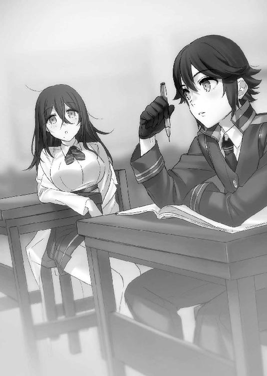
即答だった。普通なら笑うとこなのだろうが、斑鳩はその理由が気になった。
『どうして世界を変える必要があるの？』
『俺の使命だからだ』
『......あんたもしかして、思春期特有のアレ？』
『俺もお前と同じように、他に選択肢がなかっただけだ』
タケルは拳を握り、眉間に皺を寄せる。
『俺には、足搔く方法がこれしかないんだ』
『............』
『俺には救いたい奴がいる。そいつを救うには、世界を変えるしかないんだ』
『............』
『それしか、ないんだ』
タケルは真剣な顔で再びドリルに視線を落とす。
斑鳩は、机に頰杖をついて、タケルの顔をじっと見つめた。
まだ知り合って間もないけれど、彼は不器用で、がむしゃらで、真っ直ぐだ。
その真っ直ぐさの奥に、何か途方もない闇を抱えているのが斑鳩にはわかる。
まだ少年のくせに気を張って、いつもむっすりとした顔をしているが、この愚直さは見ていて心地がいい。
（こうしてみると、結構可愛い顔してるわよね）
斑鳩は、机に向かうタケルの前髪を指先で払って、その顔をしっかり見ようとする。
「......？」
（黒曜石みたいな瞳だわ。肌も綺麗）
タケルは鬱陶しそうに手を払いのけたが、斑鳩はニヤニヤしながらタケルのほっぺたをつまんだり、まつげを撫でようとしたり、眉間の皺を伸ばそうとしたりした。
挙げ句の果てにはほっぺたを舌で舐めようとまでしてきたせいで、さすがのタケルも飛び退いて距離を取った。
『っ、さっきから何してやがる......！』
『あんたに興味があるから、触診してるのよ。触ったりつまんだり舐めたりして、あんたのことを知ろうとしているの』
『なんだそりゃ......!?』
『？ いいじゃない、触るくらい。できれば服も脱いでほしいわね』
タケルはドン引きしながらさらに斑鳩から距離を取る。斑鳩は何故そんなに嫌がられるのか不思議そうにしながら、タケルのそばへ寄ろうとする。タケルは教室の中を逃げ回り、斑鳩は変態のように彼を追い回す。
しかし、斑鳩にはまったく悪気が無かった。興味のあるものは研究するという昔の習性を、そのまま他者へ向けているだけなのだ。
タケルも相当に不器用だが、この頃の斑鳩もかなりの不器用だったのである。他人への接し方がわからないという点では、タケル以上だった。
好意の向け方すら、お互いにわからなかったのである。
それから数日後のことだった。
二限目が終わった休み時間に、それは起こった。
パン、という乾いた音と共に、斑鳩の頰に痛みが襲った。
斑鳩は特にリアクションもせずに、赤くなった頰を摩る。
目の前には、顔を真っ赤にして怒りに燃える女生徒がいた。クラスで一番の成績優秀者で、女子の取り巻きを何人も連れた......いわゆるそういう女だった。
斑鳩が彼女に頰を引っぱたかれた理由は単純だ。
斑鳩が彼女を挑発したからだった。
優等生が斑鳩に話しかけてきたことが事の発端だった。恐らく、優等生は整備の成績が自分より上だった斑鳩に良くも悪くも興味を持ったのだろう。三ヶ月も経っているのに彼女の名前を知らなかった斑鳩の態度に顔を引きつらせていたが、簡単な自己紹介から入り、成績のこと、実家のこと、自分がいかに優秀かということを、これでもかというほど一方的に語ってきた。
彼女の名前は覚えていなかったが、斑鳩も彼女のことは知っていた。『俗物すぎて意外と面白い女だ』と思っていた。はなっからこちらと仲良くする気などさらさら無いのが目に見えていて、どれだけ自分が優秀なのかを誇示したいだけなのも見え見えだったが、斑鳩としては狡猾なくせに正直な人間は嫌いではない。斑鳩は自分の生い立ちについて本当のことを言うわけにもいかないので、適当に話をそらしつつもきちんと優等生の相手をしていた。
しかし、話の流れがタケルのことに変わったことで、斑鳩の彼女への評価が一変した。
『ところで、杉波さんは草薙君と仲がいいみたいだけど、どういう関係？』
『別に、ただのクラスメイトよ。まあ、話す機会は増えたわね』
『何を思ってあの子と付き合っているか知らないけど、友達を作るなら相手を考えた方がいいと思うよ』
『どういう意味かしら』
『だってあの子、野蛮でしょ。入学式の時のあの目......完全に異常者の目だもの。しかも刀なんか持ち歩いちゃって、絶対変人よ。どうしてこの学園に来たのかわからないぐらい馬鹿だし、偉そうだし、なんか気持ちが悪いわ』
『............』
『しかもなんか獣くさくない？ 彼がいるだけで野蛮人の臭いがクラスに充満しちゃって、吐きそうになるのよね』
脚を組んで完全に人のことを馬鹿にした口調で、優等生はタケルを鼻で笑う。
『杉波さん、あんな男と付き合うのはやめた方がいいよ。あなたにはもっと友人として相応しい相手がいると思うの』
なるほど、と斑鳩は思った。草薙タケルとの交友を断てばお前は自分の取り巻きになる資格がある、とこの女は言っているのだ。
斑鳩はにっこり微笑んだ。
怒りと苛立ちで笑顔が出てきたのは、生まれて初めての経験だった。
『──クソみたいな女ね』
『......え？』
いきなりのことに、優等生は顔を引きつらせた。斑鳩は薄目を開けて、自分の頭の中のデータベースから優等生の情報を引き出す。
名前は覚えていなくとも、彼女の情報を斑鳩は十二分に持っている。
クラスにいる生徒全員に聞こえるくらいの声量で、斑鳩は暴露し始めた。
『あんたが草薙を敵視する理由、知ってるわ。入学式の時にあいつをリンチしたリーダー、あんたの彼氏よね？』
『............』
『自分の男のために草薙をクラスで孤立させて笑いものにするなんて、ずいぶん彼氏にご執心じゃない。そのわりには、他にも男がいるみたいだけど。上級生に一人、同級生に二人......教師に一人かしら？ すごいわね、ついこの前まで小学生だったとは思えないわ。そのガバガバっぷりは尊敬に値するかも』
本当はもっと多いのだが、斑鳩は彼女の名誉のために控えめにしてあげた。
『御山の大将気取るのはいいけれど、ふんぞり返りたいなら実力で示した方がいいわよ。優等生を自分のグループに囲って頂点に居座っていたいんでしょう？ 教師とか男使って成績をキープするのにも限界があると思うわ。少しは自分でやらないと化けの皮が剝がれてしまうわよ？』
『............』
『あんたみたいな女をどう呼ぶか、お姉さんが教えてあげようか？』
斑鳩はぬうっと優等生に顔を近づけて、クスリと笑う。
『ア・バ・ズ・レ。いい言葉よね。あはは！ 外側全部ハリボテで、股ぐらにしか筋肉がついてない感じがとっても素敵！』
──そこで、我慢できずに優等生が斑鳩の頰を引っぱたいたのである。
斑鳩は叩かれたからといって反撃はしなかった。想定通りだ。この展開を求めていた。
しかし、何故このような挑発を行ったのかは、斑鳩自身よくわかっていなかった。
優等生がタケルのことを侮辱したことが、どうしてか妙に頭にきたのである。
まるで自分自身を侮辱されたようにも感じられたからだ。
クラス中の生徒が見守る中で恥をかかされた優等生は、肩を怒らせながら斑鳩を睨む。
『覚えてなさいよ......！』
実に悪役っぽい台詞の後に、斑鳩は苦笑を浮かべた。
『ごめんなさい。もう一回名前教えてくれるかしら。興味ないものって覚えられないのよね』
二発目が斑鳩の頰を襲う。
今度は避けた。
優等生はますます恥をかく。クラスメイト達がひそひそ話や嘲笑を浮かべながら、優等生を見ている。優等生は顔を真っ赤にして、逃げるように教室を出て行った。
＊＊＊
中等部時代の草薙タケルは、教室での騒動をドアの外で全て聞いていた。
杉波斑鳩が、クラスの優等生に頰を叩かれた。その理由が自分にあることを、タケルはきちんと理解していた。
あの優等生は、タケルが入学してからずっとちょっかいを出してくる男の横にいた女だ。
そういう女だ。この三ヶ月で、タケルも学んだ。毎日のように校舎裏へ呼び出され、同級生や上級生からリンチされていれば学びもする。
ああいう人間が次にどういう行動に出るのかということを、タケルは知っている。
しかしわからない。
何故杉波斑鳩は、あんな挑発じみたことを言ったのだろう。
斑鳩に名誉を守られなければならないような義理は、自分には無い。
無いはずだ。
しかし──
『............』
剣術以外のことで怒りを抱くことを禁じられていたタケルだったが、今回だけはその禁を破る決意をした。
借りは返さなければならない。それは草薙タケルとしてのプライドの問題だ。諸刃流の掟は関係ない。
タケルは刀の柄に指を触れさせると、教室には入らず踵を返した。
昼休みを待って、タケルは校舎裏で待ち伏せをしていた。
案の定、タケルの予想通り、その女は校舎裏へやってきた。男達も、後からぞろぞろとやってくる。男達は皆、腰に銃を装備している。中等部の子供達は銃の携帯を許されていないが、高等部に上がると小隊活動のために学内で麻酔弾を装塡させた銃の携帯許可が出る。
つまり優等生が呼び出したのは、高等部の生徒達だ。
茂みの陰に身を隠し、タケルは聞き耳を立てる。
会話は実に聞き取りやすかった上に、内容も予想通りだった。
優等生は高等部の男達を使って、杉波斑鳩を犯させようとしていた。「覚えておけ」という言葉を、有言実行するというわけだ。
タケルは鼻を鳴らして、刀に手をかける。
相手が銃を持っているというのは、タケルにとって好都合だった。
茂みから現れたタケルの姿に、優等生含め、五人の男達が睨みつけてくる。どの男も、小柄なタケルより一回りくらい大きい。その上銃を持っている。
だが、臆する必要性は皆無。こういう状況のために、タケルは諸刃流を身につけたのだから。銃に勝つために、地獄のような修行の日々に耐え続けてきたのだから。
むしろ、丁度いい。普通の人間相手に、銃相手にこの技を使うのはこれが初めてだ。
タケルは歪に笑いながら、腰から刀を引き抜く。
『草薙諸刃流皆伝、草薙哮──試し斬りさせてもらうぜ、ゲスども』
名乗りを上げて、切っ先をリーダー格の男へ。
怪訝そうにしながら、へらへらと笑いながら、男は銃口をタケルへ向け、引き金を絞る。
発射される麻酔弾。弾速は実弾とは比べものにならないほどに遅いだろう。
タケルは自分の中の異質な技を引きずり出す。
掃魔刀。草薙諸刃流がバケモノと相対するために編み出した、異形の剣術。脳内処理速度を引き上げ、超人的な反射神経、限界を超えた肉体駆動を可能とさせる禁断の技だ。
タケルの眼前に迫る麻酔弾が、斬り上げた刀身により目の前で真っ二つになる。
驚きに強ばる有象無象の顔を見て、タケルは再び歪に笑った。
『どうした......もっと撃ってこいよ......！ こんなんじゃ試し斬りにもなりゃしねぇ！ こねぇなら──こっちから征くぜ！』
タケルは地を蹴って、自分から五人へと突っ込んだ。
一斉に麻酔弾が放たれるも、タケルは全弾切り落としながら、スローになった世界で刀を振るう。刀は刃引きしてあるため肉を斬れはしないが、掃魔刀を発動させた状態で人体に攻撃を加えれば骨が折れるどころの話ではないだろう。
攻撃を当てる瞬間だけ掃魔刀を解除して、タケルは五人を一瞬で倒してしまった。
その光景を見て怯える優等生を他所に、タケルは自分の掌を見つめ、荒い息と共に拳を握る。
──行ける。俺は強い。銃にも勝てる。この力があれば、審問官になることなんて簡単だ。刀一本でいずれトップに立ってやる。
タケルは自信に満ちた表情で、肩に刀を担いだ。
そして、へたりこみそうになっている優等生に、指先をくいっと前後に動かしながら挑発してみせた。
『足りねぇ。追加呼んでこい。もっといるんだろ、御山の大将......！』
タケルの邪悪な笑みを見て、優等生は失禁しながら携帯電話を取りだし、喚び出せるだけの増援を校舎裏に呼び出したのだった。
この乱闘事件は、すぐに学園内で騒ぎになった。
しかし事件は『高等部の生徒と中等部の生徒の乱闘』として処理された。タケルの一方的な攻勢であったのは間違いないのだが、高等部の生徒を二〇人ほど伸した後にやってきた中等部の男子生徒達により、タケルはボッコボコにやられたのだ。
やられた理由は、中等部の生徒達が武器を持っていなかったからだ。丸腰の相手には刀を使わないというタケルのポリシーが災いし、肉弾戦のセンスが皆無なタケルは中等部の生徒達に袋にされてしまったのだった。
その後、結局高等部の生徒達は停学処分となり、首謀者である優等生は斑鳩が暴露したことが事実であることが露見してしまい、自主退学。タケルは今回の一件では被害者ということになり、三日間の謹慎だけで済むこととなった。
怪我の治療のために薬師病棟から出たタケルを待っていたのは、斑鳩だった。
ボコボコにやられて腫れてしまった顔を見て、斑鳩は笑いもせずに、タケルをじっと見つめた。
タケルは横目で斑鳩を睨みながら、腰の刀を軽く手で触れる。
『......借りは返したからな』
『？ あんたに貸しを作った覚えはないのだけれど』
『うるせぇ。お前がどう思おうが、俺が借りだと思ったものは借りなんだ』
『その自分勝手な理論は何なのかしら。まさかとは思っていたんだけど、もしかしてあの乱闘は私のため？』
顔を覗き込まれて、タケルは舌打ちをして目を逸らした。
『ちげぇよ。俺は自分の実力を確かめたかっただけだ。断じてお前のためなんかじゃない』
タケルはそう言って、さっさと歩いて行ってしまう。斑鳩はすぐにタケルに追いついて、真横を歩いた。
『ツンデレってもう流行ってないんだけど』
『殴るぞお前』
『にしたって、もっとやり方があったんじゃないかしら。あんたのせいで私の計画がパァよ』
『計画？』
腕時計型のデバイスを起動させて、斑鳩が立体ウィンドウに指を滑らせる。
そこには、優等生の情報だけでなく、タケルが伸した高等部の生徒達の情報がずらりと並んでいた。斑鳩はそれらの情報を見ながら、恍惚とした笑みを浮かべている。
『これがあればあんたの刀なんて必要なかったのよねぇ。ああいう優等生タイプの犯罪者予備軍共は社会的に追い詰めてやるのが一番効くのに、あんたが余計なことするから台無しになってしまったわ』
斑鳩の横顔を見て、朴念仁のタケルですら顔を引きつらせた。
『......お前、性格悪いよな』
『刀でボコボコにするような奴に言われたくないわ』
隣を歩く斑鳩は、ニヤニヤしながらタケルについてくる。どうやらもう興味津々で仕方がないという感じだった。
タケルはため息を吐きつつ、いつものように鋭く目を細める。
『お前、情報通なんだったら、一つ教えろ』
『あら？ また勝手に自分から借りを作るわけ？』
『っ、いいから教えろ』
偉そうな態度を不満に感じつつも、「何をよ」と斑鳩は尋ねた。
タケルは前を見据えたまま口元に笑みを作る。
『──同じ学年で一番強い奴を教えろ』
『？ そんなの知ってどうするのよ』
『お前には関係ない。教えろ』
タケルの要求を怪訝に思いながらも、斑鳩は窓の外を見た。
『最強ねぇ......それだったら、たぶんあの子よ』
斑鳩が顎を向けたのを見て、タケルも同じように窓の外を見た。
中庭で昼食を食べている生徒達の中を通り過ぎていく一人の少女。夕焼け色の髪を揺らしながら、タケルに勝るとも劣らない鋭い目で、前だけを見ながら歩いている。
『鳳桜花。学年で一番成績がよくて、実技の方も超人的。おまけに理事長の娘らしいわよ』
『......鳳、桜花......』
タケルは刀の柄を強く握り締めて、牙を覗かせながら笑う。
──あいつを倒して俺が一番になれば、目標に一歩近づく。
組織のトップ＝組織で一番強い奴という単純な思考回路から導き出された答えがそれだった。斑鳩はタケルの思考が読めたのか、横でクスクスと笑っている。
しかしこの頃のタケルは、本気でそれが正しいと思っていた。
二年生に上がってすぐに、鳳桜花と相対するまでは──。
＊＊＊
──過去のタケルについてを話し終えた斑鳩は、ミントキャンディーを口に咥えて肩をすくめた。
「ね？ 本質は全然変わってないでしょ？」
「確かにそうですけど、今の草薙からは想像もつきませんわね......確かに痛い子ですわ」
紅茶を飲みつつうさぎが苦笑していると、真横からマリがテーブルに手をついて、涎を垂らしながら身体を乗り出してくる。
「タケルって今も童顔ではあるけど、昔はもっと可愛かったんだ！ ねねっ、写真とかないの!? 家宝にするから譲ってちょうだい！」
「貴様、今の話を聞いて真っ先に気になったのはそこなのか......!?」
「いいじゃん！ あんただってどーせ気になってるんでしょ！」
マリに指さされて、桜花は顔を背けてたじろいだ。
「うっ......わ、私は、そんな不純な感情を抱いていたりはしないっ。ただまあ、昔の写真を見れば、草薙のことを何か......お、思い出すかもしれんな？」
「わたくしもできれば見てみたいですわ～」
うさぎも真横の斑鳩にねだるような声で言った。
斑鳩はソファで脚を組みながら、両手を上げて再び肩をすくめる。
「そんなものあるわけないでしょう？ コスプレもしてないのに草薙の写真なんて撮ってるわけないじゃない」
その言葉は欲望に忠実で、斑鳩が言うと妙に説得力があった。
三人はかなりがっかりした顔でソファに座り直し、何故タケルが今の性格に落ち着いたのかを話し合い始めた。
本当のところ、タケルが変わった理由など、斑鳩はもちろん知っている。
「............」
桜花の顔を見ながら、斑鳩は思いにふける。彼女に敗北したあの日、タケルは自分が抱えている問題や、妹のことを斑鳩に話した。
きっとあれは現実に打ちひしがれて、弱ったところに斑鳩がいたから話しただけだ。斑鳩は、タケルが自分を変える切っ掛けになった桜花に対して特別な感情を抱いていることに気づいていた。
そこに自分が少なからず嫉妬の念を抱いていることにも、気づいている。
でも、それでも──
「............」
斑鳩はポケットから携帯を取り出し、一枚の写真を表示させる。
そこには、斑鳩が無理矢理タケルと肩を組み、上から携帯のカメラで撮った写真が写し出されていた。
中等部時代の写真だった。
タケルは心底嫌そうにそっぽを向き、斑鳩はミントキャンディーを咥えて、楽しそうにウィンクをしている。
懐かしさに笑みをこぼしながら、斑鳩はその写真を愛おしそうに見つめる。
タケルは変わってしまった。その変わった切っ掛けは自分ではないけれど、変わる前のタケルを知っているのは、この小隊で自分だけだ。
あの頃のタケルが自分だけのものだと思うと、少しだけ優越感があった。
自分にも独占欲があるのだと、意外な発見に斑鳩は苦笑する。
斑鳩にとって、草薙タケルという人間は初めて興味を抱いた他人なのだ。家族である伊砂とは違い、赤の他人という意味で、初めての相手なのだ。
その興味が、異性としての好意に変化していたことに気づいたのは、つい最近のことだ。
だから、斑鳩は少し惜しいと思う。あの頃の自分がもっと早く好意に気づいていれば、この小隊のライバル達が現れる前に関係を深めていれば......。
（惜しいわよねぇ......）
あの頃のタケルも、自分と同じだったのだと斑鳩は確信している。
タケルにとっても、斑鳩は初めてまともにコミュニケーションを取った相手だったのだろう。
言ってしまえば、両想いだったのだ。
（あの時、さっさと喰ってしまえばよかったわ）
下品な思考と共に、斑鳩は写真のタケルの顔を指で撫でる。
（あんなこと言わなければよかったわねぇ......そうすれば、草薙は完全に私のものだったのに）
傷心のタケルに言った自分の一言を少しだけ後悔しながら、斑鳩はうさぎのいれてくれた紅茶を口に運んだ。
＊＊＊
一八小隊の部屋の扉を閉めて、タケルは深くため息を吐いた。
別にタケルは彼女らに謝罪をするためにここへやってきたのではない。共同で任務に当たるための打診をしにきたのだ。
あの女隊長のようなプライドの高い相手との交渉は厄介なのだが、今回はそのプライドの高さが同盟を組むにあたり有効に作用してくれた。
一八小隊の隊長はそれほど話のわからない人間ではなかった。
手を先に出したのは自分だ。その上関係の無い草薙タケルを殴ってしまった。今回の責任は自分にある。共同で任務を行う提案を受け入れる。
一八小隊の女隊長はバツが悪そうな顔でそう言った。どうやら元々同盟を組んで任務に当たるための相談にきたらしいのだが、あの場に鳳桜花がいたせいで話がこじれたらしい。他の隊員の話では、女隊長は鳳桜花に一方的なライバル心を抱いており、彼女がいたせいで横暴な態度に出てしまった、とのことだった。
（ともあれ......これでなんとか共同任務に持ち込めた。一発殴られるくらい安いもんだ）
タケルは大きく伸びをして、自分達の小隊室へ戻るために廊下を歩く。
（そういえば、中等部時代にも似たようなことがあったな......あの時は杉波と、名前覚えてねぇけど同じクラスの女子で......）
過去の自分がやったことを思い出して、タケルは顔を引きつらせた。
頰を指で搔きながら、昔の自分のことを恥ずかしく思う。
そして同時に、過去の自分のことを少しだけ羨ましく思っている自分が、もっと恥ずかしかった。
「......馬鹿だったなぁ、昔の俺......」
タケルは肩を落としつつ、とぼとぼと廊下を歩く。
（俺が変わった切っ掛けは、中等部二年のデスマッチか......）
桜花に敗北したのを切っ掛けに、タケルは変わった。
つまり自分を変えたのは、間接的にとはいえ、桜花なのである。
（でも......よくよく考えると......）
廊下の天井を見上げて思い浮かんだ顔は、桜花ではなく斑鳩だった。
（決定的だったのは、あいつの一言だったんだよな......）
その時のことを思い出して、タケルはくすりと小さく笑った。
＊＊＊
タケルは斑鳩のおかげもあり、無事中等部の二年生に上がることができた。一般校とさほど変わらない学業を行っていた一学年とは違い、二年生になると本格的な訓練が始まる。
ところが、タケルのクラスの集団訓練の際、どういうわけか理事長が見学にやってきて、こんなことを言い出したのである。
『──今からちょっと皆さんに殺し合いのようなものをしてもらいます』
対魔導学園理事長、鳳颯月のその一言で、タケルの血は沸いた。
こういうのを待っていた──タケルは歓喜に震えていた。
クラスメイトが二〇対二〇で分かれて行われるチームデスマッチ。学園の裏、禁忌区域へと繫がる桜の森で、それは行われた。
打ち合わせや作戦会議の時間などは設けられなかった。適当に二〇対二〇に分かれ、自分の使用する武器を選択する。武器はペイント弾が装塡された銃器ならば、二つまで何でも使用可能だった。
生徒達はおどおどしながらも自分の武器を選び、二チームに分かれた。
颯月がニコニコしながらスターターピストルを空へ向ける。
生徒達がどよめく中で、一人の男子が声を上げた。
『ちょ、ちょっと待ってください！ ......味方を識別する腕章とかは......？』
『？ そんなものは無いよ』
『え？』
『君達は互いを守り合うチームなんだから、顔くらい覚えたまえよ』
生徒達がお互いの顔を見合わせるが、颯月はさっさとスターターピストルのトリガーに指をかけた。
『それじゃあ始めてくれたまえ。よーい......』
ドン！ 乾いた空砲が高らかに鳴り響く。
しかし、その場にいた生徒達は誰一人として動かなかった。
どうしたらいいかわからなかったのだ。
『......？ どうした？ 始めたまえよ』
颯月は肩をすくめて笑う。
『いいかい諸君、これは君達にこの学園がどういう場所かを知ってもらうための催しなんだ。この中でいったい何人が高等部に上がり、何人が異端審問官になり、何人が実戦に出て、何人が生き残れると思う？』
生徒達は息を吞み、颯月の猫のように裂けた口が弧を描くのを見ていた。
『──ここで生き残れないような奴が、審問官になって生き残れると思うかい？』
その一言で、最初の銃声が鳴り響いた。
一人の生徒が倒れて、地面に蹲る。弾はペイント弾のはずなのに、倒れた生徒はアバラを押さえながら、声も出せずに青い顔で震えていた。
颯月はぽんと両手を合わせて、にっこりと微笑む。
『ああ、言い忘れていたけど、ペイント弾と言えども火薬量は実銃に近くなっているから、まあ当たったら骨折くらいは覚悟しておきたまえ』
その瞬間、引きつったような声と共に連続して銃声が轟いた。銃声は波紋のように広がり、いたるところで悲鳴が響く。
生徒達は文字通り、殺し合いごっこを開始した。
互いに恐怖と憎しみをもって銃を撃ち合う生徒達を、タケルは木の上から眺めていた。開始五分前にすでにタケルはこの位置についていた。
こうなることはデスマッチと聞いた時点から予測済みだった。
錯乱した生徒達はでたらめに敵味方関係なく銃を乱射し、殺し合っている。
口頭で二〇対二〇のチームデスマッチと説明されたのに、敵味方を判別するための腕章や鉢巻を渡されるようなことはなかったし、準備時間が五分しかなかったことを考えると、理事長はこういう状況になることを期待していたのだろう。
あえてチームデスマッチという形を取って、敵味方の識別ができないようにしたのは、生徒達の疑心暗鬼を煽るためだ。こんな曖昧な状況で、冷静な敵味方の判別など不可能。一発目の銃声が響いた時から形だけでしかない『チーム』なんてものは容易く崩れ去った。
重要なのは状況の把握である。
チームで敵味方が分かれていても、この状況では全員が敵と判断した方がいい。
目的は敵を数多く倒すことではなく、生き残ることだ。無用な戦いを避け、この乱戦が落ち着くのを待つ。
流れ弾なんていちいち避けていられない。
数が減った時にこそ、タケルは動く。
狙うのは──この状況で冷静に動いている奴だけだ。
（手練れは......どいつだ）
目を細めながら、木の枝に梟のようにとまりながら、目を凝らす。
一分も経たないうちに数は半分以下になった。タケル同様に最初から臨戦態勢に入っていた生徒は何人かいた。戦い慣れているというよりは、他の連中よりも少しだけ冷静で頭のキレる連中だ。
銃声が散発的になり、次第に場が静まりかえっていく。
タケルは意識を集中して、聴覚と視覚にのみ神経を研ぎ澄ませる。
──敵か味方かはわからないが、こっちを見ている奴がいる。衣擦れと草木がこすれる音が聞こえる。
薄闇の中で、銃口が光る。
「バレてんだよ」
タケルはニヤリと笑って、木の枝を足で思い切り蹴った。
木の上から跳躍し、ターゲットを捕捉して一気に間合いを詰める。
「──なっ！」
隠れてタケルを狙っていた生徒が、驚いて茂みから顔を出した。
着地と同時に地面を蹴って、さらに間合いを詰める。
三〇メートルは離れていたはずなのに、タケルは一瞬で自分を狙った生徒の懐に潜り込んだ。
敵の武器は狙撃銃。銃身の長い狙撃銃で、この間合いには対処できない。
慌ててホルスターからハンドガンを引き抜こうとするが、もう遅い。
「草薙真明流──狼ノ太刀！」
のど笛に嚙みつく狼の如き一撃が、生徒の顎下に炸裂する。
柔らかい樹脂ナイフといっても、この速度で繰り出された斬撃を喉にもらえばパニックを起こす。首を押さえながら、生徒が膝をつく。騒がれてはかなわないので、そのまま後頭部にもう一撃加えて気絶させた。
タケルは身をかがめ、すぐに移動を開始。音を立てずに獣のように茂みを進み、再び木に登って息を潜める。ますます数が減り、銃声が一つも聞こえなくなる。
残りは恐らく七人。敵か味方かなんて関係ない。
（全員敵だ......俺が生き残れば、俺の勝ちだ）
残り七人は、各チームで動いているはずだ。戦闘開始までのあの短時間でチームを組めた者はそう多くないが、この状況を予測して動いた連中は確かにいる。
だが身を潜めるやり方はまるでなっていない。木の上で待ち構えていれば、両チームの動きは手に取るようにわかった。幼い頃から野山をかけずり回り、獣を狩っていたタケルからしてみれば位置を探ることなど朝飯前だった。
両チームとも三人一組で動いている。残りの一人は単独行動をしている......恐らく、奴だ。
タケルは嬉しそうに口角を歪めて、ナイフを握り返す。
（まどろっこしいのはやめだ──雑魚はまとめて片づける！）
背の高い茂みの中をゆっくりと進む両チームが鉢合わせしそうになったところで、タケルは木から飛び降りた。
着地点は右からやってきたチームの真上。
まずは一人目の脳天へ蹴りをかましてそのまま斬り伏せる。
驚いて振り返ろうとした二人だったが、タケルは着地と同時に足のバネで跳躍し、飛びかかる。
頭を横殴りにナイフで斬り裂き、倒れようとするその身体を足場にして、すでにこちらに銃を向けていたもう一人へ襲いかかる。
だが、一瞬だけ相手の動きの方が早い。
ライフルのトリガーが引かれて、ペイント弾が放たれる。
「──掃魔刀」
タケルは脳内処理速度を加速。連射されるペイント弾の内二発を斬り落とし、突貫。相手の生徒の狙いは定まっておらず、でたらめにライフルを乱射しているだけだ。
これではまともに当てることなどできない。
「はは──ははははッ！」
笑いながら、タケルは生徒の胸をナイフで突いた。連続で、蜂のように、容赦なく。
生徒は蹲り、動けなくなった。
だがまだ止まるわけにはいかない。
掃魔刀を発動させたまま、残りの三人を始末しなければならないからだ。
肉体の限界は近かった。骨は無事だが、手足の筋肉の消耗はかなりヤバい。しかしアドレナリンとエンドルフィンが噴き出した状況にあるタケルの頭では、肉体の消耗など考えられなかった。
タケルは自分の力をフルに発揮できるこの状況を楽しんでいた。今までの鬱憤を晴らす時がきたことが、嬉しくてたまらない。
──剣術のすごさを思い知らせてやる。
鬼と化したタケルは、音を聞きつけてこちらへ接近してくる三人へ突撃を開始しようとした。
だが──その時、三発の銃声と、三人の悲鳴が響いた。
腰を低くかがめて突撃を開始しようとしていたタケルは、茂みからゆっくりと身体を起こして、姿を晒す。
一〇メートルほど離れた場所で、三人の生徒が蹲っている。
そして中心に──そいつは涼しい顔で立っていた。
夕焼け色の髪を手で払って、拳銃のマガジンを装塡しながら、少女は冷ややかにタケルを見ていた。
「鳳桜花......」
タケルはさらなる歓喜に打ち震えた。
中等部二年に上がって、同じクラスになったことは確認済みだった。
同学年で最強の生徒。鳳桜花。誰ともまともに会話しようとしないその姿勢は、一匹狼として学年では有名だった。
その孤高さに見合う実力があるかどうか──ここで確かめる。
「お前が最後か......」
「............」
桜花は答えない。答えずに、静かにこちらへ銃口を向けてくる。
タケルもナイフを構え、刃を鈍く光らせた。
「──女だろうが、俺は容赦しねぇぞッ！」
タケルが地を蹴ると同時に、桜花も弾丸を放つ。
掃魔刀を発動させて、タケルはその一発を叩き落とした。
桜花が、わずかに目を細める。
続けてペイント弾を三発、タケルへ放った。
「効くか、んなもんッッ！」
ペイント弾を斬り落としながら、タケルは桜花に急接近。
桜花は横へ走りながら逃げようとする。
「おせぇ！」
がら空きの懐へ身体を滑り込ませた。たとえ小回りの利く拳銃であろうと、今のタケルのスピードに桜花は追いつけない。
異質なものを感じ取ったのか、バックステップで距離を取ろうとしていたのはさすがだが、人間の動きで掃魔刀からの一撃を避けることは不可能だ。
桜花は防御のつもりか、顔付近で腕をクロスさせているが、無駄なことだ。
──取った！
確信に笑みを浮かべようとした、その時だった。
キンッ、と、足下で何かが引き抜かれる音がした。
「!?」
咄嗟に視線を足下へ移すと、糸のようなものでくくりつけられたピンが宙を舞っていた。
トラップ。桜花はあらかじめタケルが突っ込んでくることを予測して、わざわざこの位置まで誘い込んだのだ。
あの一瞬で。仕掛けておいたトラップの位置へ。
タケルは攻撃を中断し、慌てて目元を手で覆った。
直後、凄まじい炸裂音と光が周囲を覆った。
「くっ......！」
スタングレネード。辛うじて目を守ることはできたが、聴覚は完全に死んだ。
（......まずい......っ！）
一瞬タケルの動きが止まったところで、桜花が畳みかけるように銃を連射してくる。
タケルはすぐさまその場から飛び退いて、木の幹に身体を隠した。
深く息を吐いて、タケルは自分の身体を確認する。
ペイント弾はくらっていないが、頭が冷えたせいか自分の身体が悲鳴を上げていることを思い知る。
おまけに聴覚が死んでいるせいで、完全に平衡感覚を失ってしまっていた。掃魔刀を酷使したせいで頭痛も酷い。
この状況でまともに掃魔刀を使うのは難しい。
タケルは拳を握って、木の幹を叩いた。
「......くそっ......！」
木の幹から少しだけ顔を出して桜花の姿を確認しようとするも、すぐさまペイント弾が撃ち込まれる。一瞬見えた桜花は、耳栓を外しながらゆっくりとタケルの方へ歩いてきていた。
（いちかばちかで、掃魔刀を使って突っ込む......もうこれしかねぇ......！）
焦ったタケルにまともな作戦など思いつかなかった。
負けたくないという想いだけが頭の中をぐるぐると回る。
（負けねぇ！ 負けてたまるか！ こんなところでっ......！ 俺は審問会のトップに立つんだ！ あいつの......キセキのために......俺は───ッ！）
タケルが全身に力をため込み、木の幹から飛びだそうとする。
桜花もそれを読んでいたのか、足を止めて正確な構えでタケルを狙う。
しかし、不意に桜花の視線がタケルから横の茂みへ移った。
表情にわずかな焦り。照準がタケルから外れて、茂みの方へ。
続いて銃声。桜花のものではない。
茂みから放たれたペイント弾を桜花がギリギリで躱し、茂みへ拳銃の弾を全弾叩き込む。
「いったぁっ！ いたたたた......！」
茂みの中から悲鳴が聞こえて、白い何かが翻る。
白衣だ。そんなものを身に纏っているのは一人しかいない。タケルともあろうものがまったく気づかなかったが、斑鳩が茂みからこちらを窺っていたのだ。
──好機。桜花はハンドガンの弾を撃ち尽くした。リロードまでは無防備。
「うおおおおおおおおおおおおッ！」
タケルは幹から姿を現し、桜花へと突撃した。
今のタケルには突っ込む以外に戦う術はないが、桜花も拳銃を使用できない。
桜花は茂みに注意を向けたままで、こちらを向いてすらいない。
これで本当に俺の勝ちだ！
タケルは獣のように桜花へ襲いかかった。
──その愚直な猛進が、仇となった。
桜花はタケルの動きを読んでいた。タケルが突っ込んでくる方向へ向けて、振り向きざまに肘を突き出す。派手な動きではなかった。タケルが突っ込んでくる位置に狙いを定めて、肘を向けただけだ。
カウンター。相手の速度が速ければ速いほど、相手の動きが大きければ大きいほど威力が増す単純な攻撃手段。タケルはまんまと、それにはまった。
まともに狙いを定められなかったナイフが空を突き、すれ違いざまに桜花の肘が顔面に炸裂する。
鼻と眉間に肘が食い込み、タケルは後頭部から地面に思い切りすっころんだ。
いつの間にか空を見上げていた自分に困惑しながら、タケルはヒューヒューと苦しげに息を吸う。
何が起こった？ 何をされた？ 何故俺が、地面に倒されているんだ？
状況がのみ込めないまま、ひしゃげた鼻と折れた歯の隙間から血を噴き出す。
視界に桜花が映り込む。
桜花は静かにハンドガンのマガジンをリロードしていた。
スライドを引いて、装弾される。
タケルは死に物狂いで地面を転がって桜花から距離を取り、ふらふらと立ち上がった。
「おでは......まだ......だだがえる......おではまだ......まげでない......」
朦朧とする意識で、戦う意志だけで、タケルはナイフを構える。
桜花はそんなタケルを冷ややかに見つめる。
タケルは千鳥足で、桜花へ向けてナイフを振り下ろす。
「............」
桜花はため息を吐き、身体をわずかに反らせただけでその一撃を回避。
「まげでない......まだだ......ががっでごい......」
よろめいたままの姿勢からでたらめにナイフを振るうが、桜花に届くわけがなかった。
桜花の視線は変わらず冷ややかだ。そこには同情もなければ、健闘を称えるような感情も窺えない。
「ばがに......じやがっで......ぢぐじょう......っ、ぢぐじょう......！」
「............」
「おでには、ごれじが......ねぇん──」
そこまでだった。
桜花はタケルが言葉を言い終える前に、猛烈な連撃をタケルへ浴びせた。
容赦の欠片もなかった。
桜花はタケルの腹に膝蹴りを加え、くの字に折れたタケルの背に肘を振り下ろし、膝をついたタケルの顎を蹴り上げ、跳ね上がったタケルの脳天へ、踵落としをお見舞いした。
膝をつき、タケルはついに仰向けに倒れた。
──俺、負けたのか......？
倒れたまま呆然と空を見上げていると、タケルは信じられないものを見た。
目を疑うほど、美しかった。
闇の中であってもなお輝く、夕焼け色の髪とコバルトブルーの瞳。まるで神話に出てくる戦乙女をそのまま具現化したかのような、美しい少女がこちらを見下ろしていた。
負けたことの悔しさも、自分が学園に入学した動機も、なにもかも吹き飛ぶ。
少女は銃口を突きつけたまま、真っ直ぐにタケルを見下ろしていた。
「私の勝ちだ」
敗北を、突きつけられる。
強者がどちらかを決定される。
お前は私よりも弱い。お前より強い奴は世界中にたくさんいる。自分の力の無さを思い知れ。世界を変えることなんて、お前にはできない。
「............」
負けたのだ。
その事実だけが、タケルを打ちのめす。
受け入れたくないという気持ちなど、抱きようがなかった。強者の証と言わんばかりのこの美しさを前にして、タケルは敗北を受け入れるしかなかった。
一筋の涙が、タケルの頰を伝う。
心が折れる音と、夢が砕ける音を......タケルはこの時、初めて耳にした。
タケルは桜花に完膚なきまでに敗北した。
必勝の一手である掃魔刀を使用しても、桜花は動揺することなく冷静にタケルの弱点を見抜き、そこを突いてきた。
文句の言い様がない敗北だ。自分の目的を果たすための道のりがどれだけ険しいのかを思い知った。剣術の力にうぬぼれていたと言っていい。
そのプライドを打ち砕かれ、自信をなくしたタケルは、妹のキセキに会いに行った。
『──学校の方は順調だぜ。剣術がすげぇってこと、世間もわかってくれてさ。成績はそんなよくねぇけど、俺には剣があるから、たいした問題じゃねぇよ』
無理して明るい声を出しながら、タケルは近況をキセキに語る。
キセキは視線をタケルから逸らしたまま、無表情に黙り込んでいる。
審問会に捕縛され、禁忌区域に連れてこられてから、キセキは一度もタケルと言葉を交わしてくれなかった。いくらタケルが話しかけても、無視するばかりだ。
『兄ちゃん、これからもっともっとがんばるからさ』
何故こんな噓を吐いているのか、タケルは自分がわからなかった。
『たとえ万が一負けたとしても、何度でも立ち上がるからさ......』
たぶんタケルは、キセキにこう言って欲しかったのだ。
──諦めないで、と。
──お兄ちゃんは強い、と。
──お兄ちゃんならきっとできる、と。
『いつか俺が審問会のトップになって世界を変えて、キセキが普通の生活を送れるようにしてみせる。それまでは辛い思いをさせるかもしんねぇけど、俺がぜってぇ成し遂げてみせるからさっ』
『............』
『安心しろ、キセキ。俺はお前を必ず救い出してみせる。それだけが俺の生きる意味だから──』
だが、タケルが求めていた言葉は得られなかった。
キセキは真っ直ぐにタケルを見ながら、こう言った。
『お兄ちゃんは、キセキの心がわからないんだね』
『............え......？』
久しぶりに聞いた妹の声は、ひどく冷たいものだった。
『お兄ちゃんは、人の心がわからないんだよ』
『キ、キセキ......兄ちゃんは、ちゃんとお前のこと──』
『──キセキを救うって、どういうことかわかってる？ 人を救うって、どういうことかわかってる？』
『............』
『わかってないよね？』
キセキは怒ったような、泣きそうな顔でそう言って俯いた。
膝の上で拳を握って、キセキは切実な願いを口にしようとする。
『......本当に、キセキのことを救いたいと思ってるなら......そう思ってくれているなら......お兄ちゃんはキセキを──』
そこで、面会終了を知らせるブザーが鳴った。
キセキの部屋の照明が落ち、何も見えなくなる。
呆然とするタケルに、キセキは闇の中から最後に念を押すようにこう言った。
『......お兄ちゃんは......人の心がわからないんだよ......』
タケルは瞳を揺らしながら、審問官に引きずり出されるまで、面会室から動くことができなかった。
桜花に敗北し、キセキにも拒絶されたタケルは、雨の中の校舎を彷徨っていた。
行く当てもなく、おぼつかない足取りで校舎裏までやってきたタケルは、壁に背を預けてずるずると地面に腰を下ろした。
曇天の空から降り注ぐ雨が、タケルから体温を奪っていく。
『......風邪引くわよ』
傷心のタケルが一人校舎裏で雨に打たれていたところへやってきたのは、斑鳩だった。
斑鳩はタケルのそばに寄り、濡れるのも構わず隣に座った。
『............』
『............』
肩を寄せ合い、二人は地べたに座っていた。
斑鳩は何も言わずに、冷たくなったタケルの身体を少しでも温めようと、肩を寄せている。
その温もりに、タケルは甘えてしまった。
『......全部......駄目になっちまった......』
『............』
『もう俺は......何を目指して生きればいいのか......わからなくなっちまった......』
タケルは自分の口から、草薙家のことや、妹のことを斑鳩に話した。
完全に弱音だった。唯一の肉親であるキセキに拒絶されたタケルは、きっと自分以外の誰かに慰めてほしかったのだろう。
斑鳩は黙って聞いてくれた。
『......どうすりゃいい......？』
『............』
『俺はこれから......どう生きればいい......？』
タケルの縋りつくような問いに、斑鳩は答えをくれた。
『世界を変える前に──あんたが変わればいいんじゃない？』
『俺が......変わる......？』
『たぶん妹は、あんたが世界を変えるなんてこと望んでいないんじゃないかしら。妹はきっと自分の気持ちをあんたにわかってほしいだけなのよ』
『............』
『人の心がわからないなら、わかるように努力すればいいじゃない』
雨粒が降り注ぐ空を見上げながら、斑鳩は言った。
『変われんのかよ......俺なんかが』
『さあ？ 私は変わるつもりなんてないけど、何事もやってみなければわからないっていうし』
『昔っから人が何考えてんのかとか、よくわかんねぇんだ......よくわかんねぇから......自分を押し通すことしかできねぇんだ......』
『怖いから？』
『......そうかもしれねぇ』
『少しだけわかるかも。理解できないものって、とても恐ろしい。でも逆に、面白いとも思うわ。私はそう思ったから、外の世界へ飛び出したんだもの』
斑鳩はタケルの心を読み取って、静かに言った。
そして、こう続ける。
『もし、一人で変わるのが怖いなら......私がそばにいてあげよっか』
『............』
『いつもみたいに、あんたががんばってる横で、独り言を呟いていてあげるわよ』
斑鳩はそう言うと、タケルの肩に手を回した。
『嫌なら......別に......いいけれど』
タケルはうつむきながら、その手に自分の手を重ねる。
冷たい雨が降りしきる中でお互いの体温だけが、ただただ温かかった。
タケルの心が、ほんの少しだけ救われる。今まで歩んできた道からは逸れるかもしれないが、やってみようという気持ちが少しだけ湧いてくる。
一人ではないということがどれほど心強いかを、タケルはこの時初めて知った。
タケルは自分の素直な気持ちをそのまま斑鳩へ伝える。
これ以外に、言葉は見つからなかった。
『......ありがとう』
『............うん』
タケルは斑鳩と知り合って一年以上が経っていた。
今まで散々助けられてきたけれど、タケルがその一言を斑鳩に伝えたのは、これが初めてだった。
──タケルが他人を理解するように努めるようになったのは、この時からだった。
たくさんの本を読み、不器用ながらも他人の真似をして、いい人間になろうという努力をしてきた。
そしてそばにはいつも斑鳩がいた。彼女は変わろうとするタケルに助言したりすることは一切なかった。ただそばにいただけだ。
それでも、タケルにとって斑鳩は唯一の友人だった。
とても尊い存在だった。
かつても、今も、そしてこれからも──。
＊＊＊
三五小隊室に戻ってきたタケルは、ドアノブを握りながら斑鳩との思い出を思い出しながら、少し鼓動が高鳴るのを感じていた。
妙なことを思い出してしまった。
これではまともに斑鳩の顔を見ることができなそうだった。
（......俺って、あいつにいくら感謝しても足りないんじゃないか......？）
というか、あれだけのことをしてもらっておいてありがとうだけで済ませるのは、果たして男としてどうなのだろう？
あの頃はまだ精神的に未熟というか、男としてはガキもいいところだった。
もしも今、斑鳩にあの時と同じことをされたら、どうだろう？
あの雨の中で手を握られたら、どうだろう？
「............（ゴクリ）」
タケルは喉を鳴らしながら、ガチャリと小隊室のドアを開けた。
いつものようにソファに仲間達が座っている。
仲間達が振り向いて、「おかえり」と言ってくる。
タケルは「ただいま」と返しつつ、ちらりと斑鳩を見た。
携帯を見ていた斑鳩はタケルの視線に気づき、顔を上げる。
まずい。あんなことを思い出してしまったせいで、どういう顔をして斑鳩を見ればいいのかわからない。
タケルは自分の顔が赤くなっていくのを感じて、目を逸らそうとした。
だが、その時──
「......っ」
──斑鳩が先に、タケルから目を逸らした。さらにはほんのりと頰を赤く染めている。本気で恥ずかしそうに、まるで、不意打ちだったとでも言うように。
「ふぇっ......？」
タケルは、思わず驚いて変な声を出してしまうのだった。
あとがき
祝！ 初短編集！
一一巻のあの引きで短編集かよ！ という気がしないでもないですが、どうかご了承くださいませ。さて、本巻はアナザーミッションとあるように、外伝、つまり対魔導学園本編の裏側で起こっていたハードな事件の数々を──とかそういうお話ではありません。
『あなざー☆みっしょん』ならしっくりくる気がします。
本巻はドラゴンマガジンにて連載されていた、雑魚小隊の日常を描く短編集となっております。日常７、シリアス３？ くらいの割合でしょうか。本編ではキャラクター達のプライベートな部分にほとんど触れていませんでしたが、今回はプライベートな部分を重点的に描いている形です。プライベートな部分、おっぱいのことですね。
それでは、各話についてちょっと解説を。
『桜花教官の強化合宿』
対魔が新作として発表された時に、本当はもう一本桜花のお話があったのですが、連載という形ではこのお話が最初になりますね。基本だらけている三五小隊のメンバーを桜花が叩き直す話です。八〇年代のアクション映画のオマージュがいくつか。
『第三五酔いどれ小隊』
普段から酔っ払っているような感じの子達が酔っ払っちゃう話です。酔っ払うと言っても本当にお酒を飲んでいるわけではありませんが、酔うと人が変わる子って多いですよね。そんな二面性のお話です。これは書いていてすごい楽しかったですね～。特に桜花の酔い方が好きです。
『a day in the park』
マリの子供時代のお話と、今現在のマリを主体にしたシリアスめなお話でした。
地味なお話なんですが、こちらも気に入ってます。本編では、彼女についての過去をあまり掘り下げられなかったので、補足といってはなんですが、短編で描かせていただきました。悲しい思い出よりも、楽しい思い出の方が涙が出てくるというのは、きっと共感していただけるのではないでしょうか。
『クレイジーサマータイム』
水着！ このシリーズ、実は水着ってあんまり出てきてなかったんですよね。いっぱいおっぱい書けて幸せでした。あと個人的に、タケルが魔女狩り化して沈んでいくシーンが気に入ってます。
『プロトタイプはダテじゃない』
個人的に懐かしいタイトルですね。あの頃から成長は......したのかなぁ。とりあえず心は鋼になりましたね。そういえば、操縦するロボットを書いたのはこれが初めてかも？ 一巻のドラグーンは操縦してるところは書いてませんしね。
『Stand by Me』
書き下ろしです。中等部時代のタケルをメインに書きました。性格が変わる前のタケルって、結構謎に包まれていたと思うんですよ。性格が変わる切っ掛けとか、どんだけアホで厄介な子だったかとか、詳しく描けているのではないかと。ただ、ちょっと京夜と被るんですよね。京夜も出そうと思ったんですが、尺の都合と唐突感のせいでカットになりました。どこまでかませなんだ......！
以上、六本でお送りしました。楽しんでいただけたのなら幸いです。
そして現在、アニメ絶賛放映中です！
アクションシーン、かっこいいぜぇ！ ぜひご覧になってくださいね！
では謝辞を。短編集のおかげかいつもよりは多少ご迷惑をおかけせずに済んだ担当Ｋ様。そして相変わらず時間無くてご迷惑かけっぱなしのイラストレーターの切符様。コミカライズを担当してくださっている安村洋平様（お会いできてよかった！ 一番硬派でかっこいい三五小隊を描いてくださっています！）。ファンタジア文庫編集部の皆様。アニメスタッフ、及びＫＡＤＯＫＡＷＡの皆々様。そしてこの本を手にとってくださった全ての方へ、感謝を。
次巻！ 激戦も激戦だぜぇ？ 盛り上がるぜぇ？ よろしくどうぞ！
柳実冬貴
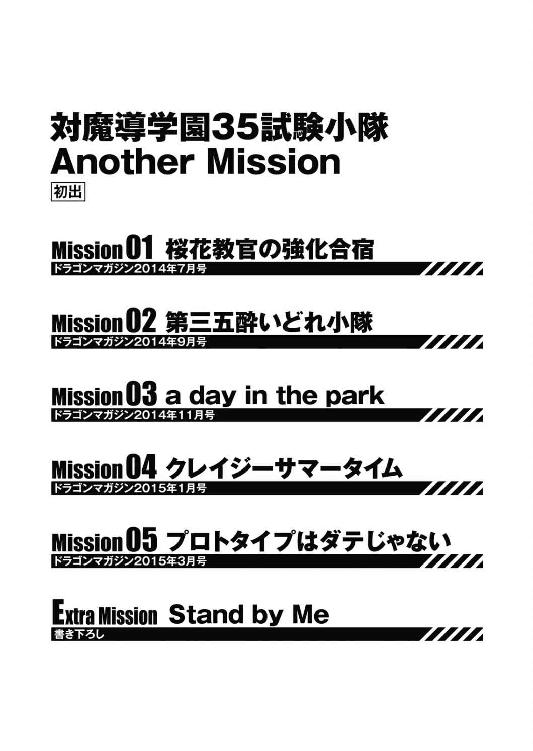
対魔導学園35試験小隊
Another Mission
柳実冬貴
平成27年11月20日 発行
発行者 三坂泰二
発行 株式会社ＫＡＤＯＫＡＷＡ
〒102-8177 東京都千代田区富士見2-13-3
03-3238-8521（カスタマーサポート）
http://www.kadokawa.co.jp/
(C)Touki Yanagimi, Kippu 2015
本電子書籍は下記にもとづいて制作しました
富士見ファンタジア文庫『対魔導学園35試験小隊 Another Mission』
平成27年11月25日初版発行